Digital Transformation Handbook for Health Product Catalogue
Front matter
Acknowledgements
✎ edit📣 feedback The World Health Organization (WHO) is grateful for the contributions of many individuals and organizations in the development of this handbook. This handbook was authored by Carl Leitner and Swaroop Jayaprakash of the WHO Department of Digital Health and Innovations (DHI) and Ramy Guirguis of the United States Agency for International Development (USAID). The following individuals (in alphabetical order) reviewed drafts of the handbook at various stages and provided feedback to the authors: Victor Adebayo (Catholic Relief Services, United States of America [USA]), Salvador Alvarado (Uppsala Monitoring Centre [UMC], Sweden), Peter Alvarez (GS1, USA), Teddy Berihun (Palladium, USA), Saurav Bhattarai (Deutsche Gesellschaft für Internationale Zusammenarbeit [GIZ] GmbH, Germany), José Costa Teixeira (PATH, Belgium), David Crewe-Brown (Vitalliance, South Africa), Munyangaju Jose Edouard (Rwanda Food and Drugs Authority [FDA], Rwanda), Helvert Felipe Molina Leon (Pan American Health Organization [PAHO], Argentina), Malin Fladvad (UMC, Sweden), Kevin Gandhi (USAID, USA), Parambir Gill (The Global Fund to Fight AIDS, Tuberculosis and Malaria [Global Fund], Switzerland), Ramy Guirguis (USAID, USA), Lisa Hedman (WHO, Switzerland), Nuran Idris (GS1, Kenya), Walid Irshad (USAID Global Health Supply Chain Program– Procurement and Supply Management [GHSC-PSM], USA), Sachin Jagtap (Gavi, the Vaccine Alliance, Switzerland), Swaroop Jayaprakash (WHO consultant, USA), Max Kabalisa (United Nations Children’s Fund [UNICEF], Denmark), Violet Ketani (USAID GHSC-PSM, USA), Olof Lagerlund (UMC, Sweden), Carl Leitner (WHO, Switzerland), Christine Lenihan (VillageReach, USA), Géraldine-Lissalde Bonnet (GS1, Belgium), Petros Lukonde (Ministry of Health, Zambia), Emmanuel Ndilowe (USAID GHSC-PSM / Ministry of Health Health Technical Support Services, Malawi), Geoffrey Ngwira (Central Medical Stores Trust, Malawi), Mohamed Hassan Nour (WHO Regional Office for the Eastern Mediterranean), Alpha Nsaghurwe (John Snow Inc, United Republic of Tanzania), Natschja Ratanaprayul (WHO, Switzerland), Daniel Rizzato Lede (PAHO, Argentina), Anita Sands (WHO, Switzerland), Kim Shelsby (DAI, USA), Al Shiferaw (Bill & Melinda Gates Foundation, USA), Joseph Shobe (USAID GHSC-PSM, USA), Rachel Smith (USAID GHSC-PSM, USA), Stewart Stremel (Lightwell Limited Liability Company, USA), Brian Taliesin (PATH, Kenya), Dessalegn Tesfaye (USAID, Rwanda), Anuschka Veldhuis (i+solutions, Netherlands), Uwe Wahser (GIZ, Germany), Josh Zamor (VillageReach, USA). All of the external experts involved in this initiative completed and submitted a WHO Declaration of Interests (DOI) form. The review of these DOI forms did not identify any conflicts of interest. This work was funded by USAID. All technical and funding inputs from institutions and individuals from the United States of America preceded 20 January 2025.
Abbreviations
✎ edit📣 feedback AEFI Adverse effects following immunisation AIDC Automatic identification and data capture ATC Anatomical therapeutic chemical classification system DAK Digital adaptation kit DH&I Digital health and interoperability DHSC Digital health supply chain DIIG Digital implementation investment guide eLMIS Electronic logistic management information system FDA Food and Drugs Authority FHIR Fast Healthcare Interoperability Resources® GDSN Global Data Synchronisation Network GTIN Global trade item number HL7 Health Level Seven® ICD-11 International classification of diseases, 11th Revision ICHI International classification of health interventions ID Identity/identification IDMP Identification of medicinal products – a suite of five standards developed within the International Organization for Standardization (ISO) to facilitate the unique identification of medicinal products INN International non-proprietary name IT Information technology NAFDAC National Agency for Food and Drug Administration and Control NGO Non-governmental organisation NPC National product catalog NRA National Regulatory Authority OpenHIE Open Health Information Exchange
✎ edit📣 feedback PCMT Product catalog management tool RFP Request for proposal RFQ Request for quote RMS Rwanda Medical Supply Ltd. SCISMM Supply chain information systems maturity model SMART Standards-based, machine-readable, adaptive, requirements-based and testable SOP Standard operating procedure SWG Small working group TOR Terms of reference TSS Target Software Standards UAT User acceptance testing UMC Uppsala Monitoring Centre USAID United States Agency for International Development USAID GHSC-PSM USAID Global Health Supply Chain Program-Procurement and Supply Management WHO World Health Organization WHODrug International reference for medicinal product information, maintained by the Swedish foundation, UMC WMS Warehouse management system ZAMMSA Zambia Medicines and Medical Supplies Agency ZAMRA Zambia Medicines Regulatory Authority
✎ edit📣 feedback Table.
Abbreviations
| Abbreviation | Definition |
|---|---|
| AEFI | Adverse effects following immunisation |
| AIDC | Automatic identification and data capture |
| ATC | Anatomical therapeutic chemical classification system |
| DAK | Digital adaptation kit |
| DH&I | Digital health and interoperability |
| DHSC | Digital health supply chain |
| DIIG | Digital implementation investment guide |
| eLMIS | Electronic logistic management information system |
| FDA | Food and Drugs Authority |
| FHIR | Fast Healthcare Interoperability Resources® |
| GDSN | Global Data Synchronisation Network |
| GTIN | Global trade item number |
| HL7 | Health Level Seven® |
| ICD-11 | International classification of diseases, 11th Revision |
| ICHI | International classification of health interventions |
| ID | Identity/identification |
| IDMP | Identification of medicinal products – a suite of five standards developed within the International Organization for Standardization (ISO) to facilitate the unique identification of medicinal products |
| INN | International non-proprietary name |
| IT | Information technology |
| NAFDAC | National Agency for Food and Drug Administration and Control |
| NGO | Non-governmental organisation |
| NPC | National product catalog |
| NRA | National Regulatory Authority |
| OpenHIE | Open Health Information Exchange |
| PCMT | Product catalog management tool |
| RFP | Request for proposal |
| RFQ | Request for quote |
| RMS | Rwanda Medical Supply Ltd. |
| SCISMM | Supply chain information systems maturity model |
| SMART | Standards-based, machine-readable, adaptive, requirements-based and testable |
| SOP | Standard operating procedure |
| SWG | Small working group |
| TOR | Terms of reference |
| TSS | Target Software Standards |
| UAT | User acceptance testing |
| UMC | Uppsala Monitoring Centre |
| USAID | United States Agency for International Development |
| USAID GHSC-PSM | USAID Global Health Supply Chain Program-Procurement and Supply Management |
| WHO | World Health Organization |
| WHODrug | International reference for medicinal product information, maintained by the Swedish foundation, UMC |
| WMS | Warehouse management system |
| ZAMMSA | Zambia Medicines and Medical Supplies Agency |
| ZAMRA | Zambia Medicines Regulatory Authority |
Abbreviations
Glossary
✎ edit📣 feedback Data element A unit of data that has a specific and precise meaning. Digitization The process of converting and organizing data from paper records into a digital format for easier entry, storage and retrieval. Digitization is the initial step towards digital transformation.1, 2 Digitalization The process of digitally automating and simplifying processes to streamline individual health programmes and reducing manual efforts for greater efficiency. Digitalization is the second step towards digital transformation.3, 4 Digital transformation The process of digitally optimizing and driving systems-level changes by leveraging innovation, analytics, and feedback mechanisms to improve person centred health systems. Digital technologies are used to fundamentally change and improve how health services are delivered and accessed across all health programme areas.5, 6, 7 End user People who will be using the digital system(s). Features The characteristics of your system that include look and feel as well as what the system can do (e.g., “approval workflow” can be a feature of a product master data management solution). Functional requirements Description of what the digital system needs to do to support the tasks that make up the health system process and address the identified challenges (e.g., a product master data management solution must be able to define categories and attributes to organize product information). Generic product or product information In this handbook, the terms ‘generic product,’ ‘product,’ or ‘product information’ pertain to the general identifying details of a health product, excluding any manufacturer-specific information. Interoperability Ability of different applications to access, exchange, integrate and use data in a coordinated and consistent manner through the use of shared application interfaces, value sets, concepts and standards, within and across organizational, regional and national boundaries, to provide timely and seamless portability of information and optimize health outcomes. Non-functional requirements Description of the attributes and constraints that the system must have to ensure its quality and performance. These requirements do not specify what the system should do, but rather how the system should perform its functions. (e.g., a product master data management solution must be able to support offline mode when network connectivity is not available) Open source Open-source software is software with source code that is published and made freely available to the public, enabling anyone to inspect, modify and enhance the code.8 While the source code is open to everyone, this does not mean that implementation of software is necessarily without costs. An open-source software must have a license approved by the Open-Source Initiative.9 Open standards Standards that are documented and made freely available to the public, which are developed, approved, and maintained via a collaborative and consensus driven process. Open standards facilitate interoperability and data exchange and are intended for widespread adoption. 10 Organogram A visual representation of the organization structure showing the hierarchy of various roles and their reporting relationships
✎ edit📣 feedback Registry A governed, authoritative and centralized information system that captures, stores, and maintains the unique attributes and identifiers of health facilities, health service users, products and/or health workforce using a predefined canonical minimum data set. SMART Guidelines WHO standards-based, machine-readable, adaptive, requirements-based, and testable Guidelines are recommended digital capabilities, health and data content. They represent a comprehensive set of reusable digital health components (e.g., interoperability standards, code libraries, algorithms, technical and operational specifications) that transform the guideline adaptation and implementation process to preserve fidelity and accelerate uptake. SMART Guidelines provide a five-step pathway to advance the adoption of best clinical and data practices, even if a country is not yet fully digital.11, 12 Trade item Products or services that are priced, ordered or invoiced at any point in the supply chain.13 User acceptance testing (UAT) UAT is done to see whether the end-users are satisfied with the end product.14
✎ edit📣 feedback Table.
Glossary of terms in the handbook
| Term | Definition |
|---|---|
| Data element | A unit of data that has a specific and precise meaning. |
| Digitization | The process of converting and organizing data from paper records into a digital format for easier entry, storage and retrieval. Digitization is the initial step towards digital transformation.1, 2 |
| Digitalization | The process of digitally automating and simplifying processes to streamline individual health programmes and reducing manual efforts for greater efficiency. Digitalization is the second step towards digital transformation.3, 4 |
| Digital transformation | The process of digitally optimizing and driving systems-level changes by leveraging innovation, analytics, and feedback mechanisms to improve person centred health systems. Digital technologies are used to fundamentally change and improve how health services are delivered and accessed across all health programme areas.5, 6, 7 |
| End user | People who will be using the digital system(s). |
| Features | The characteristics of your system that include look and feel as well as what the system can do (e.g., “approval workflow” can be a feature of a product master data management solution). |
| Functional requirements | Description of what the digital system needs to do to support the tasks that make up the health system process and address the identified challenges (e.g., a product master data management solution must be able to define categories and attributes to organize product information). |
| Generic product or product information | In this handbook, the terms ‘generic product,’ ‘product,’ or ‘product information’ pertain to the general identifying details of a health product, excluding any manufacturer-specific information. |
| Interoperability | Ability of different applications to access, exchange, integrate and use data in a coordinated and consistent manner through the use of shared application interfaces, value sets, concepts and standards, within and across organizational, regional and national boundaries, to provide timely and seamless portability of information and optimize health outcomes. |
| Non-functional requirements | Description of the attributes and constraints that the system must have to ensure its quality and performance. These requirements do not specify what the system should do, but rather how the system should perform its functions. (e.g., a product master data management solution must be able to support offline mode when network connectivity is not available) |
| Open source | Open-source software is software with source code that is published and made freely available to the public, enabling anyone to inspect, modify and enhance the code.8 While the source code is open to everyone, this does not mean that implementation of software is necessarily without costs. An open-source software must have a license approved by the Open-Source Initiative.9 |
| Open standards | Standards that are documented and made freely available to the public, which are developed, approved, and maintained via a collaborative and consensus driven process. Open standards facilitate interoperability and data exchange and are intended for widespread adoption. 10 |
| Organogram | A visual representation of the organization structure showing the hierarchy of various roles and their reporting relationships |
| Registry | A governed, authoritative and centralized information system that captures, stores, and maintains the unique attributes and identifiers of health facilities, health service users, products and/or health workforce using a predefined canonical minimum data set. |
| SMART Guidelines | WHO standards-based, machine-readable, adaptive, requirements-based, and testable Guidelines are recommended digital capabilities, health and data content. They represent a comprehensive set of reusable digital health components (e.g., interoperability standards, code libraries, algorithms, technical and operational specifications) that transform the guideline adaptation and implementation process to preserve fidelity and accelerate uptake. SMART Guidelines provide a five-step pathway to advance the adoption of best clinical and data practices, even if a country is not yet fully digital.11, 12 |
| Trade item | Products or services that are priced, ordered or invoiced at any point in the supply chain.13 |
| User acceptance testing (UAT) | UAT is done to see whether the end-users are satisfied with the end product.14 |
Glossary of terms in the handbook
Introduction
What is Product Master Data?
✎ edit📣 feedback Health products pass through multiple supply chain partners and processes as they move from manufacturers to end-users. For transactions to be seamless, all stakeholders must consistently identify health products using standardized information. For example, if a country’s central warehouse receives a shipment of vaccines with identifiers that do not match its standardized data, manual reconciliation will be required. This can lead to delays, errors, and distribution disruptions, ultimately impacting health outcomes. Uniform and standardized product information builds trust among supply chain partners. By matching standardized data with physical products, partners can validate the source of health products. Most importantly, accurate, reliable, and consistent product information enables health facilities and individuals to verify product authenticity and use them with confidence. What is Product Master Data? Data plays a crucial role in the efficient management of health supply chains, ensuring that essential health products reach the right location at the right time and cost. High-quality, timely data provides supply chain leaders with critical insights, enabling informed decision-making that improves health outcomes. Product master data consists of standardized information that accurately describes a health product’s characteristics. This data remains consistent across all instances of a product. Examples include product description, dosage, pharmaceutical strength, manufacturer details, and shelf life. In contrast, transactional data—such as batch numbers, manufacturing dates, and serial numbers—varies with each specific instance of the product. Fig. 1: Product master data Product identifier, Name, Description, Unit of measure Dosage, Strength, Route of administration, Doses per vial Packaging, Volumetrics Shelf life, Storage temperature Product characteristics/ specifications ICD, ATC General Information Classification Pharmaceutical Information Logistical Information PRODUCT MASTER DATA HEALTH PRODUCT
✎ edit📣 feedback Figure 1.
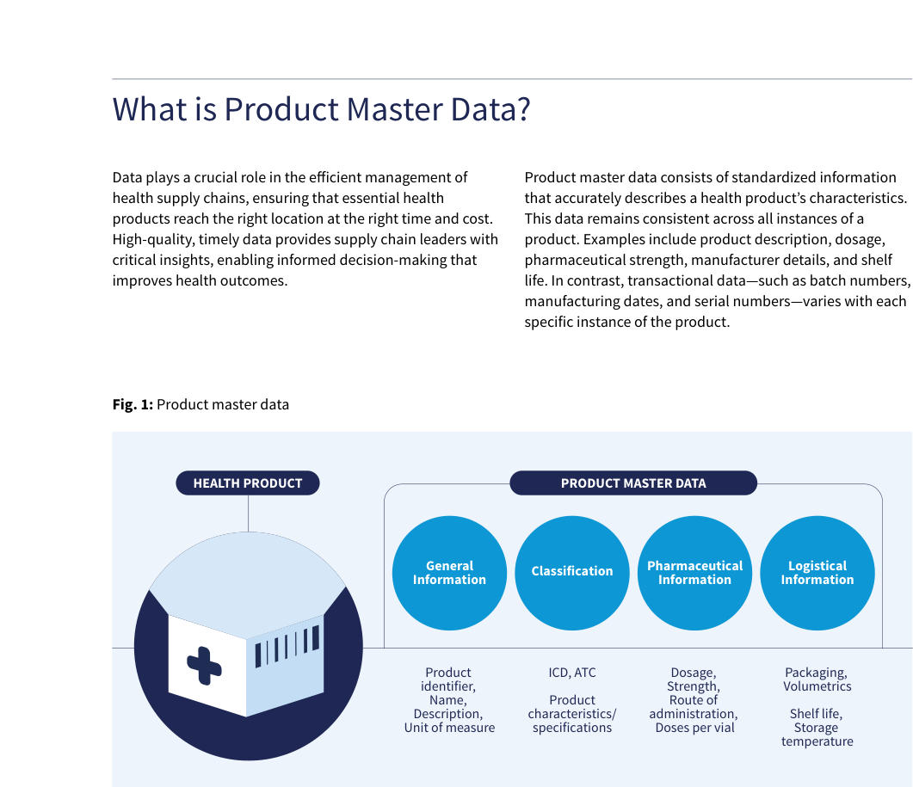
Source: WHO, Digital transformation handbook for health product catalogue, 2025, PDF page 10; rendered from the PDF's vector layer in the L1 entry.
Product master data
Why is Product Master Data important?
✎ edit📣 feedback Why is Product Master Data important? Product master data is central to all operational processes across supply chain partners. It ensures that each entity uniformly understands the transactional information exchanged throughout the supply chain. Acting as a common language, product master data links all supply chain data—including orders, shipments, and inventory— from manufacturing to dispensing. This standardization helps supply chain partners, processes, and systems interoperate effectively. Similarly, facility master data plays a critical role in enabling national supply chain partners to coordinate the delivery of health products to the correct locations. Fig. 2: Importance of product master data Manufacturers Procurers Ministry of Health / Programs Donors Shippers Regulatory Authority Central/ Regional / District Warehouses Health Facilities General Information Product Code, Name, Description, Unit of Measure Classification Details Category, Product Characteristics/Specifications, Attributes Pharmaceutical Information Dosage, Strength, Route of Administration Logistical Information Packaging, Shelf life, Storage Temp. Other Information Forecasting and Supply Planning Procurement Ordering / Re-ordering Inventory Management Distribution Dispensing Product Recalls Finance / Insurance SUPPLY CHAIN PARTNERS PRODUCT MASTER DATA SUPPLY CHAIN PROCESSES Patients
✎ edit📣 feedback Figure 2.
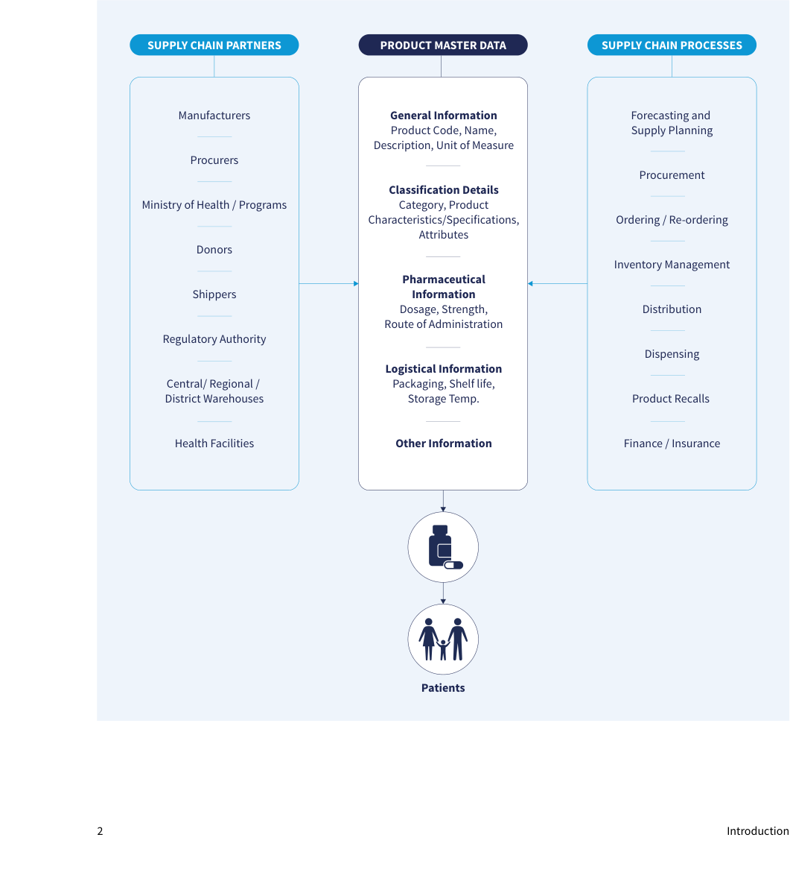
Source: WHO, Digital transformation handbook for health product catalogue, 2025, PDF page 11; rendered from the PDF's vector layer in the L1 entry.
Importance of product master data
Digital implementation investment guide (DIIG)
✎ edit📣 feedback Product code: 123123 Manufacturers Patients Product code: A1232 Central warehouse Product code: P44545 Health facilities Product code: AM545 Community health workers PHYSICAL FLOW OF HEALTH PRODUCTS Warehouse management system eLMIS Paper forms Health products that are inconsistently identified by different supply chain partners create barriers to data sharing, interpretation, and interoperability. Inconsistent product information leads to inefficiencies such as duplicate datasets for the same product, increased manual reconciliation efforts, and data quality issues. As shown in Figure 3, variations in product identification across the supply chain hinder seamless information exchange, reducing end-to-end visibility and complicating product tracking and tracing. Digital implementation investment guide (DIIG) Given the critical role of master data in the health supply chain, adopting a standardized approach to product master data management is essential. This handbook provides guidance on implementing standardized product master data management. It has been developed using the framework and approaches from the Digital implementation investment guide (DIIG). The DIIG supports governments and technical partners in planning digital health implementations that align with national health system goals. This handbook complements the DIIG by providing a structured approach to implementing a national product catalogue (NPC) for standardized product master data management. Standardized product master data enables interoperability between digital health systems, regulatory frameworks, and supply chain platforms. Effective master data management helps integrate health information with supply chain data, improving key areas such as:
- Product recalls
- Detection of falsified products
- Pharmacovigilance
- Monitoring Adverse effects following immunisation (AEFI) By leveraging standardized product master data, health systems can enhance data accuracy, improve decision- making, and strengthen overall supply chain efficiency. Fig. 3: Impact of inconsistent product information
✎ edit📣 feedback Figure 3.
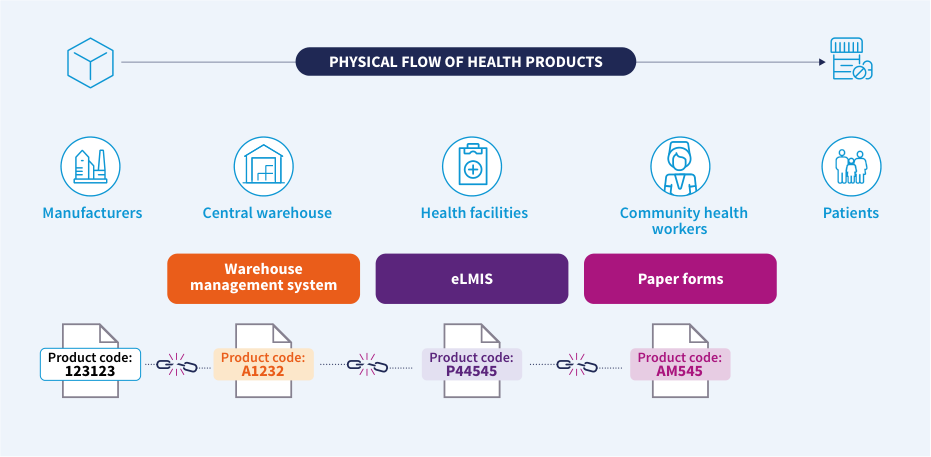
Source: WHO, Digital transformation handbook for health product catalogue, 2025, PDF page 12; rendered from the PDF's vector layer in the L1 entry.
Impact of inconsistent product information
✎ edit📣 feedback Fig. 4: Planning and implementing a digital health enterprise: phases, steps and resources ICT = information and communications technology ITU = International Telecommunication Union M&E = monitoring and evaluation SMART = Standards-based, Machine-readable, Adaptive, Requirements-based and Testable WHO core indicator sets Global digital health index WHO digital health atlas Digital health investment review tool HIS stages of continuous improvement + Conduct an inventory of existing or previously used software applications, ICT systems and other tools to better understand the requirements for reuse and interoperability + Develop a national digital health strategy outlining overarching needs, desired activities and outcomes + Define a vision for how the health system will be strengthened through the use of digital technology + Formulate a digital health investment roadmap to support the national digital health strategy + Plan and identify appropriate digital interventions, alongside the health and data content, to improve health system processes and address programmatic needs + Monitor implementation to ensure digital implementations are functioning as intended and having the desired effect + Foster data-driven adaptive change management within the overall health system + Identify validated health content appropriate for the implementation context + Ensure use of content aligned with identified standards for the future state + Maintain and sustain digital health implementations + Identify risks and appropriate mitigations ASSESSING THE CURRENT STATE AND ENABLING ENVIRONMENT PHASE DEFINING THE FUTURE STATE PHASE M&E OF DIGITAL HEALTH IMPLEMENTATIONS AND FOSTERING DATA USE PHASE DETERMINING HEALTH CONTENT REQUIREMENTS PHASE ESTABLISHING A SHARED UNDERSTANDING AND STRATEGIC PLANNING PHASE IMPLEMENTING, MAINTAINING AND SCALING PHASE PLANNING THE ENTERPRISE ARCHITECTURE PHASE WHO–ITU national eHealth strategy toolkit WHO handbook for health supply chain architecture WHO classification of digital health interventions WHO guideline: recommendations on digital interventions for health system strengthening ITU digital health platform handbook UNICEF human- centred design toolkit World Bank digital identity toolkit WHO digital clearing- house Digital implementation investment guide Asian Development Bank total cost of ownership tool WHO handbook for health supply chain architecture WHO handbook for health product catalogue (this document) WHO MAPS toolkit: mHealth assessment and planning for scale WHO hand- book for digitalizing primary health care Be He@lthy, Be Mobile handbooks for non- communicable diseases PATH Defining and building a data use culture MEASURE data demand and use of resources WHO SCORE WHO M&E digital health interventions ITU SDG digital investment framework (eGov) Open Health Information Exchange (OpenHIE) PDF for print Online environment The Open Group Architecture Framework (TOGAF) Guidance for investing in digital health Digital Square global goods guidebook Principles for donor alignment Principles for digital development Machine- readable recommen- dations Digital adaptation kits WHO SMART guidelines STEPS Source: adapted from the 2020 WHO Digital Implementation Investment Guide (1). + Review the current state and develop an architecture blueprint for the design of the digital health implementations + Identify validated open standards to ensure data exchange, systems integration and future-proofing of digital health implementations
✎ edit📣 feedback Figure 4.
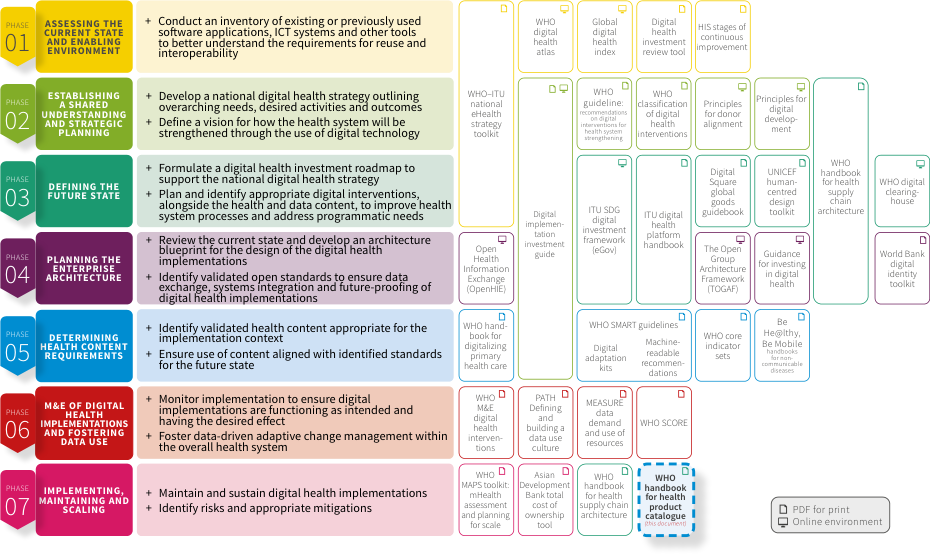
Figure 4 — Planning and implementing a digital health enterprise: phases, steps and resources (WHO Digital Implementation Investment Guide, p. 13).
WHO SMART guidelines (Machine-readable recommendations, Digital adaptation kits)
Planning and implementing a digital health enterprise: phases, steps and resources
SMART Guidelines
✎ edit📣 feedback SMART Guidelines This handbook is developed to complement the WHO’s Standards-based, Machine-readable, Adaptive, Requirements-based, and Testable (SMART) Guidelines initiative by providing guidance on NPC implementations that align with digital health implementations. SMART Guidelines are a structured approach to integrating recommended public health and clinical practices into digital systems. They represent the WHO’s approach to systematising and accelerating the consistent application of recommended, life-saving interventions in the digital age. SMART Guidelines offer a comprehensive set of reusable digital health components, following a five-step model that progressively increases in complexity to advance the adoption of best clinical and data practices. The five knowledge layers include: 1. L1 – Narrative: enhanced clinical, public health guidelines and structured data recommendations. 2. L2 – Operational: Digital Adaptation Kits (DAKs) for local implementation. 3. L3 – Machine-Readable: guidelines in structured, computable formats. 4. L4 – Executable: reference applications and interoperable digital services. 5. L5 – Dynamic: precision health models for evolving health system needs. These layers guide stakeholders on translating recommendations into specifications and standards, technical specialists on integrating recommendations into updatable digital systems, and countries on localising, institutionalising, and updating digital systems while maintaining consistency with evidence-based recommendations (Figure 5).15 Fig. 5: WHO SMART Guidelines Approach DATA, EVIDENCE, AND IMPACT L2: Operational Semi-structured documentation of operational and functional requirements: Digital adaptation kits L3: Machine readable Structured, sofware-neutral, specifications, code, terminology and interoperability standards: Machine-readable recommendations L4: Executable Sofware that is able to execute static algorithms and interoperable digital components and deliver operational and functional requirements: Reference sofware L5: Dynamic Executable dynamic algorithms that are trained and optimised with advanced analytics to achieve prioritise outcomes: Precision health models L1: Narrative Guideline and data recommendations: Enhanced guidelines L2: Adaptation Localised requirements L3: Adaptation Localised machine readable code and standards L4: Adaptation Localised static digital services and applications within a digital health enterprise L5: Adaptation Dynamic digital applications and services trained and optimised for prioritised local outcomes L1: Adaptation National policies, guidelines, data, and operational procedures RESEARCH AND EVIDENCE BASE Knowledge layers and associated products Country implementation EVIDENCE FROM DIGITAL IMPLEMENTATIONS LOCALISATION
✎ edit📣 feedback Figure 5.
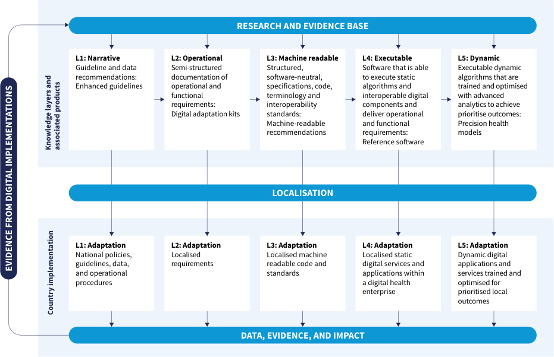
Figure 5 — WHO SMART Guidelines Approach (L1 Narrative, L2 Operational, L3 Machine-readable, L4 Executable, L5 Dynamic knowledge layers, p. 14).
Structured, software-neutral, specifications, code, terminology and interoperability standards: Machine-readable recommendations
WHO SMART Guidelines Approach
✎ edit📣 feedback The focus of SMART Guidelines is on digital capabilities for healthcare. Specifically, they define recommended public health and clinical business processes using structured, task-based workflows. Many of these workflows intersect with product information management within the supply chain (Figure 6). Fig. 6: Example of an Antenatal Care Business clinical workflow with highlighted connections to supply chain Source: Digital Adaptation Kit for Antenatal Care: Operational requirements for implementing WHO recommendations in digital systems Health facility Client Health worker ANC assessment 10. Counselling, in-facility management and treatment Start Arrive at facility A. Registration 1. Rapid assessment and management (RAM) 2. Danger signs needing referral? 3. Confirm pregnancy C. Antenatal care (ANC) referral Yes No Refer to other sexual and reproductive health services Not pregnant 4. First contact? Pregnant 6. Collect woman’s profile and history 7. Check symptoms and follow-up 8. Conduct physical exam 9. Conduct laboratory tests and imaging 11. Referral needed? C. ANC referral Yes 12. Scheduling 13. Self-care in the home or community No 14. Woman returns? End No Yes 5. Quick check First contact Not first contact 10.1 Behaviour counselling 10.2 Physiological symptoms counselling 10.3 Diet counselling 10.4 Diagnosis and treatment 10.5 Nutrition supplementation 10.8 Intimate partner violence counselling 10.6 Risk reduction and general counselling 10.7 Immunizations 10.9 Deworming and malaria counselling and prophylaxis ANC assessment 10. Counselling, in-facility management and treatment 6. Collect woman’s profile and history 7. Check symptoms and follow-up 8. Conduct physical exam 9. Conduct laboratory tests and imaging 10.1 Behaviour counselling 10.2 Physiological symptoms counselling 10.3 Diet counselling 10.4 Diagnosis and treatment 10.5 Nutrition supplementation 10.8 Intimate partner violence counselling 10.6 Risk reduction and general counselling 10.7 Immunizations 10.9 Deworming and malaria counselling and prophylaxis Effective healthcare delivery relies on the timely availability of high-quality health products. Standardized product master data enhances the interoperability of health, regulatory, and digital supply chain systems, ensuring seamless data exchange and promoting the timely supply of essential health products. This handbook complements the digital capabilities supported by SMART Guidelines by providing guidance on L1 adaptations for the management of standardized product master data.
✎ edit📣 feedback Figure 6.
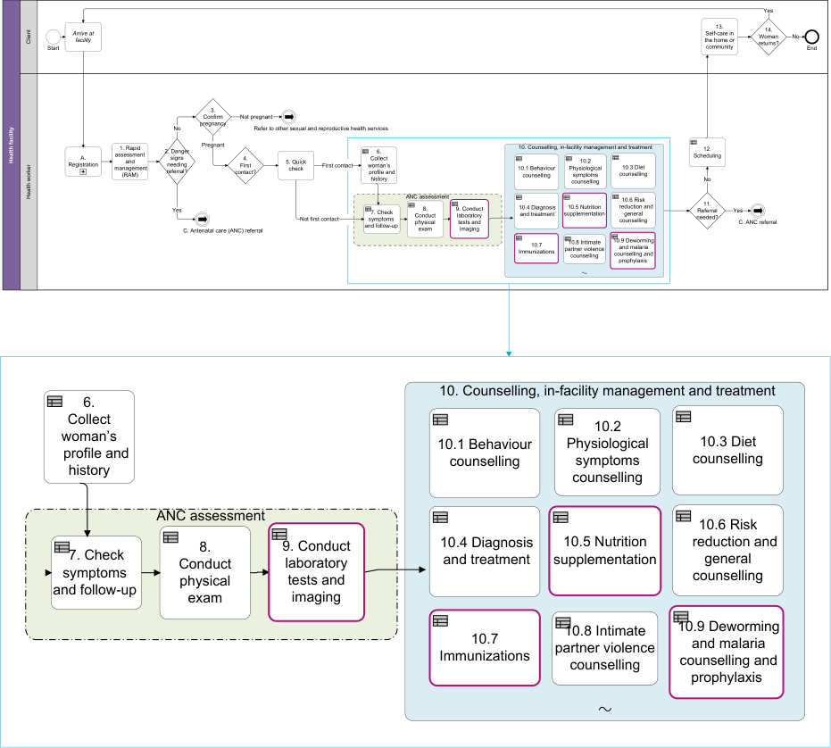
Figure 6 — Example of an Antenatal Care Business clinical workflow with highlighted connections to supply chain (p. 15).
Source: Digital Adaptation Kit for Antenatal Care: Operational requirements for implementing WHO recommendations in digital systems
Example of an Antenatal Care Business clinical workflow with highlighted connections to supply chain
Digital health supply chain (DHSC) architectural components
✎ edit📣 feedback Digital health supply chain (DHSC) architectural components The Digital Transformation Handbook for Health Supply Chain Architecture16 outlines an architectural framework that includes various components such as foundational, data services, interoperability, and health supply chain information systems. Foundational architectural components, such as facility registry, product registry, and supplier registry, play a crucial role in establishing an effective DHSC. These components ensure accurate and timely data exchange, promoting seamless integration and interoperability across various health information systems. The product registry, in particular, is essential for maintaining standardized product master data, facilitating efficient supply chain operations, and enhancing healthcare delivery. The primary focus of this handbook is to offer guidance on the implementation and management of the foundational product registry component. Although it predominantly addresses health products, it does not cover specific considerations for medical devices. Future publications are expected to provide dedicated guidelines for medical devices and other products requiring specialised attention. Fig. 7: Digital health supply chain architecture framework SHARED SERVICES DIGITAL HEALTH SUPPLY CHAIN ENTERPRISE INTEROPERABILITY LAYER Enabling components DATA SERVICES HEALTH SUPPLY CHAIN INFORMATION SYSTEMS Analytics Supply chain reports Data warehouse Traceability Track and trace Product verification Digital Ecosystems Quality systems Health mgmt. info systems Regulatory systems Finance and insurance systems External systems Global platforms Manufacturer systems Data repositories Foundational components Facility registry Product registry Supplier registry Forecasting & planning Authentication Orchestration Encryption Validation Transformation Translation Order management Warehouse management Cold chain management Procurement Supplier and contract management Transportation management Dispensing
✎ edit📣 feedback Figure 7.
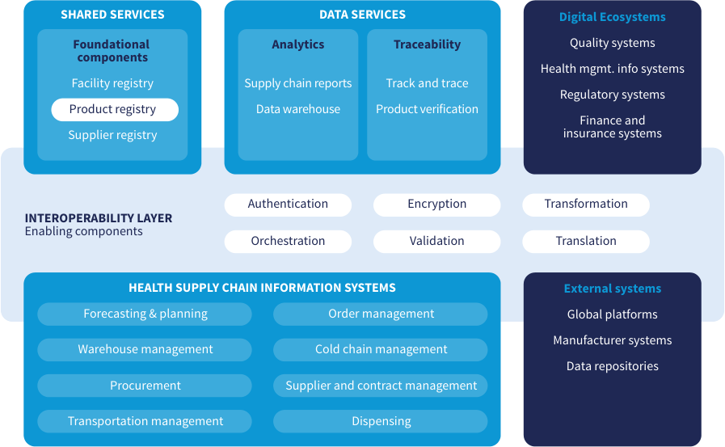
Source: WHO, Digital transformation handbook for health product catalogue, 2025, PDF page 16; rendered from the PDF's vector layer in the L1 entry.
Digital health supply chain architecture framework
How to use this handbook; how it was developed
✎ edit📣 feedback How to use this handbook This handbook provides a stepwise approach to implementing standardized NPC and product master data management processes.
- Chapter 1 outlines guidance on establishing the necessary regulatory framework to support and promote product master data standardization.
- Chapter 2 addresses policies and considerations for product master data management.
- Chapter 3 presents technology specifications and implementation considerations.
- Chapter 4 highlights the importance of robust change management and governance.
- Chapter 5 explores approaches for building human resource capacity to sustainably manage NPC.
- Chapter 6 provides details on WHO hosted instance of the open-source product catalogue management tool (PCMT).
- Chapter 7 explains how countries can share data as a global good to WHO’s hosted instance and benefit from aggregated product master data. How this handbook was developed This handbook was developed from the experiences and feedback of a variety of experts compiled through:
- Stakeholder consultations were conducted through a series of in-country and virtual sessions with stakeholders who have supported DHSC implementations in countries such as Ethiopia, Malawi, Nigeria, Rwanda, and Zambia. These discussions focused on identifying challenges related to product master data management and data standardization, exploring country approaches to aligning with global standards, and capturing lessons learned from country experiences.
- DHSC Small Working Group (DHSC SWG): a subgroup under the Digital Health and Interoperability Working Group (DH&I WG). The DH&I WG is a volunteer community of practice committed to strengthening health systems through the appropriate and responsible use of digital health technologies. Its membership includes over 250 individuals from governments, donors, multilateral organizations, academia, the private sector, and Non-Governmental Organizations (NGOs). The DHSC SWG members met monthly to review the handbook and provide input as individual experts, collaboratively shaping its structure and content.
- Insights from NPC Implementations: practical experiences of NPCs across different contexts were analysed and integrated.
- Alignment with Established Frameworks: the steps outlined in this handbook are informed by the Principles for Digital Development (Annex 1). Some methodologies and templates have been adapted from established sources such as: - DIIG - WHO/ITU National eHealth Strategy Toolkit - Supply chain information systems maturity model (SCISMM) - OpenHIE Framework Decision-making was collaborative and consensus-based, with stakeholder feedback synthesized and validated through DHSC SWG meetings. Drafts were iteratively reviewed, revised, and agreed upon to ensure diverse perspectives were reflected and aligned with global frameworks.
Target users; when to use this handbook
✎ edit📣 feedback Target users This handbook has been developed for countries, organizations, and teams seeking to plan and implement standardized product master data management processes and systems. It provides guidance to various target audiences across different implementation phases and areas, as outlined in the table below. HANDBOOK CHAPTERS ILLUSTRATIVE TARGET ORGANIZATIONS ILLUSTRATIVE TARGET USER TEAMS AND ROLES PURPOSE OF THE CHAPTER Chapter 1 - Establishing regulatory policies to promote product master data standardization
- Ministry of Health
- National Regulatory Authority (NRA)
- Senior Management/ Leaders
- Regulatory staff To help in defining the regulatory policies that are necessary to support adoption of standardized product master data Chapter 2 - Instituting data management and governance policies
- Ministry of Health
- NRA
- Central Medical Stores
- Other data users such as funders and implementation partners
- Senior Management/ Leaders
- Regulatory staff
- Data officers
- Data management staff To help in defining and operationalizing master data management procedures and data governance mechanisms Chapter 3 - Deploying appropriate technology to manage product master data
- Ministry of Health
- NRA
- Donors and Funding partners
- Implementation partners
- Chief Digital Officers
- Project sponsors
- Project managers
- Technical/System/ Enterprise Architects and Team
- Supply Chain/ Operational Leaders and Team To help in identifying and implementing appropriate technology tools for NPC Chapter 4 - Creating protocols for managing change
- Ministry of Health
- NRA
- Central Medical Stores
- Donors and Funding partners
- Implementation partners
- Senior Management/ Leaders
- Regulatory staff
- Project managers
- Data management staff
- Technical/System/ Enterprise Architects and Team
- Supply Chain/ Operational Leaders and Team
- Regulatory/Monitoring/ Pharmacovigilance teams To help in developing and implementing robust change management and governance mechanisms to facilitate the smooth transition of processes, people, and technology toward the utilisation of standardized data
✎ edit📣 feedback HANDBOOK CHAPTERS ILLUSTRATIVE TARGET ORGANIZATIONS ILLUSTRATIVE TARGET USER TEAMS & ROLES PURPOSE OF THE CHAPTER Chapter 5 - Building capacity to sustainably manage NPC
- Ministry of Health
- NRA
- Central Medical Stores
- Donors and Funding partners
- Implementation partners
- Senior Management/ Leaders
- Chief Digital Officers
- Supply Chain/ Operational Leaders and Team
- Project sponsors To help in identifying human resource needs and developing a comprehensive plan to build capacity that can be sustained Chapter 6 - Leveraging the WHO-hosted PCMT
- Ministry of Health
- NRA
- Digital Health Departments
- Senior Management/ Leaders
- Chief Digital Officers To share details of WHO’s PCMT instance that countries could use for their product master data management needs, if necessary Chapter 7 - Sharing product master data as a global good
- Ministry of Health
- NRA
- Senior Management/ Leaders
- Chief Digital Officers
- Data officers
- Data management staff To outline details of product master dataset that can be shared and used by countries When to use this handbook This handbook would be a useful resource in the following scenarios.
- When establishing standardized product master data management to support interoperability of health supply chain systems and processes.
- When taking a comprehensive approach to digitalizing supply chain processes such as receiving and shipping with adoption of automatic identification and data capture (AIDC) utilizing globally standardized data carriers and barcode labels.
- When there are disparate and varied sets of product information including identifiers managed across different health, regulatory and supply chain entities, processes and systems, hindering interoperability.
- When investing in new supply chain and regulatory information systems that need to interoperate and exchange data.
- When developing a holistic DHSC strategy and architecture.
✎ edit📣 feedback Table.
Target users of this handbook across Chapters 1–7
| HANDBOOK CHAPTERS | ILLUSTRATIVE TARGET ORGANIZATIONS | ILLUSTRATIVE TARGET USER TEAMS AND ROLES | PURPOSE OF THE CHAPTER |
|---|---|---|---|
| Chapter 1 - Establishing regulatory policies to promote product master data standardization | • Ministry of Health • National Regulatory Authority (NRA) |
• Senior Management/Leaders • Regulatory staff |
To help in defining the regulatory policies that are necessary to support adoption of standardized product master data |
| Chapter 2 - Instituting data management and governance policies | • Ministry of Health • NRA • Central Medical Stores • Other data users such as funders and implementation partners |
• Senior Management/Leaders • Regulatory staff • Data officers • Data management staff |
To help in defining and operationalizing master data management procedures and data governance mechanisms |
| Chapter 3 - Deploying appropriate technology to manage product master data | • Ministry of Health • NRA • Donors and Funding partners • Implementation partners |
• Chief Digital Officers • Project sponsors • Project managers • Technical/System/Enterprise Architects and Team • Supply Chain/Operational Leaders and Team |
To help in identifying and implementing appropriate technology tools for NPC |
| Chapter 4 - Creating protocols for managing change | • Ministry of Health • NRA • Central Medical Stores • Donors and Funding partners • Implementation partners |
• Senior Management/Leaders • Regulatory staff • Project managers • Data management staff • Technical/System/Enterprise Architects and Team • Supply Chain/Operational Leaders and Team • Regulatory/Monitoring/Pharmacovigilance teams |
To help in developing and implementing robust change management and governance mechanisms to facilitate the smooth transition of processes, people, and technology toward the utilisation of standardized data |
| Chapter 5 - Building capacity to sustainably manage NPC | • Ministry of Health • NRA • Central Medical Stores • Donors and Funding partners • Implementation partners |
• Senior Management/Leaders • Chief Digital Officers • Supply Chain/Operational Leaders and Team • Project sponsors |
To help in identifying human resource needs and developing a comprehensive plan to build capacity that can be sustained |
| Chapter 6 - Leveraging the WHO-hosted PCMT | • Ministry of Health • NRA • Digital Health Departments |
• Senior Management/Leaders • Chief Digital Officers |
To share details of WHO’s PCMT instance that countries could use for their product master data management needs, if necessary |
| Chapter 7 - Sharing product master data as a global good | • Ministry of Health • NRA |
• Senior Management/Leaders • Chief Digital Officers • Data officers • Data management staff |
To outline details of product master dataset that can be shared and used by countries |
Target users of this handbook across Chapters 1–7
Chapter 1. Establishing regulatory policies to promote product master data standardization
Step 1. Identify necessary regulatory policies and legislations
✎ edit📣 feedback Manufacturers and distributors of health products are the source of truth for product master data. Ensuring that manufacturers and distributors consistently provide product master data in a standardized and uniform format is crucial for enabling interoperability and leveraging automation through barcode scanning. Regulatory organizations play a key role in establishing policies and legislation that mandate and enforce requirements for manufacturers and distributors to supply standardized product master data. This chapter outlines the steps that Ministries of Health and national drug regulatory authorities can take to establish appropriate policies and legislation to support and promote the use of standardized product master data. Identify necessary regulatory policies and legislations STEP 1 INPUTS STEPS RESOURCES OUTPUTS
- Existing regulatory policies and legislations Analyse current regulations to determine if they clearly articulate policies for product master data standardization and sharing, in alignment with internationally accepted standards.
- Master data guideline template
- Product identification and labelling guidance and template
- List of additional regulatory policies and legislations required
- List of modifications needed for existing policies and legislations Determine whether current data standardization and sharing policies have adequate and institutionalised mechanisms to ensure compliance. Identify the required additional regulatory policies and legislations and any updates needed for current regulations. POTENTIAL RISKS MITIGATION
- The regulatory authority may be new and may not have capacity.
- The regulatory authority may be preoccupied with other competing priorities. Identify and engage key partners, including funding organizations and implementation partners, to support policy review and drafting of new or updated regulations. There may be uncertainty regarding which agency holds the mandate to create and enforce the required regulations and policies. Develop a Responsibility Assignment Matrix (RAM)—such as a Responsible, Accountable, Consulted, and Informed (RACI) chart—to clearly define roles, tasks, and responsibilities across agencies involved in regulatory policy development and enforcement.
✎ edit📣 feedback Table.
Chapter 1, Step 1. Identify necessary regulatory policies and legislations
| INPUTS | STEPS | RESOURCES | OUTPUTS |
|---|---|---|---|
| • Existing regulatory policies and legislations | 1. Analyse current regulations to determine if they clearly articulate policies for product master data standardization and sharing, in alignment with internationally accepted standards. 2. Determine whether current data standardization and sharing policies have adequate and institutionalised mechanisms to ensure compliance. 3. Identify the required additional regulatory policies and legislations and any updates needed for current regulations. |
• Master data guideline template • Product identification and labelling guidance and template |
• List of additional regulatory policies and legislations required • List of modifications needed for existing policies and legislations |
Potential risks and mitigation
| POTENTIAL RISKS | MITIGATION |
|---|---|
| • The regulatory authority may be new and may not have capacity. • The regulatory authority may be preoccupied with other competing priorities. |
Identify and engage key partners, including funding organizations and implementation partners, to support policy review and drafting of new or updated regulations. |
| There may be uncertainty regarding which agency holds the mandate to create and enforce the required regulations and policies. | Develop a Responsibility Assignment Matrix (RAM)—such as a Responsible, Accountable, Consulted, and Informed (RACI) chart—to clearly define roles, tasks, and responsibilities across agencies involved in regulatory policy development and enforcement. |
Chapter 1, Step 1. Identify necessary regulatory policies and legislations
Step 2. Develop the identified regulatory policies and legislations; Step 3. Coordinate reviews and approvals
✎ edit📣 feedback INPUTS STEPS RESOURCES OUTPUTS
- List of additional regulatory policies and legislations required
- List of modifications needed for existing policies and legislations Develop the required policies and regulations such as master data guidelines, ensuring they are consistent with both current and emerging regulations concerning data standardization and AIDC.
- Regulatory policies and guidelines must promote efficient mechanisms for stakeholders such as manufacturers, distributors and other suppliers to share the required data.
- Timelines with phased roll-out of policies should be outlined to ensure effective compliance by manufacturers.
- Master data guideline template
- Product identification and labelling guidance and template
- Master data related policies and legislations Update existing policies and legislations, if necessary INPUTS STEPS RESOURCES OUTPUTS
- Master data related policies and legislations Evaluate the newly developed and the revised policies and legislations led by the NRA in collaboration with primary stakeholders like the Ministry of Health, central and regional warehouses, procurement entities, manufacturers and distributors and operational leaders
- Approved master data policies and legislations Ensure that all feedback are suitably addressed, and revisions are incorporated into the final draft Obtain appropriate approvals for publishing of the policies POTENTIAL RISKS MITIGATION Preparing regulatory documents is often a lengthy process, and funding may not always be readily available.
- Identify and engage all relevant government stakeholders and senior leaders early on to foster a collaborative approach and minimise rework or repeated iterations.
- Identify and engage partners who can support with funding and other resources, such as technical experts.
- Involve private sector stakeholders, including manufacturers and distributors, to help ensure that regulatory documents are realistic and implementable. Develop the identified regulatory policies and legislations STEP 2 Coordinate reviews and approvals of the drafted policies STEP 3
✎ edit📣 feedback Table.
Chapter 1, Step 2. Develop the identified regulatory policies and legislations
| INPUTS | STEPS | RESOURCES | OUTPUTS |
|---|---|---|---|
| • List of additional regulatory policies and legislations required • List of modifications needed for existing policies and legislations |
1. Develop the required policies and regulations such as master data guidelines, ensuring they are consistent with both current and emerging regulations concerning data standardization and AIDC. - Regulatory policies and guidelines must promote efficient mechanisms for stakeholders such as manufacturers, distributors and other suppliers to share the required data. - Timelines with phased roll-out of policies should be outlined to ensure effective compliance by manufacturers. 2. Update existing policies and legislations, if necessary |
• Master data guideline template • Product identification and labelling guidance and template |
• Master data related policies and legislations |
Chapter 1, Step 2. Develop the identified regulatory policies and legislations
✎ edit📣 feedback Table.
Chapter 1, Step 3. Coordinate reviews and approvals of the drafted policies and legislations
| INPUTS | STEPS | RESOURCES | OUTPUTS |
|---|---|---|---|
| • Master data related policies and legislations | 1. Evaluate the newly developed and the revised policies and legislations led by the NRA in collaboration with primary stakeholders like the Ministry of Health, central and regional warehouses, procurement entities, manufacturers and distributors and operational leaders 2. Ensure that all feedback are suitably addressed, and revisions are incorporated into the final draft 3. Obtain appropriate approvals for publishing of the policies |
— | • Approved master data policies and legislations |
Potential risks and mitigation
| POTENTIAL RISKS | MITIGATION |
|---|---|
| Preparing regulatory documents is often a lengthy process, and funding may not always be readily available. | • Identify and engage all relevant government stakeholders and senior leaders early on to foster a collaborative approach and minimise rework or repeated iterations. • Identify and engage partners who can support with funding and other resources, such as technical experts. • Involve private sector stakeholders, including manufacturers and distributors, to help ensure that regulatory documents are realistic and implementable. |
Chapter 1, Step 3. Coordinate reviews and approvals of the drafted policies and legislations
Step 4. Publish and enforce the approved regulatory policies
✎ edit📣 feedback End of chapter checkpoint After finishing the steps outlined in this chapter, the following outputs should be available:
- Regulatory policies and legislations such as master data guidelines for product master data INPUTS STEPS RESOURCES OUTPUTS
- Approved master data policies and legislations Publish the approved policy document
- Endorsed master data policies and legislations Define mechanisms to institutionalize and monitor compliance of the policies Publish the policy document POTENTIAL RISKS MITIGATION Manufacturers’ poor adherence to regulations.
- Assess the situation to gauge current capabilities, investment willingness, and the required effort and timelines for stakeholders such as manufacturers and service providers to meet regulatory compliance.
- Define a phased approach, in consultation with stakeholders such as manufacturers and distributors, if necessary, to facilitate realistic adoption of standards and compliance with policies.
- Offer stakeholders like manufacturers clear timelines to handle transitions and ensure compliance.
- Create resources like training manuals and webinars to help various stakeholders navigate the necessary steps for managing changes.
- Establish a global standards community network to share information, best practices, and foster collaboration. Publish and enforce the approved regulatory policies to promote product master data standardization STEP 4
✎ edit📣 feedback Table.
Chapter 1, Step 4. Publish and enforce the approved regulatory policies and legislations
| INPUTS | STEPS | RESOURCES | OUTPUTS |
|---|---|---|---|
| • Approved master data policies and legislations | 1. Publish the approved policy document 2. Define mechanisms to institutionalize and monitor compliance of the policies 3. Publish the policy document |
— | • Endorsed master data policies and legislations |
Potential risks and mitigation
| POTENTIAL RISKS | MITIGATION |
|---|---|
| Manufacturers’ poor adherence to regulations. | • Assess the situation to gauge current capabilities, investment willingness, and the required effort and timelines for stakeholders such as manufacturers and service providers to meet regulatory compliance. • Define a phased approach, in consultation with stakeholders such as manufacturers and distributors, if necessary, to facilitate realistic adoption of standards and compliance with policies. • Offer stakeholders like manufacturers clear timelines to handle transitions and ensure compliance. • Create resources like training manuals and webinars to help various stakeholders navigate the necessary steps for managing changes. • Establish a global standards community network to share information, best practices, and foster collaboration. |
Chapter 1, Step 4. Publish and enforce the approved regulatory policies and legislations
Regulatory roles and process (PC-R-06..08, PC-BP-01)
✎ edit📣 feedback Persona. PC-R-06: National Regulatory Authority
Role ID: PC-R-06 | Type: stakeholder-organization | Source: who-iris/library/9789240116191-eng (page-021, page-022, page-023, page-030)
Processes: PC-BP-01
ArchiMate 0.3.0-draft.1 links: National Regulatory Authority, Regulated Trade Item, Product Master Data, Regulatory Systems
Responsibilities (from the handbook):
- Establish policies and legislation that mandate and enforce requirements for manufacturers and distributors to supply standardized Product Master Data.
- Evaluate newly developed and revised master data policies and legislations in collaboration with primary stakeholders (Ministry of Health, central and regional warehouses, procurement entities, manufacturers and distributors, and operational leaders).
- Publish and enforce approved regulatory policies to promote Product Master Data standardization.
- Authorize Regulated Trade Items within a jurisdiction and consider international references (such as WHODrug and ISO IDMP) to identify and organise Generic Product information.
✎ edit📣 feedback Persona. PC-R-07: Manufacturer / Distributor
Role ID: PC-R-07 | Type: stakeholder-organization | Source: who-iris/library/9789240116191-eng (page-021, page-022, page-023, page-033, page-039)
Processes: PC-BP-01, PC-BP-04
ArchiMate 0.3.0-draft.1 links: Manufacturer / Distributor, Trade Item, Product Master Data, Supply Chain Partners
Responsibilities (from the handbook):
- Source of truth for Product Master Data; consistently provide Product Master Data in a standardized and uniform format to enable interoperability and barcode scanning (AIDC).
- Participate in stakeholder consultation on regulatory policies and guidelines to ensure requirements and phased roll-out timelines are realistic and implementable.
- Assign globally unique trade item numbers (GTINs) to Trade Items and submit standardized Product Master Data during regulatory product registration and supply.
✎ edit📣 feedback Persona. PC-R-08: Ministry of Health
Role ID: PC-R-08 | Type: stakeholder-organization | Source: who-iris/library/9789240116191-eng (page-018, page-019, page-021, page-022)
Processes: PC-BP-01
ArchiMate 0.3.0-draft.1 links: Ministry of Health, Product Master Data, National Product Catalogue, Supply Chain Partners
Responsibilities (from the handbook):
- Work alongside the National Regulatory Authority to establish appropriate policies and legislation that support and promote the use of standardized Product Master Data.
- Collaborate in reviewing and approving drafted master data policies, data governance mechanisms, technology deployment plans, and capacity-building strategies across national health programmes.
✎ edit📣 feedback Business-process. PC-BP-01: Establish regulatory policies for Product Master Data
Process ID: PC-BP-01 | BPMN 2.0 Diagram: processes/PC-BP-01.bpmn | Source: who-iris/library/9789240116191-eng (page-021, page-022, page-023)
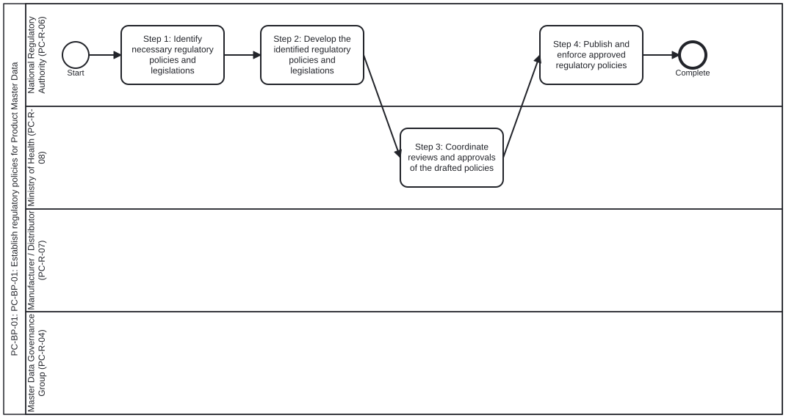
Lanes (Roles):
- National Regulatory Authority (PC-R-06) (
PC-R-06): Lead regulatory organization (p.21-23) - Ministry of Health (PC-R-08) (
PC-R-08): Collaborating health authority and policy stakeholder (p.21-22) - Manufacturer / Distributor (PC-R-07) (
PC-R-07): Source of truth for Product Master Data; consulted on phased roll-out (p.21-23) - Master Data Governance Group (PC-R-04) (
PC-R-04): Multi-stakeholder governance body supporting policy review and compliance (p.22-23)
Process Steps:
- Step 1: Identify necessary regulatory policies and legislations — Ch 1 Step 1 (p.21): Analyse current regulations for Product Master Data standardization and sharing; identify required additional policies and updates.
- Step 2: Develop the identified regulatory policies and legislations — Ch 1 Step 2 (p.22): Develop master data guidelines and product identification/labelling policies consistent with data standardization and AIDC; outline phased roll-out timelines.
- Step 3: Coordinate reviews and approvals of the drafted policies — Ch 1 Step 3 (p.22): Evaluate newly developed and revised policies led by NRA in collaboration with MoH, warehouses, procurement entities, manufacturers/distributors, and governance stakeholders; incorporate feedback and obtain approvals.
- Step 4: Publish and enforce approved regulatory policies — Ch 1 Step 4 (p.23): Publish approved policy document and define mechanisms to institutionalize and monitor compliance by manufacturers and distributors.
Inputs and Outputs (Data Objects):
- Existing regulatory policies and legislations (Input, p.21)
- List of additional regulatory policies and modifications required (Output Step 1 / Input Step 2, p.21-22)
- Master data related policies and legislations draft (Output Step 2 / Input Step 3, p.22)
- Approved and endorsed master data policies and legislations (Output Step 3-4, p.22-23)
Chapter 2. Instituting data management and governance policies
Step 1. Define product master data management procedures
✎ edit📣 feedback For effective use of data in operations, analysis, and decision-making, the integrity and quality of data must be consistently and continuously maintained. Establishing data management policies to maintain master data structures, definitions, and operational procedures is crucial for sustaining data integrity and quality. Data management policies should ensure adherence to principles of privacy, security, and ethical data usage. This chapter outlines steps to establish comprehensive data management policies and procedures. It is important to note that the steps might not always follow a linear order and may be implemented simultaneously or concurrently. Define product master data management procedures STEP 1 INPUTS STEPS RESOURCES OUTPUTS
- Published master data policies and legislations Begin by identifying and analyzing the existing challenges in master data management and their impact on interoperability across systems and organizations. This includes:
- Reviewing current product coding schemes and data structures.
- Assessing the number of product master data sets maintained across different systems and organizations.
- Identifying duplications and inconsistencies in data, where applicable.
- Evaluate the data harmonization needs and the data management procedures required to streamline master data management. The extent of harmonization required will be influenced by the number of systems and entities managing their own product information, as well as the degree of variation in product identifiers across these sources.
- Develop a set of data management procedures* to continuously and securely maintain master data.
- Product master data management reference guide
- Data governance TOR template
- Product master data management standard operating procedure (SOP) example
- Data harmonization activities plan
- Master data management procedures including master data governance policies
- Terms of reference (TOR) for master data governance group
✎ edit📣 feedback *Master data management procedures should include the following key elements to continuously and securely maintain master data:
- Data governance framework: Establish clear policies, roles, responsibilities, and processes to ensure data quality and consistency for use across the health supply chain. Illustrative data management roles: -Data owner: responsible for the overall strategy, governance, and quality of the product master data. The data owner: - Defines the rules, policies, and standards for data quality, structure, and governance. - Makes decisions on how the data should be managed and ensures alignment with business objectives. - Approves changes to the product master data and ensures compliance with regulatory and business requirements. - Is accountable for the accuracy, completeness, and relevance of the product data in the organization. - Data custodian: responsible for the technical management and security of product master data. The data custodian: -Ensures that the product master data is properly stored, protected, and backed up. -Manages access controls, data migration, and archiving processes. - Implements the rules and standards defined by the data owner, ensuring that the data remains secure and operationally available. - Coordinates with IT and other technical teams to ensure the data infrastructure supports business needs. - Data steward: responsible for the day-to-day management, maintenance, and quality control of the product master data. The data steward: - Ensures that data is accurate, complete, and up to date by monitoring and resolving data quality issues. -Oversees data entry, validation, and correction processes. - Acts as the liaison between business users and technology, facilitating communication about data needs and issues. - Ensures adherence to data governance policies set by the data owner.
- Data quality management: implement regular data quality assessments, validation rules, and cleansing routines to maintain accurate and reliable product master data.
- Data security and privacy: define and enforce security protocols and access controls to protect sensitive data from unauthorized access and breaches.
- Data integration and interoperability: establish protocols for harmonizing disparate product master data sets to ensure seamless exchange of transactional data that references master data.
- Data lifecycle management: create a comprehensive strategy for managing data from creation to disposal, ensuring that data remains relevant and compliant with regulatory requirements.
- Change management: establish processes for managing changes to data definitions, structures, and coding schemes to adapt to evolving business needs.
- Monitoring and reporting: implement continuous monitoring and reporting mechanisms to track data management activities and performance metrics.
✎ edit📣 feedback Table.
Chapter 2, Step 1. Define product master data management procedures
| INPUTS | STEPS | RESOURCES | OUTPUTS |
|---|---|---|---|
| • Published master data policies and legislations | 1. Begin by identifying and analyzing the existing challenges in master data management and their impact on interoperability across systems and organizations. This includes: - Reviewing current product coding schemes and data structures. - Assessing the number of product master data sets maintained across different systems and organizations. - Identifying duplications and inconsistencies in data, where applicable. 2. Evaluate the data harmonization needs and the data management procedures required to streamline master data management. The extent of harmonization required will be influenced by the number of systems and entities managing their own product information, as well as the degree of variation in product identifiers across these sources. 3. Develop a set of data management procedures* to continuously and securely maintain master data. |
• Product master data management reference guide • Data governance TOR template • Product master data management standard operating procedure (SOP) example |
• Data harmonization activities plan • Master data management procedures including master data governance policies • Terms of reference (TOR) for master data governance group |
Chapter 2, Step 1. Define product master data management procedures
Step 2. Define coding scheme, data definitions and structures
✎ edit📣 feedback INPUTS STEPS RESOURCES OUTPUTS
- Data harmonization activities plan
- Master data management procedures including master data governance policies Conduct data harmonization activities such as establishing a standardized coding scheme, master data definitions and structures* to organize and maintain master data consistently and persistently
- Data harmonization activities must consider all sources of product data, as well as the systems, processes, and organizations or stakeholders that will utilize this data. It is essential to consider the data needs of all stakeholders to ensure that the data structures and definitions are thorough and inclusive.
- Standardized master data coding schemes and structures
- Updated master data management procedures Map country product identifiers to open standard and global standard structures such as Health Level Seven® (HL7) Fast Healthcare Interoperability Resources® (FHIR), identification of medicinal products (IDMP), and GS1’s global trade item numbers (GTIN), if available.
- Fig. 11 Review the harmonised coding schemes, and structures with all relevant stakeholders and facilitate approvals. POTENTIAL RISKS MITIGATION Different systems— such as health information systems, insurance systems, regulatory systems, and supply chain systems—each using their own product coding scheme, leading to fragmentation and challenges in interoperability.
- Engage all stakeholders to review their respective system needs and current product coding mechanisms.
- Adopt a collaborative approach to define a common coding scheme that meets the data needs of all systems.
- Develop a change management strategy to ensure a smooth transition for all affected systems from the existing data structures and coding frameworks. This may include mapping current codes to new ones to maintain data integrity and enable cross-referencing for both ongoing and historical transactions. Define coding scheme, data definitions and structures to organize and maintain product master data STEP 2
✎ edit📣 feedback Table.
Chapter 2, Step 2. Define coding scheme, data definitions and structures to organize and maintain product master data
| INPUTS | STEPS | RESOURCES | OUTPUTS |
|---|---|---|---|
| • Data harmonization activities plan • Master data management procedures including master data governance policies |
1. Conduct data harmonization activities such as establishing a standardized coding scheme, master data definitions and structures* to organize and maintain master data consistently and persistently: - Data harmonization activities must consider all sources of product data, as well as the systems, processes, and organizations or stakeholders that will utilize this data. It is essential to consider the data needs of all stakeholders to ensure that the data structures and definitions are thorough and inclusive. 2. Map country product identifiers to open standard and global standard structures such as Health Level Seven® (HL7) Fast Healthcare Interoperability Resources® (FHIR), identification of medicinal products (IDMP), and GS1’s global trade item numbers (GTIN), if available. 3. Review the harmonised coding schemes, and structures with all relevant stakeholders and facilitate approvals. |
• Fig. 11 | • Standardized master data coding schemes and structures • Updated master data management procedures |
Potential risks and mitigation
| POTENTIAL RISKS | MITIGATION |
|---|---|
| Different systems—such as health information systems, insurance systems, regulatory systems, and supply chain systems—each using their own product coding scheme, leading to fragmentation and challenges in interoperability. | • Engage all stakeholders to review their respective system needs and current product coding mechanisms. • Adopt a collaborative approach to define a common coding scheme that meets the data needs of all systems. • Develop a change management strategy to ensure a smooth transition for all affected systems from the existing data structures and coding frameworks. This may include mapping current codes to new ones to maintain data integrity and enable cross-referencing for both ongoing and historical transactions. |
Chapter 2, Step 2. Define coding scheme, data definitions and structures to organize and maintain product master data
✎ edit📣 feedback *Master data definitions and structures should include provisions for maintaining product classifications, generic product information, and trade item details. Classifications, products, and trade items:
- Classifications such as the anatomical therapeutic chemical classification system with defined daily doses (ATC/DDD) and the international statistical classification of diseases (ICD) categorize diseases, pathogens, or health products to assist with morbidity and mortality statistics and support healthcare decision-making.
- Generic products can be described as generic items that conceal the brand or manufacturer information. Countries typically identify products with generic national product codes to facilitate forecasting, quantification, and planning at an aggregate level rather than at specific brand or manufacturer trade item level. These generalized codes are not associated with any particular manufacturer brand, simplifying requisition processes from downstream facilities by eliminating the need for brand-specific orders.
- Trade items are manufacturer-specific branded health products that are identifiable and unique to a particular brand or manufacturer. A trade item is a product that can be uniquely identified and treated as a single unit for purposes such as ordering, inventory, dispensing, billing, and traceability. A trade item is assigned a unique identifier, such as a GTIN, which ensures accurate tracking and management across the supply chain. Trade items play a crucial role in healthcare logistics by enabling efficient inventory control, distribution, and procurement processes. Fig. 8 shows the linkage across product classifications, generic products and trade items.
- A Regulated Trade Item represents an authorization of a Trade item within a given jurisdiction under a Product Authorization. Fig. 8: Linkage across classifications, generic products and trade items EXAMPLE USE CLASSIFICATION STRATEGIC PRODUCT TRADE ITEM Classes or groups of diseases / pathogens / drugs Data aggregation and analysis TACTICAL Forecasting, procurement planning and visibility at aggregate level OPERATIONAL Inventory management and control, distribution, tracking, tracing, pharmacovigilance and adverse effect following immunization (AEFI) analysis
- Name/INN
- Strength
- Dosage form
- Route of administration
- Unique identifier (for e.g., GTIN)
- Brand name
- Manufacturer
- Country of origin
- Packaging details
- Volumetrics
- Shelf life Nervous system - Analgesics - Other analgesics and antipyretics - Anilides - Paracetamol Unique ID – 14201415202906 Brand name - Ceta123 ABC Manufacturing Ltd. Unit - Case Unique ID – 14201415202907 Unit – Inner pack Quantity - 100 Unique ID – 16201213204905 Brand name - ParaXYZ XYZ Manufacturing Ltd. Unit - Case Unique ID – 16201213204906 Unit – Inner pack Quantity - 50 Unique ID – 16201213204907 Unit – Each; Quantity - 10 Paracetamol 500 mg tablet
✎ edit📣 feedback Figure 8.
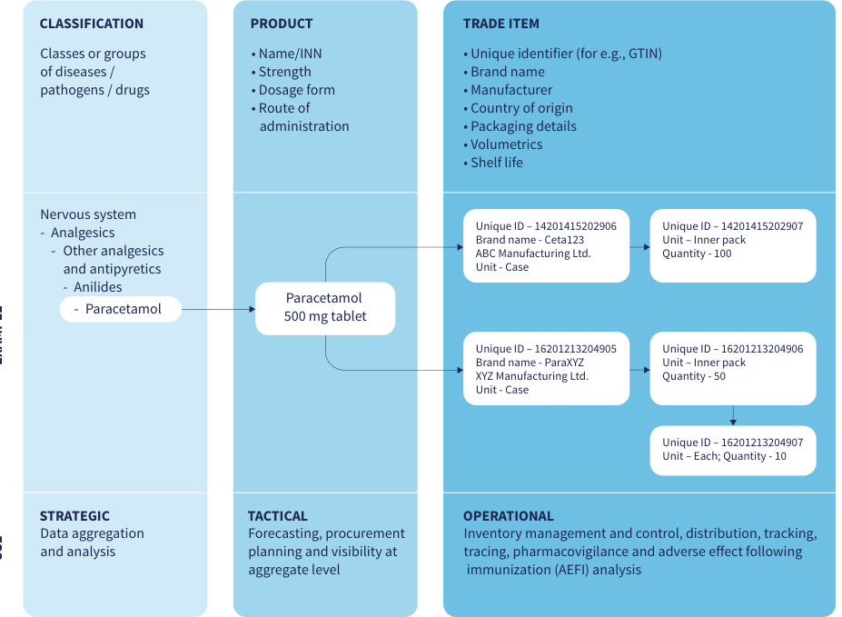
Source: WHO, Digital transformation handbook for health product catalogue, 2025, PDF page 28; rendered from the PDF's vector layer in the L1 entry.
Linkage across classifications, generic products and trade items
✎ edit📣 feedback Table 8.
Fig. 8. Linkage across Product Classification, Generic Product and Trade Item
| Aspect | CLASSIFICATION (STRATEGIC) | PRODUCT (TACTICAL) | TRADE ITEM (OPERATIONAL) |
|---|---|---|---|
| USE | Data aggregation and analysis | Forecasting, procurement planning and visibility at aggregate level | Inventory management and control, distribution, tracking, tracing, pharmacovigilance and adverse effect following immunization (AEFI) analysis |
| Key attributes / scope | Classes or groups of diseases / pathogens / drugs | • Name/INN • Strength • Dosage form • Route of administration |
• Unique identifier (for e.g., GTIN) • Brand name • Manufacturer • Country of origin • Packaging details • Volumetrics • Shelf life |
| EXAMPLE | Nervous system → Analgesics → Other analgesics and antipyretics → Anilides → Paracetamol | Paracetamol 500 mg tablet | Brand name - Ceta123 (ABC Manufacturing Ltd.): • Unique ID – 14201415202906 (Unit - Case)• Unique ID – 14201415202907 (Unit – Inner pack; Quantity - 100)Brand name - ParaXYZ (XYZ Manufacturing Ltd.): • Unique ID – 16201213204905 (Unit - Case)• Unique ID – 16201213204906 (Unit – Inner pack; Quantity - 50)• Unique ID – 16201213204907 (Unit – Each; Quantity - 10) |
Linkage across Product Classification, Generic Product and Trade Item
✎ edit📣 feedback GENERIC PRODUCT identifier 0..* status 1..1 name 1..* nameType 1..1 nameValue 1..1 description 0..1 classification 0..* unitOfUse 1..1 dosageForm 0..1 strength 0..1 routeOfAdministration 0..* manufacturer 0..1 countryOfOrigin 0..1 shelfLife 0..1 doseQuantity 0..1 attribute 0..* type 1..1 value[x] 1..1 associatedProduct 0..* product 1..1 relationship 1..* quantity 1..1 0..* 0..* TRADE ITEM identifier 1..* status 1..1 tradeItemName 0..* nameType 1..1 name 1..1 description 0..1 classification 0..* manufacturer 0..1 countryOfOrigin 1..1 shelfLife 0..1 associatedGenericProduct 0..* genericProduct 1..1 quantity 1..1 contains 0..* tradeItem 1..1 quantity 1..1 attribute 0..* type 1..1 value[x] 1..1 REGULATED TRADE ITEM identifier 1..* status 1..1 jurisdiction 1..* authorisationHolder 1..1 validityPeriod 0..1 authorisedTradeItem 1..1 attribute 0..* type 1..1 value[x] 1..1 associatedProduct 0..* product 1..1 relationship 1..* quantity 1..1 In addition to the above mapping, Fig 9 shows the relationship between generic products, trade items and regulated trade item using HL7 FHIR resource. Fig. 9: Relationship between generic product, trade item and regulated trade item Best practices:
- It is generally recommended to avoid including product classification or product characteristics such as dosage and strength in the generic national product code. Instead, a system-generated sequential numeric or alphanumeric code should be used.
- Product characteristics such as dosage, strength, pack size, and route of administration should be defined as attributes and linked to the product codes. This combination of attributes and codes facilitates comprehensive identification of products.
- Generic national product codes, including drug codes and medicinal product identifiers (when using the WHO Drug Dictionary), should be mapped to trade item-specific identifiers, such as GTINs, or similar unique identifiers where GTINs are not available.
- The product coding system should maintain uniform code lengths and ensure scalability to accommodate an increasing number of unique products.
- Product master data structures should support the mapping of one generic national product code to multiple corresponding trade items. In addition, the data structure should organize multiple packaging levels and quantity relationships across those.
- Packaging hierarchies and quantity conversions across these levels—along with packaging variations among different brand items—are critical for countries to effectively manage supply chain operations such as inventory control and distribution. Fig. 11 illustrates packaging variations across brand items and how they will link to standardized generic product information.
✎ edit📣 feedback Figure 9.
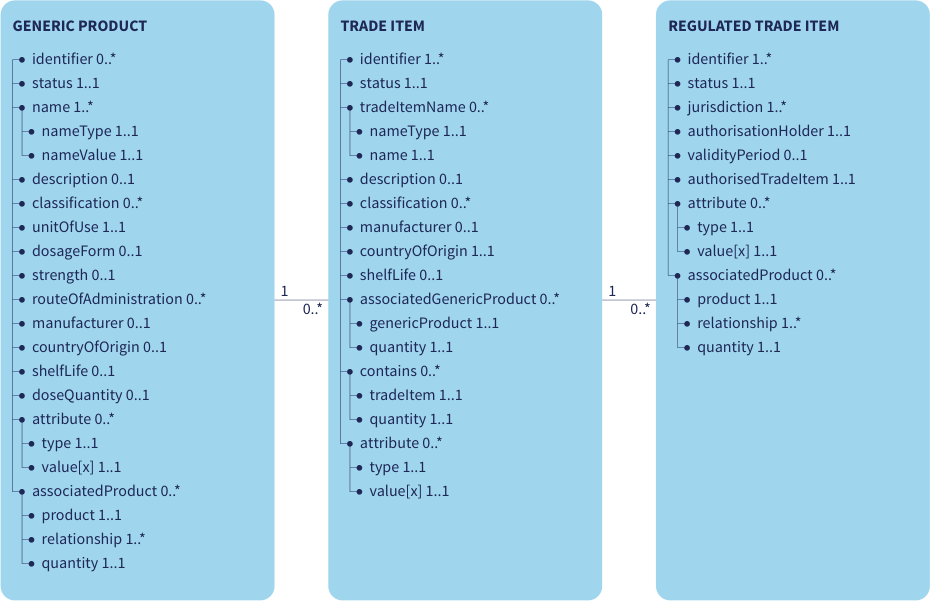
Source: WHO, Digital transformation handbook for health product catalogue, 2025, PDF page 29; rendered from the PDF's vector layer in the L1 entry.
Relationship between generic product, trade item and regulated trade item
✎ edit📣 feedback Table 9.
Fig. 9. Relationship between Generic Product, Trade Item and Regulated Trade Item (minimum attributes, cardinalities and HL7 FHIR R5 mappings)
GENERIC PRODUCT (1 → 0..* TRADE ITEM) |
TRADE ITEM (1 → 0..* REGULATED TRADE ITEM) |
REGULATED TRADE ITEM |
|---|---|---|
• identifier 0..*• status 1..1• name 1..*- nameType 1..1- nameValue 1..1• description 0..1• classification 0..*• unitOfUse 1..1• dosageForm 0..1• strength 0..1• routeOfAdministration 0..*• manufacturer 0..1• countryOfOrigin 0..1• shelfLife 0..1• doseQuantity 0..1• attribute 0..*- type 1..1- value[x] 1..1• associatedProduct 0..*- product 1..1- relationship 1..*- quantity 1..1 |
• identifier 1..*• status 1..1• tradeItemName 0..*- nameType 1..1- name 1..1• description 0..1• classification 0..*• manufacturer 0..1• countryOfOrigin 1..1• shelfLife 0..1• associatedGenericProduct 0..*- genericProduct 1..1- quantity 1..1• contains 0..*- tradeItem 1..1- quantity 1..1• attribute 0..*- type 1..1- value[x] 1..1 |
• identifier 1..*• status 1..1• jurisdiction 1..*• authorisationHolder 1..1• validityPeriod 0..1• authorisedTradeItem 1..1• attribute 0..*- type 1..1- value[x] 1..1• associatedProduct 0..*- product 1..1- relationship 1..*- quantity 1..1 |
HL7 FHIR R5 resource and element mapping (Fig. 9)
| Product Master Data Entity | Attribute | Cardinality | HL7 FHIR R5 Resource & Element Mapping |
|---|---|---|---|
Generic Product (1 → 0..* Trade Item) |
identifier |
0..* |
MedicationKnowledge.identifier / InventoryItem.identifier (generic product / National Product Code, e.g. MR001) |
| Generic Product | status |
1..1 |
MedicationKnowledge.status / InventoryItem.status |
| Generic Product | name (nameType 1..1, nameValue 1..1) |
1..* |
MedicationKnowledge.name / InventoryItem.name (nameType, name) |
| Generic Product | description |
0..1 |
InventoryItem.description.description |
| Generic Product | classification |
0..* |
MedicationKnowledge.medicineClassification / InventoryItem.category (ATC/DDD, ICD-11, ICHI, UNSPSC, GMDN) |
| Generic Product | unitOfUse |
1..1 |
InventoryItem.baseUnit / MedicationKnowledge.definitional.dosage (Unit of Use) |
| Generic Product | dosageForm |
0..1 |
MedicationKnowledge.definitional.doseForm |
| Generic Product | strength |
0..1 |
MedicationKnowledge.definitional.ingredient.strength[x] |
| Generic Product | routeOfAdministration |
0..* |
MedicationKnowledge.definitional.intendedRoute |
| Generic Product | manufacturer |
0..1 |
MedicationKnowledge.sponsor (Reference(Organization)) |
| Generic Product | countryOfOrigin |
0..1 |
InventoryItem.characteristic (countryOfOrigin) |
| Generic Product | shelfLife |
0..1 |
MedicationKnowledge.storageGuideline / InventoryItem.characteristic (shelfLife) |
| Generic Product | doseQuantity |
0..1 |
MedicationKnowledge.definitional.dosage.dosage.doseAndRate.dose[x] |
| Generic Product | attribute (type 1..1, value[x] 1..1) |
0..* |
InventoryItem.characteristic (characteristicType, value[x]) / ClinicalUseDefinition |
| Generic Product | associatedProduct (product 1..1, relationship 1..*, quantity 1..1) |
0..* |
MedicationKnowledge.associatedMedication / InventoryItem.association (associationType, relatedItem, quantity) |
Trade Item (1 → 0..* Regulated Trade Item) |
identifier |
1..* |
InventoryItem.identifier / MedicationKnowledge.packaging.code (GTIN or Country Trade Item Identifier) |
| Trade Item | status |
1..1 |
InventoryItem.status |
| Trade Item | tradeItemName (nameType 1..1, name 1..1) |
0..* |
InventoryItem.name (nameType, name) |
| Trade Item | description |
0..1 |
InventoryItem.description.description |
| Trade Item | classification |
0..* |
InventoryItem.category |
| Trade Item | manufacturer |
0..1 |
InventoryItem.responsibleOrganization (Reference(Organization)) |
| Trade Item | countryOfOrigin |
1..1 |
InventoryItem.characteristic (countryOfOrigin) |
| Trade Item | shelfLife |
0..1 |
InventoryItem.characteristic (shelfLife) |
| Trade Item | associatedGenericProduct (genericProduct 1..1, quantity 1..1) |
0..* |
InventoryItem.association (relatedItem → Generic Product InventoryItem / MedicationKnowledge, quantity) |
| Trade Item | contains (tradeItem 1..1, quantity 1..1) |
0..* |
InventoryItem.association (relatedItem → child packaged InventoryItem, quantity: Packaging Hierarchy) |
| Trade Item | attribute (type 1..1, value[x] 1..1) |
0..* |
InventoryItem.characteristic (characteristicType, value[x]) |
| Regulated Trade Item | identifier |
1..* |
RegulatedAuthorization.identifier (market authorization / product registration number) |
| Regulated Trade Item | status |
1..1 |
RegulatedAuthorization.status |
| Regulated Trade Item | jurisdiction |
1..* |
RegulatedAuthorization.region (CodeableConcept) |
| Regulated Trade Item | authorisationHolder |
1..1 |
RegulatedAuthorization.holder (Reference(Organization)) |
| Regulated Trade Item | validityPeriod |
0..1 |
RegulatedAuthorization.validityPeriod (Period) |
| Regulated Trade Item | authorisedTradeItem |
1..1 |
RegulatedAuthorization.subject (`Reference(MedicationKnowledge |
| Regulated Trade Item | attribute (type 1..1, value[x] 1..1) |
0..* |
RegulatedAuthorization.case / ClinicalUseDefinition |
| Regulated Trade Item | associatedProduct (product 1..1, relationship 1..*, quantity 1..1) |
0..* |
InventoryItem.association |
Relationship between Generic Product, Trade Item and Regulated Trade Item (minimum attributes, cardinalities and HL7 FHIR R5 mappings)
✎ edit📣 feedback The WHODrug data dictionary is an international reference for medicinal product information including unique identifiers and ATC codes. WHODrug also works as the link between local medicinal product identifiers and global IDMP medicinal product identifiers. National Regulatory Authorities can consider the use of WHODrug data dictionary at no charge, to identify and organise generic product information in a globally standardized manner. As noted in the WHODrug web page (https://who-umc.org/whodrug/whodrug-global/) “WHODrug Global is the international reference for medicinal product information, and it is maintained by the Swedish foundation UMC. With its unique drug code hierarchy and extensive coverage, it provides a consistent drug dictionary with exact terminology when coding concomitant medications. The dictionary is used to identify drug names and evaluate medicinal product information, including active ingredients and products’ anatomical and therapeutic classifications, from nearly 150 countries”. Fig. 10: Product packaging hierarchy Source: GS1.org PRIMARY SECONDARY SECONDARY OR TERTIARY TERTIARY Fig. 11: Example of packaging variations across manufacturers MFR A MFR B PRODUCT Paracetamol 500 mg tablet Procured from two different manufacturers with different pack configurations 1 CASE 12 packs of 50 tablets each 1 CASE 10 packs of 100 tablets each
✎ edit📣 feedback Figure 10.
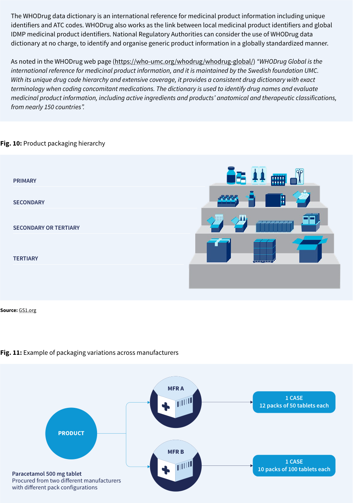
Source: WHO, Digital transformation handbook for health product catalogue, 2025, PDF page 30; rendered from the PDF's vector layer in the L1 entry.
Product packaging hierarchy
✎ edit📣 feedback Figure 11.
Source: WHO, Digital transformation handbook for health product catalogue, 2025, PDF page 30; rendered from the PDF's vector layer in the L1 entry.
Example of packaging variations across manufacturers
✎ edit📣 feedback Table 11.
Fig. 11. Example of packaging variations across manufacturers
| PRODUCT | Manufacturer | Pack configuration |
|---|---|---|
| Paracetamol 500 mg tablet (Procured from two different manufacturers with different pack configurations) | MFR A | 1 CASE: 12 packs of 50 tablets each |
| Paracetamol 500 mg tablet (Procured from two different manufacturers with different pack configurations) | MFR B | 1 CASE: 10 packs of 100 tablets each |
Example of packaging variations across manufacturers
✎ edit📣 feedback Figure 12.
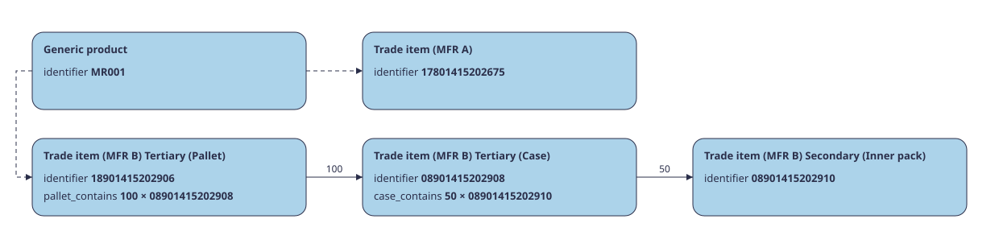
Source: WHO, Digital transformation handbook for health product catalogue, 2025, PDF page 31 (original figure). Drawn from the FHIR example Product instances in smart-pcmt by dth_pc_figures.py; each box is one instance.

Mapping across product packaging hierarchy using FHIR resource
✎ edit📣 feedback Table 12.
Fig. 12. Mapping across product packaging hierarchy using HL7 FHIR InventoryItem resource
FHIR InventoryItem record |
Packaging level | identifier |
Elements & quantity |
Associated target |
|---|---|---|---|---|
| GENERIC PRODUCT | Generic product (unit of use) | MR001 |
description, name, characteristic, association |
Associates to TRADE ITEM (MFR A) (17801415202675) and TRADE ITEM (MFR B) Tertiary (Pallet) (18901415202906) |
| TRADE ITEM (MFR A) | Trade item | 17801415202675 |
description, name, characteristic, association |
Linked from GENERIC PRODUCT (MR001) |
| TRADE ITEM (MFR B) | Tertiary (Pallet) | 18901415202906 |
description, name, characteristic, association |
Associates to TRADE ITEM (MFR B) Tertiary (Case) (08901415202908) |
| TRADE ITEM (MFR B) | Tertiary (Case) | 08901415202908 |
description, name, characteristic, association, quantity 100 |
Associates to TRADE ITEM (MFR B) Secondary (Inner pack) (08901415202910) |
| TRADE ITEM (MFR B) | Secondary (Inner pack) | 08901415202910 |
description, name, characteristic, association, quantity 50 |
Innermost packaged trade item in MFR B hierarchy |
Mapping across product packaging hierarchy using HL7 FHIR InventoryItem resource
Step 3. Define data use policies and data sharing mechanisms
✎ edit📣 feedback Fig. 12: Mapping across product packaging hierarchy using FHIR resource Below is an example of mapping a generic product to various trade items with different packaging using the FHIR inventoryItem resource. INPUTS STEPS RESOURCES OUTPUTS
- Standardized master data coding schemes and structures
- Master data management procedures including master data governance policies Identify all master data sources and consumers and define the purpose for which each specific set of master data is used. Determine appropriate data sharing mechanisms between data sources and consumers, ensuring data privacy where applicable and maintaining robust data security measures. Define data use policies for all identified and potential data consumers, in alignment with ethical data use principles. Establish data sharing policies that include data exchange mechanisms, the specific data attributes to be shared, data sharing agreements, and the security protocols to be observed.
- Data sharing and data use policies Define data use policies and data sharing mechanisms to support interoperability STEP 3 GENERIC PRODUCT identifier MR001 description name characteristic association TRADE ITEM (MFR B) Tertiary (Pallet) identifier 18901415202906 description name characteristic association TRADE ITEM (MFR B) Tertiary (Case) identifier 08901415202908 description name characteristic association quantity 100 TRADE ITEM (MFR A) identifier 17801415202675 description name characteristic association TRADE ITEM (MFR B) Secondary (Inner pack) identifier 08901415202910 description name characteristic association quantity 50
✎ edit📣 feedback Table.
Chapter 2, Step 3. Define data use policies and data sharing mechanisms to support interoperability
| INPUTS | STEPS | RESOURCES | OUTPUTS |
|---|---|---|---|
| • Standardized master data coding schemes and structures • Master data management procedures including master data governance policies |
1. Identify all master data sources and consumers and define the purpose for which each specific set of master data is used. 2. Determine appropriate data sharing mechanisms between data sources and consumers, ensuring data privacy where applicable and maintaining robust data security measures. 3. Define data use policies for all identified and potential data consumers, in alignment with ethical data use principles. 4. Establish data sharing policies that include data exchange mechanisms, the specific data attributes to be shared, data sharing agreements, and the security protocols to be observed. |
— | • Data sharing and data use policies |
Potential risks and mitigation
| POTENTIAL RISKS | MITIGATION |
|---|---|
| The variety and volume of data attributes raise concerns regarding privacy, confidentiality, and data sensitivity. These concerns can make data sources reluctant to share information with multiple and diverse stakeholders. | To address these concerns, procedures and systems should be developed to categorize data attributes based on their level of sensitivity. Access should then be controlled according to these sensitivity categories, ensuring appropriate data protection while enabling secure data sharing. |
Chapter 2, Step 3. Define data use policies and data sharing mechanisms to support interoperability
Step 4. Institutionalise product master data governance policies and procedures
✎ edit📣 feedback Institutionalise product master data governance policies and procedures. STEP 4 POTENTIAL RISKS MITIGATION The variety and volume of data attributes raise concerns regarding privacy, confidentiality, and data sensitivity. These concerns can make data sources reluctant to share information with multiple and diverse stakeholders. To address these concerns, procedures and systems should be developed to categorize data attributes based on their level of sensitivity. Access should then be controlled according to these sensitivity categories, ensuring appropriate data protection while enabling secure data sharing. INPUTS STEPS RESOURCES OUTPUTS
- Master data management procedures, including master data governance policies.
- TOR for the master data governance group.
- Standardized master data coding schemes and structures.
- Data sharing and data use policies. Establish a master data governance group composed of all relevant stakeholders to provide leadership and guidance in managing product master data additions and changes.
- The governance group should support the overall governance and planning of product master data standardization, capture, and dissemination activities, and provide leadership and oversight for all data management efforts.
- The master data governance group can be integrated into existing governance structures or steering committees. Promote the integration and consistent use of the established master data management procedures, coding schemes, data definitions, data structures, and governance policies across all health supply chain processes, systems, and organizations.
- A master data management governance group has been established.
- Master data management procedures— including coding schemes, data definitions, data structures, and governance policies—are integrated within health, supply chain, and other relevant operations.
✎ edit📣 feedback Table.
Chapter 2, Step 4. Institutionalise product master data governance policies and procedures
| INPUTS | STEPS | RESOURCES | OUTPUTS |
|---|---|---|---|
| • Master data management procedures, including master data governance policies. • TOR for the master data governance group. • Standardized master data coding schemes and structures. • Data sharing and data use policies. |
1. Establish a master data governance group composed of all relevant stakeholders to provide leadership and guidance in managing product master data additions and changes. - The governance group should support the overall governance and planning of product master data standardization, capture, and dissemination activities, and provide leadership and oversight for all data management efforts. - The master data governance group can be integrated into existing governance structures or steering committees. 2. Promote the integration and consistent use of the established master data management procedures, coding schemes, data definitions, data structures, and governance policies across all health supply chain processes, systems, and organizations. |
— | • A master data management governance group has been established. • Master data management procedures—including coding schemes, data definitions, data structures, and governance policies—are integrated within health, supply chain, and other relevant operations. |
Chapter 2, Step 4. Institutionalise product master data governance policies and procedures
Step 5. Define short- and long-term strategies to source standardized product master data
✎ edit📣 feedback INPUTS STEPS RESOURCES OUTPUTS
- Endorsed master data policies and legislations (from chapter 1)
- Data sharing and data use policies Identify challenges with sourcing master data, such as incompleteness, data quality, data availability, awareness etc.
- Standardized master data coding schemes and structures
- Updated master data management procedures Define a short and medium-term strategy to source master data, while considering and addressing the identified challenges.
- For example, gathering product master data from procurement agencies, donors, and physical packages when there is no efficient data sharing from manufacturers. Master data request letter - template Define a long-term strategy to sustainably source master data.
- For example, by formalizing product master data submission in predefined formats and data sharing mechanisms during the regulatory product registration process. Develop a timeline to establish long-term data sourcing mechanisms and publish this as part of the regulatory policies to ensure awareness and adherence. POTENTIAL RISKS MITIGATION Limited awareness, momentum, and capacity among key stakeholders—such as manufacturers and distributors—to provide product master data in accordance with the policy guidelines.
- Conduct policy awareness webinars with manufacturers and distributors.
- Develop advocacy materials, such as one-pagers, that outline timelines, required data attributes, examples, and Frequently Asked Questions (FAQs).
- Adopt short-term strategies to source data while manufacturers and distributors prepare to comply—for example, collecting publicly available minimum data sets from product packaging.
- Begin with a smaller, essential set of product master data attributes, such as International Nonproprietary Name (INN), manufacturer, dosage form, strength, country of origin, and other critical information. Define short- and long-term strategies to source standardized product master data STEP 5 End of chapter checkpoint After finishing the steps outlined in this chapter, the following outputs should be available:
- Master data management procedures including master data governance policies
- TOR for the master data governance group
- Standardized master data coding schemes and structures
- Data harmonization activity plan
- Data sharing and data use policies
- Short-term and long-term strategies for sourcing master data
✎ edit📣 feedback Table.
Chapter 2, Step 5. Define short- and long-term strategies to source standardized product master data
| INPUTS | STEPS | RESOURCES | OUTPUTS |
|---|---|---|---|
| • Endorsed master data policies and legislations (from chapter 1) • Data sharing and data use policies • Standardized master data coding schemes and structures |
1. Identify challenges with sourcing master data, such as incompleteness, data quality, data availability, awareness etc. 2. Define a short and medium-term strategy to source master data, while considering and addressing the identified challenges. - For example, gathering product master data from procurement agencies, donors, and physical packages when there is no efficient data sharing from manufacturers. 3. Define a long-term strategy to sustainably source master data. - For example, by formalizing product master data submission in predefined formats and data sharing mechanisms during the regulatory product registration process. 4. Develop a timeline to establish long-term data sourcing mechanisms and publish this as part of the regulatory policies to ensure awareness and adherence. |
• Master data request letter - template | • Updated master data management procedures |
Potential risks and mitigation
| POTENTIAL RISKS | MITIGATION |
|---|---|
| Limited awareness, momentum, and capacity among key stakeholders—such as manufacturers and distributors—to provide product master data in accordance with the policy guidelines. | • Conduct policy awareness webinars with manufacturers and distributors. • Develop advocacy materials, such as one-pagers, that outline timelines, required data attributes, examples, and Frequently Asked Questions (FAQs). • Adopt short-term strategies to source data while manufacturers and distributors prepare to comply—for example, collecting publicly available minimum data sets from product packaging. • Begin with a smaller, essential set of product master data attributes, such as International Nonproprietary Name (INN), manufacturer, dosage form, strength, country of origin, and other critical information. |
Chapter 2, Step 5. Define short- and long-term strategies to source standardized product master data
Data governance roles and processes (PC-R-01..04, PC-BP-02..03)
✎ edit📣 feedback Persona. PC-R-01: Data Owner
Role ID: PC-R-01 | Type: data-governance-role | Source: who-iris/library/9789240116191-eng (page-026)
Processes: PC-BP-02, PC-BP-03
ArchiMate 0.3.0-draft.1 links: Data Owner, Product Master Data, Product Master Data Management, Product Master Data Management Roles
Responsibilities (from the handbook):
- Responsible for the overall strategy, governance, and quality of the Product Master Data.
- Defines the rules, policies, and standards for data quality, structure, and governance.
- Makes decisions on how the data should be managed and ensures alignment with business objectives.
- Approves changes to the Product Master Data and ensures compliance with regulatory and business requirements.
- Is accountable for the accuracy, completeness, and relevance of the product data in the organization.
✎ edit📣 feedback Persona. PC-R-02: Data Custodian
Role ID: PC-R-02 | Type: data-governance-role | Source: who-iris/library/9789240116191-eng (page-026)
Processes: PC-BP-02, PC-BP-03
ArchiMate 0.3.0-draft.1 links: Data Custodian, Product Master Data, Product Master Data Management, Product Master Data Management Roles
Responsibilities (from the handbook):
- Responsible for the technical management and security of Product Master Data.
- Ensures that the Product Master Data is properly stored, protected, and backed up.
- Manages access controls, data migration, and archiving processes.
- Implements the rules and standards defined by the Data Owner, ensuring that the data remains secure and operationally available.
- Coordinates with IT and other technical teams to ensure the data infrastructure supports business needs.
✎ edit📣 feedback Persona. PC-R-03: Data Steward
Role ID: PC-R-03 | Type: data-governance-role | Source: who-iris/library/9789240116191-eng (page-026)
Processes: PC-BP-02, PC-BP-03
ArchiMate 0.3.0-draft.1 links: Data Steward, Product Master Data, Product Master Data Management, Product Master Data Management Roles
Responsibilities (from the handbook):
- Responsible for the day-to-day management, maintenance, and quality control of the Product Master Data.
- Ensures that data is accurate, complete, and up to date by monitoring and resolving data quality issues.
- Oversees data entry, validation, and correction processes.
- Acts as the liaison between business users and technology, facilitating communication about data needs and issues.
- Ensures adherence to data governance policies set by the Data Owner.
✎ edit📣 feedback Persona. PC-R-04: Master Data Governance Group
Role ID: PC-R-04 | Type: governance-collaboration | Source: who-iris/library/9789240116191-eng (page-025, page-032)
Processes: PC-BP-01, PC-BP-02
ArchiMate 0.3.0-draft.1 links: Master Data Governance Group, Product Master Data, Product Master Data Management, Product Master Data Management Roles
Responsibilities (from the handbook):
- Composed of all relevant stakeholders to provide leadership and guidance in managing Product Master Data additions and changes.
- Support the overall governance and planning of Product Master Data standardization, capture, and dissemination activities, and provide leadership and oversight for all data management efforts.
- Can be integrated into existing governance structures or steering committees.
- Promote the integration and consistent use of the established master data management procedures, coding schemes, data definitions, data structures, and governance policies across all health supply chain processes, systems, and organizations.
✎ edit📣 feedback Business-process. PC-BP-02: Establish master data management and governance
Process ID: PC-BP-02 | BPMN 2.0 Diagram: processes/PC-BP-02.bpmn | Source: who-iris/library/9789240116191-eng (page-025, page-026, page-027, page-028, page-029, page-030, page-031, page-032, page-033)
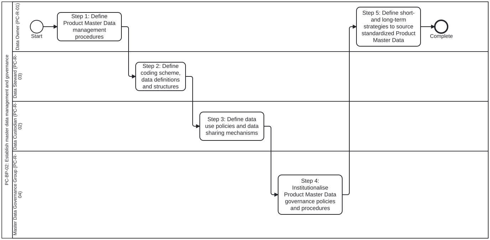
Lanes (Roles):
- Data Owner (PC-R-01) (
PC-R-01): Overall strategy, governance, and quality of Product Master Data (p.26) - Data Steward (PC-R-03) (
PC-R-03): Day-to-day management, maintenance, harmonization, and quality control (p.26-27) - Data Custodian (PC-R-02) (
PC-R-02): Technical management, security protocols, and access controls (p.26, 31-32) - Master Data Governance Group (PC-R-04) (
PC-R-04): Stakeholder governance group providing leadership and oversight (p.25, 32)
Process Steps:
- Step 1: Define Product Master Data management procedures — Ch 2 Step 1 (p.25-26): Review current product coding schemes and datasets; evaluate harmonization needs; develop master data management procedures and TOR for the Master Data Governance Group.
- Step 2: Define coding scheme, data definitions and structures — Ch 2 Step 2 (p.27-30): Conduct data harmonization; establish standardized coding schemes and structures for Product Classification, Generic Product, Trade Item, Regulated Trade Item, and Packaging Hierarchy; map to HL7 FHIR, ISO IDMP, WHODrug, and GS1 GTIN.
- Step 3: Define data use policies and data sharing mechanisms — Ch 2 Step 3 (p.31): Identify all master data sources and consumers; define data use policies, data sharing agreements, exchange mechanisms, and security/sensitivity protocols.
- Step 4: Institutionalise Product Master Data governance policies and procedures — Ch 2 Step 4 (p.32): Establish the Master Data Governance Group and integrate master data management procedures, coding schemes, and governance policies across health supply chain operations.
- Step 5: Define short- and long-term strategies to source standardized Product Master Data — Ch 2 Step 5 (p.33): Define short/medium-term sourcing (procurement agencies, donors, product packaging) and long-term sustainable sourcing (formal submission during regulatory product registration).
Inputs and Outputs (Data Objects):
- Endorsed master data policies and legislations (Input from Ch 1, p.25, 33)
- Master data management procedures and TOR for Master Data Governance Group (Output Step 1, p.25)
- Standardized master data coding schemes and structures (Output Step 2, p.27)
- Data sharing and data use policies (Output Step 3, p.31)
- Short-term and long-term strategies for sourcing master data (Output Step 5, p.33)
✎ edit📣 feedback Business-process. PC-BP-03: Add or update a product record, with approval
Process ID: PC-BP-03 | BPMN 2.0 Diagram: processes/PC-BP-03.bpmn | Source: who-iris/library/9789240116191-eng (page-026, page-040)
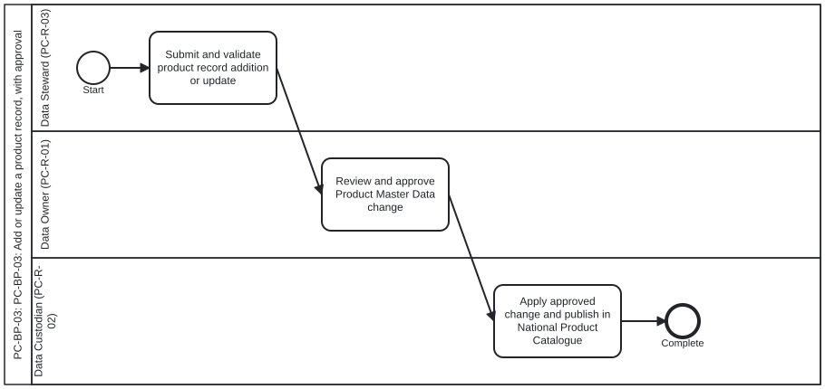
Lanes (Roles):
- Data Steward (PC-R-03) (
PC-R-03): Oversees data entry, validation, and correction processes (p.26, 40) - Data Owner (PC-R-01) (
PC-R-01): Approves changes to Product Master Data and ensures compliance (p.26, 40) - Data Custodian (PC-R-02) (
PC-R-02): Implements rules and standards, ensuring data is stored, protected, and operationally available (p.26)
Process Steps:
- Submit and validate product record addition or update — Ch 2 (p.26) & Ch 4 Step 2 (p.40): Data Steward collects, validates, and submits new or updated Product Master Data record according to NPC SOPs.
- Review and approve Product Master Data change — Ch 2 (p.26) & Ch 4 Step 2 (p.40): Data Owner reviews and approves changes to the Product Master Data through the NPC approval workflow (no conditional rules stated in handbook; single approval task per workplan §2e).
- Apply approved change and publish in National Product Catalogue — Ch 2 (p.26): Data Custodian applies approved record update in the NPC with access control, audit, and backup protections.
Inputs and Outputs (Data Objects):
- Candidate Product Master Data addition or update (Input, p.26, 40)
- Approved Product Master Data record in NPC (Output, p.26, 40)
Chapter 3. Deploying appropriate technology to manage product master data
Step 1. Define system requirements for the NPC tool
✎ edit📣 feedback Standardized product master data is intended to be used across various health and supply chain systems to enable uniform product identification. It is essential that this data is organized and managed consistently, with minimal manual intervention, to ensure data quality and integrity. Adopting a suitable technology tool supports the ongoing management of product master data while maintaining consistent quality and compliance with defined standards. A widely used term for such a tool is the NPC, which many countries implement to oversee product master data. This chapter outlines the key steps that countries can follow to select and implement an appropriate technology tool for establishing and maintaining an NPC. INPUTS STEPS RESOURCES OUTPUTS
- Standardized master data coding schemes and structures
- Master data management procedures including master data governance policies
- Data sharing and data use policies. Define functional and non-functional systems requirements for a NPC tool that will organize and manage product master data
- Ensure that the requirements duly consider the defined coding schemes, data structures, master data management procedures and data sharing policies, protocols and mechanisms
- NPC System Requirements
- Target Software Standards v2 (TSS)
- ISO IDMP standards
- HL7 FHIR relevant IGs
- Approved functional and non-functional system requirements for NPC. Review the requirements with all relevant stakeholders and facilitate approval Define system requirements for the NPC tool STEP 1
✎ edit📣 feedback Table.
Chapter 3, Step 1. Define system requirements for the NPC tool
| INPUTS | STEPS | RESOURCES | OUTPUTS |
|---|---|---|---|
| • Standardized master data coding schemes and structures • Master data management procedures including master data governance policies • Data sharing and data use policies. |
1. Define functional and non-functional systems requirements for a NPC tool that will organize and manage product master data: - Ensure that the requirements duly consider the defined coding schemes, data structures, master data management procedures and data sharing policies, protocols and mechanisms 2. Review the requirements with all relevant stakeholders and facilitate approval |
• NPC System Requirements • Target Software Standards v2 (TSS) • ISO IDMP standards • HL7 FHIR relevant IGs |
• Approved functional and non-functional system requirements for NPC. |
Chapter 3, Step 1. Define system requirements for the NPC tool
Step 2. Identify technology options; Step 3. Prepare an implementation plan
✎ edit📣 feedback INPUTS STEPS RESOURCES OUTPUTS
- Approved functional and non-functional system requirements for NPC. Conduct market research activities such as Request for information (RFI) to explore technology options for an appropriate tool for NPC.
- Assess existing digital tools, such as enterprise resource planning applications, to determine if they fulfil NPC system requirements before deciding to invest in a new software. Consider the following open-source options:
- PCMT
- PCMT demo
- PCMT instance hosted by WHO (Refer to Chapter 6)
- Selection of an appropriate technology tool for NPC. Identify the appropriate tool for NPC. Conduct additional sourcing processes, if necessary, such as request for quote (RFQ) or proposal (RFP) to select the identified tool option. INPUTS STEPS RESOURCES OUTPUTS
- Approved functional and non-functional system requirements for NPC.
- Selection of an appropriate technology tool for NPC. Develop a detailed implementation plan to design, configure and deploy the chosen tool for NPC.
- NPC Implementation plan template
- NPC implementation project plan. Review the plan with relevant stakeholders and initiate the implementation project. Identify technology options and select the appropriate tool STEP 2 Prepare a plan to implement the NPC tool and integrate with other systems to share standardized data STEP 3
✎ edit📣 feedback Table.
Chapter 3, Step 2. Identify technology options and select an appropriate NPC tool
| INPUTS | STEPS | RESOURCES | OUTPUTS |
|---|---|---|---|
| • Approved functional and non-functional system requirements for NPC. | 1. Conduct market research activities such as Request for information (RFI) to explore technology options for an appropriate tool for NPC: - Assess existing digital tools, such as enterprise resource planning applications, to determine if they fulfil NPC system requirements before deciding to invest in a new software. 2. Identify the appropriate tool for NPC. 3. Conduct additional sourcing processes, if necessary, such as request for quote (RFQ) or proposal (RFP) to select the identified tool option. |
Consider the following open-source options: • PCMT • PCMT demo • PCMT instance hosted by WHO (Refer to Chapter 6) |
• Selection of an appropriate technology tool for NPC. |
Chapter 3, Step 2. Identify technology options and select an appropriate NPC tool
✎ edit📣 feedback Table.
Chapter 3, Step 3. Prepare a plan to implement the NPC tool
| INPUTS | STEPS | RESOURCES | OUTPUTS |
|---|---|---|---|
| • Approved functional and non-functional system requirements for NPC. • Selection of an appropriate technology tool for NPC. |
1. Develop a detailed implementation plan to design, configure and deploy the chosen tool for NPC. 2. Review the plan with relevant stakeholders and initiate the implementation project. |
• NPC Implementation plan template | • NPC implementation project plan. |
Chapter 3, Step 3. Prepare a plan to implement the NPC tool
Step 4. Design, develop and deploy the NPC tool
✎ edit📣 feedback INPUTS STEPS RESOURCES OUTPUTS
- NPC Implementation project plan.
- Approved functional and non-functional system requirements for NPC. Design the system and necessary configurations to fulfil all functional and non-functional requirements.
- NPC system design and configuration specifications.
- NPC system validation report.
- Deployed NPC tool. Review the design with relevant stakeholders and facilitate design approvals. Develop the system and required configurations of the NPC tool and build integrations with other systems as required:
- Ensure that the system accommodates the master data management procedures including coding scheme, data definitions and structures.
- Ensure that the system comprehensively supports mapping of classifications, products and trade items and their packaging hierarchies. Data management considerations and best practices (Chapter 2) Perform required validations of the configured NPC tool - such as system testing, integration testing, performance testing and UAT. Ensure appropriate infrastructure setup such as hardware servers to host the NPC tool. Deploy the validated NPC tool, load the available product master data and roll out. Design, develop and deploy the NPC tool STEP 4 POTENTIAL RISKS MITIGATION Lack of technical capacity, resources, skill sets, and awareness of product master data management processes to implement the NPC.
- Identify and engage partners that can provide support—for example, funding organizations and implementation partners that can contribute technical and financial resources.
- Utilize the WHO-hosted PCMT as an initial system to begin managing product master data effectively. End of chapter checkpoint After finishing the steps outlined in this chapter, the following outputs should be available:
- Approved functional and non-functional system requirements for NPC
- NPC implementation plan
- NPC tool deployed
✎ edit📣 feedback Table.
Chapter 3, Step 4. Design, develop and deploy the NPC tool
| INPUTS | STEPS | RESOURCES | OUTPUTS |
|---|---|---|---|
| • NPC Implementation project plan. • Approved functional and non-functional system requirements for NPC. |
1. Design the system and necessary configurations to fulfil all functional and non-functional requirements. 2. Review the design with relevant stakeholders and facilitate design approvals. 3. Develop the system and required configurations of the NPC tool and build integrations with other systems as required: - Ensure that the system accommodates the master data management procedures including coding scheme, data definitions and structures. - Ensure that the system comprehensively supports mapping of classifications, products and trade items and their packaging hierarchies. 4. Perform required validations of the configured NPC tool - such as system testing, integration testing, performance testing and UAT. 5. Ensure appropriate infrastructure setup such as hardware servers to host the NPC tool. 6. Deploy the validated NPC tool, load the available product master data and roll out. |
• Data management considerations and best practices (Chapter 2) | • NPC system design and configuration specifications. • NPC system validation report. • Deployed NPC tool. |
Potential risks and mitigation
| POTENTIAL RISKS | MITIGATION |
|---|---|
| Lack of technical capacity, resources, skill sets, and awareness of product master data management processes to implement the NPC. | • Identify and engage partners that can provide support—for example, funding organizations and implementation partners that can contribute technical and financial resources. • Utilize the WHO-hosted PCMT as an initial system to begin managing product master data effectively. |
Chapter 3, Step 4. Design, develop and deploy the NPC tool
Technology selection, planning and deployment process (PC-BP-06)
✎ edit📣 feedback Business-process. PC-BP-06: Select, plan and deploy the National Product Catalogue tool
Process ID: PC-BP-06 | BPMN 2.0 Diagram: processes/PC-BP-06.bpmn | Source: who-iris/library/9789240116191-eng (page-035, page-036, page-037)
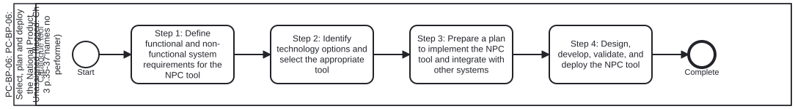
Unassigned Lane Flag: FLAGGED FOR OWNER: Chapter 3 (pages 35-37) names no performer for Steps 1-4; all tasks are placed in an explicit unassigned lane per workplan §2e.
Lanes (Roles):
- Unassigned (flagged: Ch 3 p.35-37 names no performer) (
unassigned): FLAGGED FOR OWNER: Chapter 3 states the 4 technology steps in the passive/imperative voice without naming performing roles. (Introduction p.18 lists illustrative target users, and Annex 2 p.57-61 lists typical implementation roles PC-R-10..19.)
Process Steps:
- Step 1: Define functional and non-functional system requirements for the NPC tool — Ch 3 Step 1 (p.35): Define functional and non-functional requirements considering coding schemes, data structures, master data management procedures, and data sharing policies; review with stakeholders and facilitate approval.
- Step 2: Identify technology options and select the appropriate tool — Ch 3 Step 2 (p.36): Conduct market research (RFI), assess existing tools and open-source options (such as PCMT or WHO-hosted PCMT), and conduct RFQ/RFP if necessary to select the NPC tool.
- Step 3: Prepare a plan to implement the NPC tool and integrate with other systems — Ch 3 Step 3 (p.36): Develop a detailed NPC implementation project plan to design, configure, deploy, and integrate the chosen tool; review with stakeholders and initiate the project.
- Step 4: Design, develop, validate, and deploy the NPC tool — Ch 3 Step 4 (p.37): Design configurations, build integrations, perform system/integration/performance testing and UAT, set up infrastructure, load available Product Master Data, and deploy the NPC tool.
Inputs and Outputs (Data Objects):
- Approved functional and non-functional system requirements for NPC (Output Step 1, p.35)
- Selection of an appropriate technology tool for NPC (Output Step 2, p.36)
- NPC implementation project plan (Output Step 3, p.36)
- NPC system design specifications, validation report, and deployed NPC tool (Output Step 4, p.37)
Chapter 4. Managing change to institutionalize standardized product master data
Step 1. Develop a change management plan to institutionalise use of NPC
✎ edit📣 feedback Change management is essential to ensure that operational processes, systems, and people transition to using standardized master data without disrupting existing operations. Effective change management enables the successful adoption and use of updated master data structures, processes, and associated system enhancements. Without a comprehensive change management plan, transitions can be unpredictable and may result in increased cost, effort, delays, and rework. This chapter outlines the steps required to develop appropriate change management procedures to institutionalize the use of standardized product master data, processes, and tools. INPUTS STEPS RESOURCES OUTPUTS
- Standardized master data coding schemes and structures.
- Master data management procedures including master data governance policies.
- Data sharing and data use policies. Identify all the systems and processes that need standardized product master data.
- Change management plan for all systems and processes to use NPC. Identify and define the specific changes needed to institutionalize the use of standardized product master data across people, processes, and systems. These may include:
- Process changes to ensure that standardized product master data is uniformly referenced across all operational processes, including forecasting, procurement, inventory receipt and management, shipping, and dispensing.
- System enhancements across all health and supply chain information systems to enable them to receive, store, and use standardized product master data in all transactions.
- Data structure and model changes to accommodate standardized product master data and enable linkage with existing datasets where necessary.
- Data exchange mechanisms and event triggers such as data additions and updates—for sharing standardized product master data across all relevant systems. Develop a change management plan to institutionalise use of NPC STEP 1 Best practices: When global identifiers such as GTINs are not available—e.g., if a manufacturer has not yet subscribed for a GTIN—it is recommended to use a local identifier for trade items. These local identifiers can later be mapped to GTINs once they become available.
- In the example below, GTINs are mapped to a local identifier attribute called Country Trade Item Identifier. This attribute is designed to default to GTINs when they are available. In the absence of GTINs, the attribute generates and maintains a local identifier, which can be replaced with a GTIN once it is assigned to the trade item.
✎ edit📣 feedback Table.
Chapter 4, Step 1. Develop a change management plan to institutionalise use of NPC
| INPUTS | STEPS | RESOURCES | OUTPUTS |
|---|---|---|---|
| • Standardized master data coding schemes and structures. • Master data management procedures including master data governance policies. • Data sharing and data use policies. |
1. Identify all the systems and processes that need standardized product master data. 2. Identify and define the specific changes needed to institutionalize the use of standardized product master data across people, processes, and systems. These may include: - Process changes to ensure that standardized product master data is uniformly referenced across all operational processes, including forecasting, procurement, inventory receipt and management, shipping, and dispensing. - System enhancements across all health and supply chain information systems to enable them to receive, store, and use standardized product master data in all transactions. - Data structure and model changes to accommodate standardized product master data and enable linkage with existing datasets where necessary. - Data exchange mechanisms and event triggers such as data additions and updates—for sharing standardized product master data across all relevant systems. |
— | • Change management plan for all systems and processes to use NPC. |
Chapter 4, Step 1. Develop a change management plan to institutionalise use of NPC
Step 2. Define SOPs to collect, organize and manage product master data
✎ edit📣 feedback Additional resource for reference - Product master data management – lessons learned from country implementations INPUTS STEPS RESOURCES OUTPUTS
- Standardized master data coding schemes and structures.
- Master data management procedures, including master data governance policies.
- Data sharing and data use policies.
- Change management plan for all systems and processes to adopt the NPC. Define SOPs to collect, organize, add, update master data, and manage data approval workflows within the NPC. NPC SOP example
- Product master data management SOPs
- Continuous training plan Review and validate the SOPs against the actual workflows in the NPC to ensure full alignment. Facilitate the formal approval of SOPs to institutionalize their use by relevant users. Define and institutionalize a continuous training and advocacy plan to equip users with the necessary skill sets to manage and use standardized product master data. The plan should include:
- Training of new users and newly hired staff involved in master data management
- Encouraging participation in global and open standards conferences
- Conducting advocacy sessions for operational users, emphasizing the benefits of standardized product master data. Train appropriate users based on the developed SOPs to ensure consistent and effective implementation. Define SOPs to collect, organize and manage product master data STEP 2
✎ edit📣 feedback Table.
Chapter 4, Step 2. Define SOPs to collect, organize and manage product master data
| INPUTS | STEPS | RESOURCES | OUTPUTS |
|---|---|---|---|
| • Standardized master data coding schemes and structures. • Master data management procedures, including master data governance policies. • Data sharing and data use policies. • Change management plan for all systems and processes to adopt the NPC. |
1. Define SOPs to collect, organize, add, update master data, and manage data approval workflows within the NPC. 2. Review and validate the SOPs against the actual workflows in the NPC to ensure full alignment. 3. Facilitate the formal approval of SOPs to institutionalize their use by relevant users. 4. Define and institutionalize a continuous training and advocacy plan to equip users with the necessary skill sets to manage and use standardized product master data. The plan should include: - Training of new users and newly hired staff involved in master data management - Encouraging participation in global and open standards conferences - Conducting advocacy sessions for operational users, emphasizing the benefits of standardized product master data. 5. Train appropriate users based on the developed SOPs to ensure consistent and effective implementation. |
• NPC SOP example | • Product master data management SOPs • Continuous training plan |
Potential risks and mitigation
| POTENTIAL RISKS | MITIGATION | RESOURCES |
|---|---|---|
| The need for standardized data attributes presents significant challenges for stakeholders, including manufacturers, in providing high-quality data. | Determine a minimum set of product master data attributes that can be progressively expanded as systems, processes, and manufacturer capabilities mature. | Item attributes list |
| Difficulty in managing quantity conversions across different product packaging hierarchies when transitioning to standardized product master data. | Ensure that the data structure of the PCMT supports mapping of packaging hierarchies and quantity relationships. | Figure 11 Figure 12 |
Chapter 4, Step 2. Define SOPs to collect, organize and manage product master data
✎ edit📣 feedback POTENTIAL RISKS MITIGATION MITIGATION The need for standardized data attributes presents significant challenges for stakeholders, including manufacturers, in providing high-quality data. Determine a minimum set of product master data attributes that can be progressively expanded as systems, processes, and manufacturer capabilities mature. Item attributes list Difficulty in managing quantity conversions across different product packaging hierarchies when transitioning to standardized product master data. Ensure that the data structure of the PCMT supports mapping of packaging hierarchies and quantity relationships. Figure 11 Figure 12 End of chapter checkpoint After finishing the steps outlined in this chapter, the following outputs should be available:
- Change management plan
- Product master data management SOPs
- Continuous training plan
✎ edit📣 feedback Figure 13.
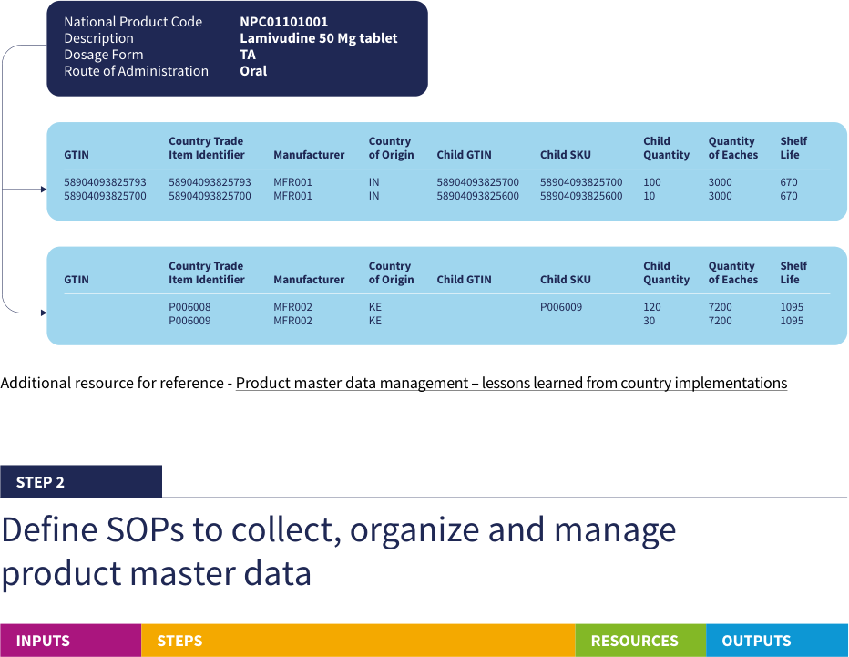
Source: WHO, Digital transformation handbook for health product catalogue, 2025, PDF page 40; rendered from the PDF's vector layer in the L1 entry.
Transitional approach to adopting globally unique trade item numbers
✎ edit📣 feedback Table 13.
Fig. 13. Minimum Product Master Data attributes and transitional Country Trade Item Identifier to GTIN examples
| National Product Code | Description | Dosage Form | Route of Administration |
|---|---|---|---|
| NPC01101001 | Lamivudine 50 Mg tablet | TA | Oral |
| GTIN | Country Trade Item Identifier | Manufacturer | Country of Origin | Child GTIN | Child SKU | Child Quantity | Quantity of Eaches | Shelf Life |
|---|---|---|---|---|---|---|---|---|
| 58904093825793 | 58904093825793 | MFR001 | IN | 58904093825700 | 58904093825700 | 100 | 3000 | 670 |
| 58904093825700 | 58904093825700 | MFR001 | IN | 58904093825600 | 10 | 3000 | 670 | |
| P006008 | MFR002 | KE | P006009 | 120 | 7200 | 1095 | ||
| P006009 | MFR002 | KE | 30 | 7200 | 1095 |
Generated from the FHIR example Product instances in smart-pcmt by dth_pc_figures.py. Values are as printed in the handbook (PDF page 40), including where they do not multiply out. The handbook also lists 58904093825600 as a Child SKU; the instance carries it as a GTIN only.
Minimum Product Master Data attributes and transitional Country Trade Item Identifier to GTIN examples
Change management processes and identifier decision table (PC-BP-04, PC-BP-05, PC-BP-07, PC-DT-01)
✎ edit📣 feedback Decision-table. PC-DT-01: Trade Item identifier (Country Trade Item Identifier vs GTIN)
Decision ID: PC-DT-01 | DMN 1.3 File: processes/decisions/PC-DT-01.dmn | Source: who-iris/library/9789240116191-eng (page-039, page-040, Fig. 13)
Used by process: PC-BP-04 (Assign a Country Trade Item Identifier and move to GTIN)
| Rule | gtinStatus |
hasExistingLocalId |
identifierKind |
transitionAction |
|---|---|---|---|---|
| 1 | "assigned" |
false |
"GTIN" |
"Default Country Trade Item Identifier to the assigned GTIN" |
| 2 | "assigned" |
true |
"GTIN" |
"Replace local identifier in Country Trade Item Identifier with the assigned GTIN and retain local-to-GTIN cross-reference" |
| 3 | "not assigned" |
- |
"Local identifier" |
"Generate and maintain a local identifier in Country Trade Item Identifier until a GTIN is assigned" |
| 4 | "unknown" |
- |
"unknown" |
"Not determined: GTIN status not known" |
When global identifiers such as GTINs are not available—e.g., if a manufacturer has not yet subscribed for a GTIN—it is recommended to use a local identifier for trade items.
✎ edit📣 feedback Business-process. PC-BP-04: Assign a Country Trade Item Identifier and move to GTIN
Process ID: PC-BP-04 | BPMN 2.0 Diagram: processes/PC-BP-04.bpmn | Source: who-iris/library/9789240116191-eng (page-039, page-040)
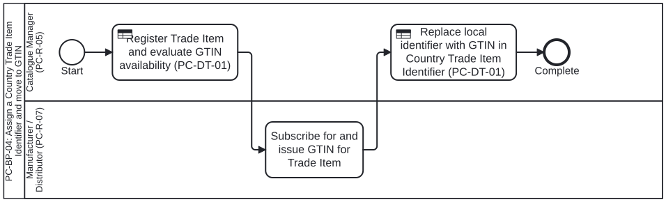
Lanes (Roles):
- Catalogue Manager (PC-R-05) (
PC-R-05): Manages product records and Country Trade Item Identifier attribute in NPC (p.39-40, 43) - Manufacturer / Distributor (PC-R-07) (
PC-R-07): Subscribes for and assigns globally unique trade item numbers (GTINs) to Trade Items (p.39-40)
Process Steps:
- Register Trade Item and evaluate GTIN availability (PC-DT-01) — Ch 4 (p.39, Fig. 13): Evaluate decision table PC-DT-01 — if GTIN is available, default Country Trade Item Identifier to the GTIN; if absent, generate and maintain a local identifier.
- Subscribe for and issue GTIN for Trade Item — Ch 4 (p.39-40, Fig. 13): Manufacturer subscribes for a GS1 GTIN and provides the assigned GTIN for the Trade Item (and child packaging levels).
- Replace local identifier with GTIN in Country Trade Item Identifier (PC-DT-01) — Ch 4 (p.39-40, Fig. 13): Replace the temporary local identifier in Country Trade Item Identifier with the newly assigned GTIN while preserving cross-reference mapping for historical transactions.
Inputs and Outputs (Data Objects):
- Trade Item record (with or without GTIN, p.39-40)
- Country Trade Item Identifier attribute (Fig. 13, p.40)
✎ edit📣 feedback Business-process. PC-BP-05: Distribute Product Master Data to downstream systems on add or update
Process ID: PC-BP-05 | BPMN 2.0 Diagram: processes/PC-BP-05.bpmn | Source: who-iris/library/9789240116191-eng (page-031, page-039)
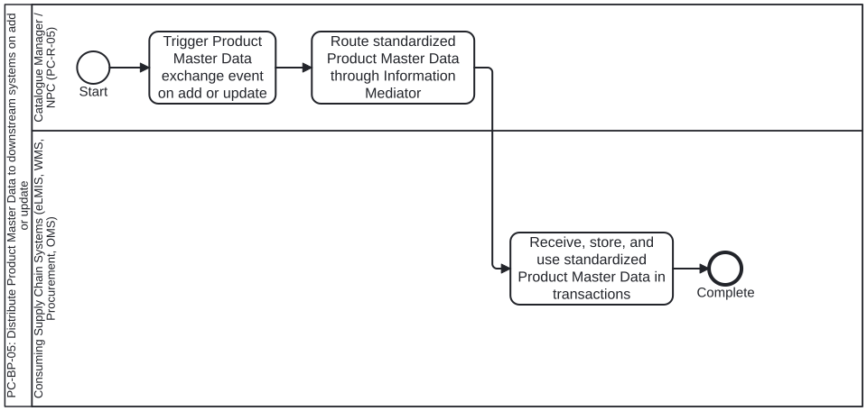
Lanes (Roles):
- Catalogue Manager / NPC (PC-R-05) (
PC-R-05): Publishes Product Master Data additions and updates from the NPC (p.39) - Consuming Supply Chain Systems (eLMIS, WMS, Procurement, OMS) (
consuming-systems): Downstream health and supply chain information systems receiving standardized Product Master Data via DPI-F Information Mediator (p.16, 31, 39)
Process Steps:
- Trigger Product Master Data exchange event on add or update — Ch 4 Step 1 (p.39): Emit Product Master Data exchange event from NPC when a product record is added or updated.
- Route standardized Product Master Data through Information Mediator — Intro (p.16), Ch 2 Step 3 (p.31) & Ch 4 Step 1 (p.39): Distribute standardized Product Master Data attributes according to data sharing agreements and security protocols.
- Receive, store, and use standardized Product Master Data in transactions — Ch 4 Step 1 (p.39): Consuming systems (eLMIS, WMS, procurement, OMS, dispensing) ingest standardized Product Master Data and reference uniform identifiers across forecasting, procurement, inventory, shipping, dispensing, and traceability.
Inputs and Outputs (Data Objects):
- Standardized Product Master Data update payload (p.39)
- Data sharing policies and exchange protocols (p.31, 39)
✎ edit📣 feedback Business-process. PC-BP-07: Institutionalise use of the National Product Catalogue: change plan and SOPs
Process ID: PC-BP-07 | BPMN 2.0 Diagram: processes/PC-BP-07.bpmn | Source: who-iris/library/9789240116191-eng (page-039, page-040, page-041)
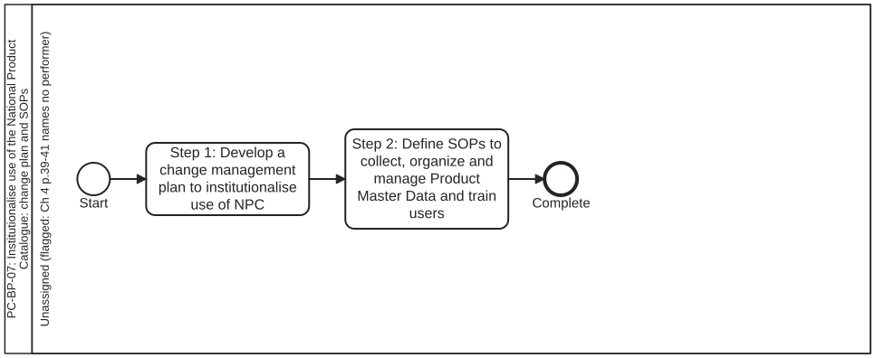
Unassigned Lane Flag: FLAGGED FOR OWNER: Chapter 4 (pages 39-41) names no performer for Steps 1-2; all tasks are placed in an explicit unassigned lane per workplan §2e.
Lanes (Roles):
- Unassigned (flagged: Ch 4 p.39-41 names no performer) (
unassigned): FLAGGED FOR OWNER: Chapter 4 states Steps 1-2 without naming a performing role.
Process Steps:
- Step 1: Develop a change management plan to institutionalise use of NPC — Ch 4 Step 1 (p.39): Identify all systems and processes needing standardized Product Master Data; define process changes, system enhancements, data model changes, and event-triggered exchange mechanisms.
- Step 2: Define SOPs to collect, organize and manage Product Master Data and train users — Ch 4 Step 2 (p.40-41): Define, validate, and approve SOPs for NPC workflows; define and institutionalize a continuous training and advocacy plan; train users on the approved SOPs.
Inputs and Outputs (Data Objects):
- Change management plan for all systems and processes to use NPC (Output Step 1, p.39)
- Product Master Data management SOPs (Output Step 2, p.40-41)
- Continuous training plan (Output Step 2, p.40-41)
Chapter 5. Building capacity to sustainably manage NPC
Step 1. Identify human resource capacity needs to support NPC
✎ edit📣 feedback The effectiveness of processes and their supporting systems depends on the availability of human resources with the appropriate skill sets to operate the systems and execute the processes. In addition to technical skills, the workforce must also understand the purpose of improved systems and processes, along with the benefits they bring to their daily work. Human resource capacity is a critical component for the successful implementation and adoption of global standards–based master data management systems and processes. This chapter outlines the steps that countries can follow to build human resource capacity to sustainably manage the NPC—including its system, processes, and data. INPUTS STEPS RESOURCES OUTPUTS
- TOR for the Master Data Governance Group.
- Master data management procedures, including master data governance policies.
- SOPs for product master data management. Determine the human resource capacity required to manage product master data management processes, operations, and technical tools such as the NPC.
- List of roles necessary to support the NPC and product master data management processes.
- Job descriptions for each identified role.
- Human resource management plan incorporating NPC management requirements. Identify each operational and technical role needed (e.g., Catalogue Manager, NPC System Administrator). Define job descriptions for each identified role to ensure clarity of responsibilities and expectations.
- Catalogue manager role description
- Additional roles for consideration are provided in Annex Develop or update the existing human resource management plan, including:
- Mitigation strategies for staff turnover
- Cross-skilling and upskilling of personnel
- Knowledge management practices
- Identification of hiring needs to ensure sustainable capacity Identify human resource capacity needs to support NPC STEP 1
✎ edit📣 feedback Table.
Chapter 5, Step 1. Identify human resource capacity needs to support NPC
| INPUTS | STEPS | RESOURCES | OUTPUTS |
|---|---|---|---|
| • TOR for the Master Data Governance Group. • Master data management procedures, including master data governance policies. • SOPs for product master data management. |
1. Determine the human resource capacity required to manage product master data management processes, operations, and technical tools such as the NPC. 2. Identify each operational and technical role needed (e.g., Catalogue Manager, NPC System Administrator). 3. Define job descriptions for each identified role to ensure clarity of responsibilities and expectations. 4. Develop or update the existing human resource management plan, including: - Mitigation strategies for staff turnover - Cross-skilling and upskilling of personnel - Knowledge management practices - Identification of hiring needs to ensure sustainable capacity |
• Catalogue manager role description • Additional roles for consideration are provided in Annex |
• List of roles necessary to support the NPC and product master data management processes. • Job descriptions for each identified role. • Human resource management plan incorporating NPC management requirements. |
Chapter 5, Step 1. Identify human resource capacity needs to support NPC
Step 2. Onboard and assign individuals; Step 3. Knowledge management plan
✎ edit📣 feedback INPUTS STEPS RESOURCES OUTPUTS
- List of roles necessary to support NPC and product master data management processes.
- Job descriptions for each role.
- Human resource management plan. Develop budgets and identify funding sources to fill the identified roles and future human resource needs.
- Budget for human resource capacity needs.
- Onboarded resources. Once sufficient funding has been identified, recruit and train people with required skillsets to fill the necessary roles. INPUTS STEPS RESOURCES OUTPUTS
- List of roles necessary to support the NPC and product master data management processes.
- Job descriptions.
- TOR for the Master Data Governance Group.
- Master data management procedures, including master data governance policies.
- SOPs for product master data management.
- Continuous training and capacity- building plan. Develop budgets and identify funding sources to fill the identified roles and future human resource needs.
- Organogram for resources relevant to product master data management.
- Knowledge management plan for master data and NPC.
- Governmental strategy to engage and enable local technical capacity. Once sufficient funding has been identified, recruit and train people with required skillsets to fill the necessary roles. Develop strategies to expand human resource capacity by engaging and enabling local vendors and implementation partners. Onboard and assign individuals to the identified roles STEP 2 Develop knowledge management plan to enhance skills and capacity in alignment with evolving needs STEP 3 End of chapter checkpoint After finishing the steps outlined in this chapter, the following outputs should be available:
- List of roles and job descriptions to support NPC and product master data management processes
- Human resource management plan
- Organogram for resources relevant product master data management
- Knowledge management plan for master data and NPC
- Governmental strategy to engage and enable local technical capacity
✎ edit📣 feedback Table.
Chapter 5, Step 2. Onboard and assign individuals to the identified roles
| INPUTS | STEPS | RESOURCES | OUTPUTS |
|---|---|---|---|
| • List of roles necessary to support NPC and product master data management processes. • Job descriptions for each role. • Human resource management plan. |
1. Develop budgets and identify funding sources to fill the identified roles and future human resource needs. 2. Once sufficient funding has been identified, recruit and train people with required skillsets to fill the necessary roles. |
— | • Budget for human resource capacity needs. • Onboarded resources. |
Chapter 5, Step 2. Onboard and assign individuals to the identified roles
✎ edit📣 feedback Table.
Chapter 5, Step 3. Develop knowledge management plan to enhance skills and capacity in alignment with evolving needs
| INPUTS | STEPS | RESOURCES | OUTPUTS |
|---|---|---|---|
| • List of roles necessary to support the NPC and product master data management processes. • Job descriptions. • TOR for the Master Data Governance Group. • Master data management procedures, including master data governance policies. • SOPs for product master data management. • Continuous training and capacity-building plan. |
1. Develop budgets and identify funding sources to fill the identified roles and future human resource needs. 2. Once sufficient funding has been identified, recruit and train people with required skillsets to fill the necessary roles. 3. Develop strategies to expand human resource capacity by engaging and enabling local vendors and implementation partners. |
— | • Organogram for resources relevant to product master data management. • Knowledge management plan for master data and NPC. • Governmental strategy to engage and enable local technical capacity. |
Chapter 5, Step 3. Develop knowledge management plan to enhance skills and capacity in alignment with evolving needs
Catalogue Manager role and capacity-building process (PC-R-05, PC-BP-08)
✎ edit📣 feedback Persona. PC-R-05: Catalogue Manager
Role ID: PC-R-05 | Type: operational-role | Source: who-iris/library/9789240116191-eng (page-043, page-052, page-053, page-054)
Processes: PC-BP-04, PC-BP-05, PC-BP-08
ArchiMate 0.3.0-draft.1 links: Catalogue Manager, National Product Catalogue, Product Catalog Management System, Product Master Data Management, Product Master Data Management Roles
Responsibilities (from the handbook):
- Operational role identified to support the National Product Catalogue (NPC) and Product Master Data management processes (alongside NPC System Administrator).
- Oversees all Product Master Data management activities, including adding and updating products in the NPC.
- Maintains Country Trade Item Identifiers and transitions local product identifiers to GTINs as they become available.
- Coordinates Product Master Data distribution and synchronization with downstream consuming systems.
✎ edit📣 feedback Business-process. PC-BP-08: Build human resource capacity to sustainably manage the NPC
Process ID: PC-BP-08 | BPMN 2.0 Diagram: processes/PC-BP-08.bpmn | Source: who-iris/library/9789240116191-eng (page-043, page-044)
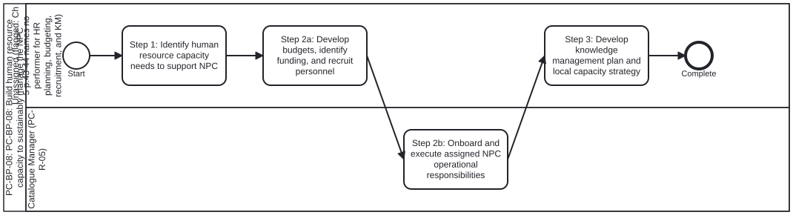
Unassigned Lane Flag: FLAGGED FOR OWNER: Chapter 5 (pages 43-44) names Catalogue Manager (PC-R-05) and NPC System Administrator (PC-R-18) as target operational/technical roles, but names no performer for HR planning, budgeting, recruitment, and knowledge management; those tasks are placed in an explicit unassigned lane per workplan §2e.
Lanes (Roles):
- Unassigned (flagged: Ch 5 p.43-44 names no performer for HR planning, budgeting, recruitment, and KM) (
unassigned): FLAGGED FOR OWNER: Chapter 5 does not name the performing role for HR capacity planning, budgeting, recruitment, and knowledge management. - Catalogue Manager (PC-R-05) (
PC-R-05): Named operational role onboarded and assigned to manage the NPC and Product Master Data processes (p.43-44)
Process Steps:
- Step 1: Identify human resource capacity needs to support NPC — Ch 5 Step 1 (p.43): Determine HR capacity required; identify operational and technical roles (e.g., Catalogue Manager, NPC System Administrator); define job descriptions and update the HR management plan.
- Step 2a: Develop budgets, identify funding, and recruit personnel — Ch 5 Step 2 (p.44): Develop budgets, identify funding sources, and recruit and train personnel with required skill sets to fill the identified roles.
- Step 2b: Onboard and execute assigned NPC operational responsibilities — Ch 5 Step 2 (p.43-44): Onboarded Catalogue Manager (and technical staff) assume operational responsibility for the NPC according to defined job descriptions and SOPs.
- Step 3: Develop knowledge management plan and local capacity strategy — Ch 5 Step 3 (p.44): Define organogram, knowledge management plan for master data and NPC, and governmental strategy to engage and enable local vendors and technical capacity.
Inputs and Outputs (Data Objects):
- List of roles and job descriptions to support NPC (Output Step 1, p.43-44)
- Human resource management plan and budget (Output Step 1-2, p.43-44)
- Onboarded resources and Organogram (Output Step 2-3, p.44)
- Knowledge management plan and governmental strategy for local technical capacity (Output Step 3, p.44)
Chapter 6. Leveraging the WHO-hosted PCMT
Leveraging the WHO-hosted PCMT
✎ edit📣 feedback Countries planning to implement a digital tool to manage product master data may consider using the WHO– hosted PCMT as an initial option. This tool can serve as a starting point to manage national health product master data while countries build the necessary technical resources and capacity to implement an in-country– hosted solution. Alternatively, countries may continue using the WHO-hosted PCMT if it meets their ongoing needs. The WHO-hosted PCMT will be available in 2026. Fig. 14 illustrates a conceptual model of how countries can leverage the PCMT to manage their respective health product catalogues. Fig. 14: Illustration of how countries can leverage WHO hosted PCMT Country A Users Country B Users GLOBAL CATALOGUE PRODUCT CATALOGUE MANAGEMENT TOOL
- Global identifier
- Unit of use
- Pharmaceutical information dosage form, route of administration, strength etc.
- Trade item information
- Manufacturer, country of origin, shelf life etc. COUNTRY CATALOGUE A
- Country identifiers
- Country specific product information. E.g., registration number COUNTRY CATALOGUE B
- Country identifiers
- Country specific product information. E.g., registration number Country catalogues to derive common product information from the global catalog WHO INFRASTRUCTURE
✎ edit📣 feedback Figure 14.
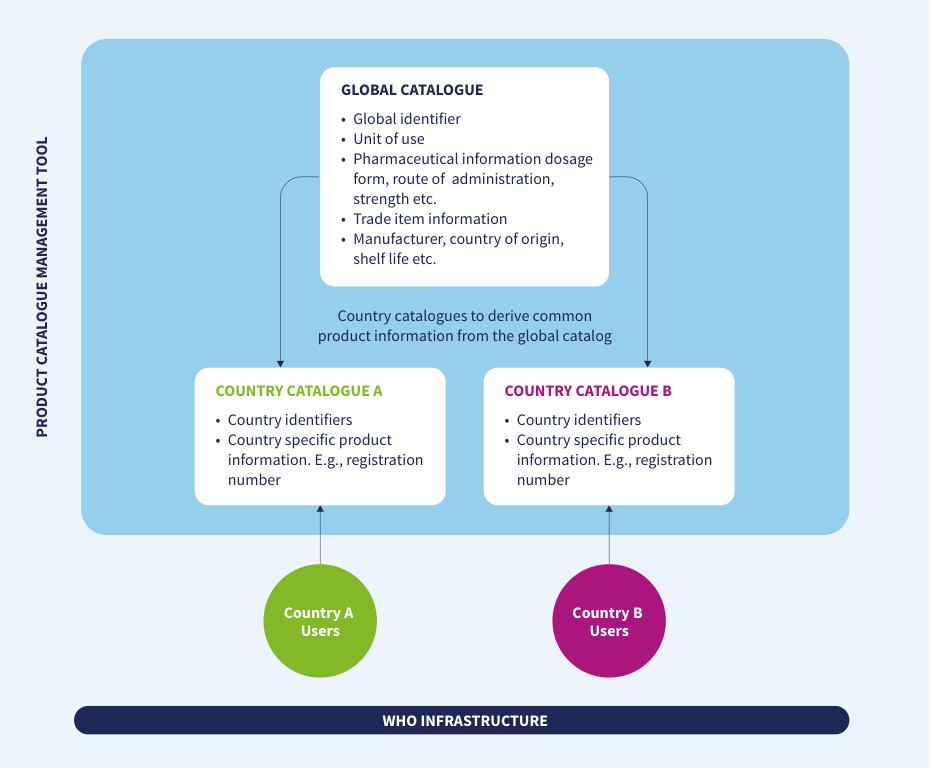
Source: WHO, Digital transformation handbook for health product catalogue, 2025, PDF page 46; rendered from the PDF's vector layer in the L1 entry.
Illustration of how countries can leverage WHO hosted PCMT
Catalogue setup and access
✎ edit📣 feedback The PCMT will implement appropriate data access and security controls to support product catalogues for multiple countries and organizations. Each country’s or organization’s catalogue will be maintained as a separate dataset through access permissions based on specific user categories. Illustrative details of catalogue setup and access structure: In PCMT, users can be grouped into User Groups, which are assigned to Categories that define their level of access (view, edit, or own). Permissions are assigned to product records by linking them to categories. Example access model:
- Global Catalogue - Managed by: WHOGroup - Category: Catalogues → WHO - Permissions: - View: All users - Edit: WHOGroup - Own (approve/reject): WHOGroup
- Country A Catalogue - Managed by: CAGroup - Category: Catalogues → CA - Permissions: - View: CAGroup - Edit: CAGroup - Own (approve/reject): CAGroup
- Country B Catalogue - Managed by: CBGroup - Category: Catalogues → CB - Permissions: - View: CBGroup - Edit: CBGroup - Own (approve/reject): CBGroup
- Although each catalogue is distinct, user groups may categorize products using any category system available in the platform. However, a reserved category tree labeled “Catalogues” is used specifically to separate catalogues and assign user-level access.
- When importing, creating, or editing products, users must ensure that their designated Catalogue Category is selected.
- Cross-catalogue associations are also supported. For example, a user from Country A may associate a product in the Country A Catalogue with a product from the Global Catalogue, thereby enabling linkages between national and global product information (e.g., for regulatory or market authorization purposes).
- Products may also be copied from one catalogue to another manually or via automated copy rules, allowing, for instance, a country user to replicate trade item data from the Global Catalogue into their own national catalogue.
✎ edit📣 feedback Table.
WHO-hosted PCMT catalogue structure and user-group access permissions
| Component in WHO-hosted PCMT (WHO INFRASTRUCTURE) | Attributes / Scope | Users & Data Flow |
|---|---|---|
| GLOBAL CATALOGUE | • Global identifier • Unit of use • Pharmaceutical information dosage form, route of administration, strength etc. • Trade item information • Manufacturer, country of origin, shelf life etc. |
Common product information derived by Country Catalogues |
| COUNTRY CATALOGUE A | • Country identifiers • Country specific product information. E.g., registration number |
Accessed by Country A Users; derives common product information from the Global Catalogue |
| COUNTRY CATALOGUE B | • Country identifiers • Country specific product information. E.g., registration number |
Accessed by Country B Users; derives common product information from the Global Catalogue |
Catalogue user-group permissions
| Catalogue | Managed by | Category | View permission | Edit permission | Own (approve/reject) permission |
|---|---|---|---|---|---|
| Global Catalogue | WHOGroup |
Catalogues → WHO |
All users | WHOGroup |
WHOGroup |
| Country A Catalogue | CAGroup |
Catalogues → CA |
CAGroup |
CAGroup |
CAGroup |
| Country B Catalogue | CBGroup |
Catalogues → CB |
CBGroup |
CBGroup |
CBGroup |
WHO-hosted PCMT catalogue structure and user-group access permissions
Catalogue user groups, attribute decision table and derivation process (PC-R-09, PC-DT-02, PC-BP-09)
✎ edit📣 feedback Persona. PC-R-09: WHO User Group and Country User Group
Role ID: PC-R-09 | Type: catalogue-user-group | Source: who-iris/library/9789240116191-eng (page-046, page-047, page-049, page-050)
Processes: PC-BP-09, PC-BP-10
ArchiMate 0.3.0-draft.1 links: User, Product Catalog Management System, National Product Catalogue, Product Master Data
Responsibilities (from the handbook):
- WHO User Group (WHOGroup): manages, edits, and owns (approves/rejects) product records in the Global Catalogue category (Catalogues -> WHO), which all users have permission to view.
- Country User Group (e.g., CAGroup, CBGroup): views, edits, and owns (approves/rejects) product records in its designated Country Catalogue category (Catalogues -> CA, Catalogues -> CB).
- Country User Group: associates country catalogue products with Global Catalogue products or copies Trade Item data from the Global Catalogue into the national catalogue (Fig. 14).
- Country User Group (WHO-hosted PCMT or in-country NPC tool): shares national Product Master Data back to the WHO Global Product Catalogue as a global good (Fig. 15).
✎ edit📣 feedback Decision-table. PC-DT-02: Attribute catalogue (Global Catalogue vs Country Catalogue)
Decision ID: PC-DT-02 | DMN 1.3 File: processes/decisions/PC-DT-02.dmn | Source: who-iris/library/9789240116191-eng (page-046, Fig. 14)
Used by process: PC-BP-09 (Derive a country catalogue from the Global Catalogue)
| Rule | attributeGroup |
owningCatalogue |
countryDerivation |
|---|---|---|---|
| 1 | "Global identifier" |
"Global Catalogue" |
"Derived from Global Catalogue via cross-catalogue association or copy" |
| 2 | "Unit of use" |
"Global Catalogue" |
"Derived from Global Catalogue via cross-catalogue association or copy" |
| 3 | "Pharmaceutical information" |
"Global Catalogue" |
"Derived from Global Catalogue via cross-catalogue association or copy" |
| 4 | "Trade item information" |
"Global Catalogue" |
"Derived from Global Catalogue via cross-catalogue association or copy" |
| 5 | "Manufacturer, country of origin, shelf life" |
"Global Catalogue" |
"Derived from Global Catalogue via cross-catalogue association or copy" |
| 6 | "Country identifiers" |
"Country Catalogue" |
"Maintained directly in Country Catalogue" |
| 7 | "Country-specific product information" (e.g., registration number) |
"Country Catalogue" |
"Maintained directly in Country Catalogue" |
| 8 | "Other" |
"unknown" |
"Not determined: Fig. 14 does not place this attribute group" |
✎ edit📣 feedback Business-process. PC-BP-09: Derive a country catalogue from the Global Catalogue (associate or copy a product)
Process ID: PC-BP-09 | BPMN 2.0 Diagram: processes/PC-BP-09.bpmn | Source: who-iris/library/9789240116191-eng (page-046, page-047)
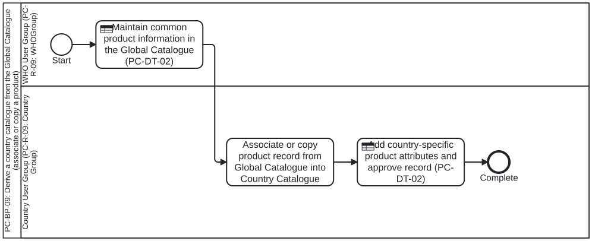
Lanes (Roles):
- WHO User Group (PC-R-09: WHOGroup) (
PC-R-09): Manages, edits, and owns product records in the Global Catalogue (Catalogues -> WHO, p.46-47) - Country User Group (PC-R-09: Country Group) (
PC-R-09): Views Global Catalogue and edits/owns product records in the Country Catalogue (Catalogues -> Country, p.46-47)
Process Steps:
- Maintain common product information in the Global Catalogue (PC-DT-02) — Ch 6 (p.46-47, Fig. 14): WHOGroup publishes common product attributes in the Global Catalogue (global identifier, Unit of Use, pharmaceutical information, Trade Item information, manufacturer, country of origin, shelf life) per PC-DT-02.
- Associate or copy product record from Global Catalogue into Country Catalogue — Ch 6 (p.46-47, Fig. 14): Country user selects designated Country Catalogue category and either associates a country product with a Global Catalogue product or copies Trade Item data from the Global Catalogue via manual or automated copy rules.
- Add country-specific product attributes and approve record (PC-DT-02) — Ch 6 (p.46-47, Fig. 14): Country user populates country-specific attributes (country identifiers, national registration number per PC-DT-02) and approves the record in the Country Catalogue.
Inputs and Outputs (Data Objects):
- Global Catalogue product record (common product and Trade Item information, Fig. 14, p.46)
- Country Catalogue product record (linked/derived common attributes + country identifiers and registration number, Fig. 14, p.46)
Chapter 7. Sharing product master data as a global good
Sharing product master data as a global good
✎ edit📣 feedback Sharing health product master data with a global repository—such as the WHO Global Product Catalogue— holds significant value and importance as a global good for several reasons:
- Access to accurate information: A centralized repository enables health professionals and organizations worldwide to access accurate and up-to-date information on health products.
- Standardization: A global repository aggregates master data from multiple sources for the same or similar products and facilitates the harmonization of data differences to support standardization.
- Reduced redundancy: Sharing data at a global level reduces duplication of effort in the creation and maintenance of health product master data. Countries can benefit from each other’s efforts, enhancing overall efficiency.
- Crisis management: During public health emergencies—such as pandemics—access to globally standardized data enables coordinated responses and the efficient distribution of essential health products.
- Equal access: Sharing data ensures that all countries, regardless of their economic status, have access to critical health product information.
- Capacity building: Low- and middle-income countries can strengthen their capacity by leveraging global data and best practices shared through the repository. Countries may choose to share their product master data with the WHO Global Catalogue through the PCMT. This mechanism can support global harmonization efforts and contribute to improved data quality and interoperability. The figure below presents a conceptual model illustrating how countries—both those using the WHO-hosted PCMT instance and those using an in-country tool—can share master data globally.
✎ edit📣 feedback OTHER COUNTRIES Country A Users Country B Users Product master data Product master data GLOBAL CATALOGUE PRODUCT CATALOGUE MANAGEMENT TOOL
- Global identifier
- Unit of use
- Pharmaceutical information dosage form, route of administration, strength etc.
- Trade item information
- Manufacturer, country of origin, shelf life etc. COUNTRY CATALOGUE A
- Country identifiers
- Country specific product information. E.g., registration number COUNTRY CATALOGUE B
- Country identifiers
- Country specific product information. E.g., registration number Country catalogues to derive common product information from the global catalog PRODUCT MASTER DATA WHO INFRASTRUCTURE Fig. 15: Illustration of how countries can share data with the WHO hosted PCMT
✎ edit📣 feedback Figure 15.
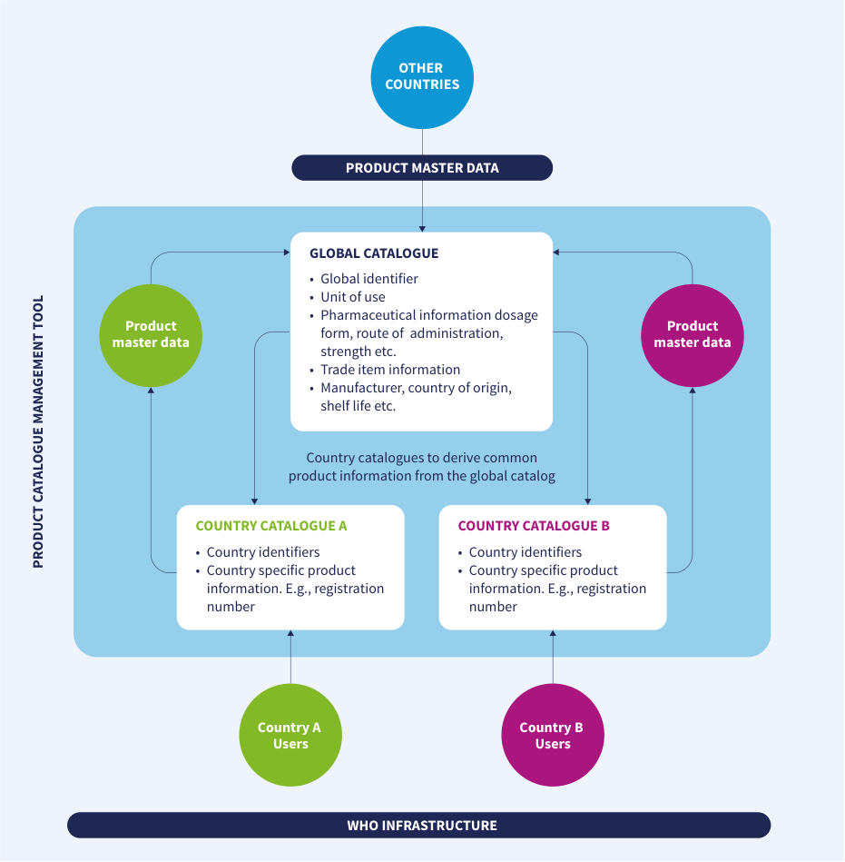
Source: WHO, Digital transformation handbook for health product catalogue, 2025, PDF page 50; rendered from the PDF's vector layer in the L1 entry.
Illustration of how countries can share data with the WHO hosted PCMT
✎ edit📣 feedback Table 15.
Fig. 15. Bidirectional Product Master Data flow between country catalogues and the WHO Global Catalogue
| Component in WHO-hosted PCMT (WHO INFRASTRUCTURE) | Attributes / Scope | Bidirectional Data Flow |
|---|---|---|
| OTHER COUNTRIES | External national product catalogues | Contribute PRODUCT MASTER DATA into the Global Catalogue |
| GLOBAL CATALOGUE | • Global identifier • Unit of use • Pharmaceutical information dosage form, route of administration, strength etc. • Trade item information • Manufacturer, country of origin, shelf life etc. |
Receives Product master data from Country Catalogues A & B and Other Countries; provides common product information to Country Catalogues |
| COUNTRY CATALOGUE A | • Country identifiers • Country specific product information. E.g., registration number |
Used by Country A Users; derives common product information from the Global Catalogue and shares Product master data back to the Global Catalogue |
| COUNTRY CATALOGUE B | • Country identifiers • Country specific product information. E.g., registration number |
Used by Country B Users; derives common product information from the Global Catalogue and shares Product master data back to the Global Catalogue |
Bidirectional Product Master Data flow between country catalogues and the WHO Global Catalogue
Global Product Catalogue sharing process (PC-BP-10)
✎ edit📣 feedback Business-process. PC-BP-10: Share country Product Master Data with the WHO Global Catalogue
Process ID: PC-BP-10 | BPMN 2.0 Diagram: processes/PC-BP-10.bpmn | Source: who-iris/library/9789240116191-eng (page-049, page-050)
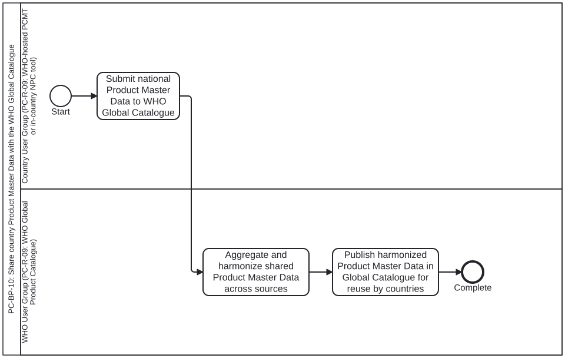
Lanes (Roles):
- Country User Group (PC-R-09: WHO-hosted PCMT or in-country NPC tool) (
PC-R-09): Country sharing national Product Master Data with the WHO Global Product Catalogue (p.49-50, Fig. 15) - WHO User Group (PC-R-09: WHO Global Product Catalogue) (
PC-R-09): Aggregates, harmonizes, and publishes shared Product Master Data in the Global Catalogue as a global good (p.49-50, Fig. 15)
Process Steps:
- Submit national Product Master Data to WHO Global Catalogue — Ch 7 (p.49-50, Fig. 15): Country (using either the WHO-hosted PCMT instance or an in-country NPC tool) shares standardized Product Master Data with the WHO Global Product Catalogue.
- Aggregate and harmonize shared Product Master Data across sources — Ch 7 (p.49-50, Fig. 15): WHO Global Catalogue aggregates Product Master Data from multiple countries and sources and harmonizes differences to support global standardization.
- Publish harmonized Product Master Data in Global Catalogue for reuse by countries — Ch 7 (p.49-50, Fig. 15): Publish updated Global Catalogue records so participating and other countries can access accurate product information and reduce duplication.
Inputs and Outputs (Data Objects):
- Shared national Product Master Data submission (Fig. 15, p.49-50)
- Harmonized WHO Global Product Catalogue dataset (Fig. 15, p.49-50)
Chapter 8. Sharing implementation experiences
Rwanda
✎ edit📣 feedback COUNTRY: RWANDA REGULATORY DATA TECHNOLOGY PEOPLE CHANGE MANAGEMENT Status
- Regulations governing the implementation of identification data capture and data sharing for traceability of pharmaceutical product
- Guidelines for identification and labelling of pharmaceutical products published in Aug 2022
- Guidelines for product and location master data sharing published in Aug 2022
- The National Vision & Strategy for Pharmaceutical Traceability Leveraging GS1 Global Standards, published in 2019 7134 products are uploaded into NPC and 2611 (H) are mapped with GTINs NPC hosted on open- source PCMT, and data sharing mechanism piloted through health information exchange mediator Catalog manager onboarded to centrally manage product master data in NPC
- Establishment of a pharmaceutical traceability TWG to lead the strategy, collaboration and oversight of traceability implementation
- Rwanda trade item numbers defined for products without GTIN Process A workshop with stakeholders, including Ministry of Health, Rwanda Food and Drugs Authority, Rwanda Medical Supply Ltd., and implementation partners, was held to define master data guidelines
- Data collected manually from packages as a short- term approach
- Data to be collected formally through registration process
- Open-source PCMT tailored for country needs
- NPC being integrated with other systems through mediator Detailed job descriptions defined for catalog manager part of Rwanda FDA team
- SOPs with transition details defined
- Mapping between old and new product and trade item ids established Challenges Time-intensive process to establish and release guidelines Obtaining high-quality data from sources like manufacturers Integrating NPC data with other consuming systems necessitating additional modifications to those systems Developing human resource capabilities to manage system administration and enhancements of NPC
- Quantity conversions across product packaging hierarchies
- Managing both products with and without GTINs Approaches adopted Engaged government stakeholders, donors, partners, and the private sector, including manufacturers and distributors, through an inclusive approach
- Started with a minimal set of product attributes
- Identified alternate data sources like labels on product packaging Adopted phased pilot- based approach to gradually integrate NPC with other systems
- Collaborated with implementation partners and donors for technical support
- Developing long- term strategies to build capacity
- NPC configured to maintain packaging hierarchies with quantity conversion factors
- A local attribute is used to identify trade items without GTINs Best-practices/ lessons learnt Engage all relevant stakeholders throughout the process
- Standardize national product codes across all products
- Develop processes to map local product IDs to GTINs
- Designate NPC as the national source of all product master data Use an information mediator such as OpenHIM to integrate NPC with other systems. This minimizes the need for point-to-point integrations Assign the catalog manager to oversee all product master data management activities, including adding and updating products Design NPC, data management processes, and attributes to facilitate a seamless transition to GTIN use as they become available, without disrupting ongoing transactions
✎ edit📣 feedback Table.
Rwanda health product catalogue implementation experience
| Aspect | REGULATORY | DATA | TECHNOLOGY | PEOPLE | CHANGE MANAGEMENT |
|---|---|---|---|---|---|
| Status | • Regulations governing the implementation of identification data capture and data sharing for traceability of pharmaceutical product • Guidelines for identification and labelling of pharmaceutical products published in Aug 2022 • Guidelines for product and location master data sharing published in Aug 2022 • The National Vision & Strategy for Pharmaceutical Traceability Leveraging GS1 Global Standards, published in 2019 |
7134 products are uploaded into NPC and 2611 (H) are mapped with GTINs | NPC hosted on open-source PCMT, and data sharing mechanism piloted through health information exchange mediator | Catalog manager onboarded to centrally manage product master data in NPC | • Establishment of a pharmaceutical traceability TWG to lead the strategy, collaboration and oversight of traceability implementation • Rwanda trade item numbers defined for products without GTIN |
| Process | A workshop with stakeholders, including Ministry of Health, Rwanda Food and Drugs Authority, Rwanda Medical Supply Ltd., and implementation partners, was held to define master data guidelines | • Data collected manually from packages as a short-term approach • Data to be collected formally through registration process |
• Open-source PCMT tailored for country needs • NPC being integrated with other systems through mediator |
Detailed job descriptions defined for catalog manager part of Rwanda FDA team | • SOPs with transition details defined • Mapping between old and new product and trade item ids established |
| Challenges | Time-intensive process to establish and release guidelines | Obtaining high-quality data from sources like manufacturers | Integrating NPC data with other consuming systems necessitating additional modifications to those systems | Developing human resource capabilities to manage system administration and enhancements of NPC | • Quantity conversions across product packaging hierarchies • Managing both products with and without GTINs |
| Approaches adopted | Engaged government stakeholders, donors, partners, and the private sector, including manufacturers and distributors, through an inclusive approach | • Started with a minimal set of product attributes • Identified alternate data sources like labels on product packaging |
Adopted phased pilot-based approach to gradually integrate NPC with other systems | • Collaborated with implementation partners and donors for technical support • Developing long-term strategies to build capacity |
• NPC configured to maintain packaging hierarchies with quantity conversion factors • A local attribute is used to identify trade items without GTINs |
| Best-practices/lessons learnt | Engage all relevant stakeholders throughout the process | • Standardize national product codes across all products • Develop processes to map local product IDs to GTINs • Designate NPC as the national source of all product master data |
Use an information mediator such as OpenHIM to integrate NPC with other systems. This minimizes the need for point-to-point integrations | Assign the catalog manager to oversee all product master data management activities, including adding and updating products | Design NPC, data management processes, and attributes to facilitate a seamless transition to GTIN use as they become available, without disrupting ongoing transactions |
Rwanda health product catalogue implementation experience
Zambia
✎ edit📣 feedback COUNTRY: ZAMBIA REGULATORY DATA TECHNOLOGY PEOPLE CHANGE MANAGEMENT Status 2023: Zambia Medicines Regulatory Authority publishes enforceable Guidelines for Traceability (Trade Item and Location Identification)
- 7414 pharmaceutical products harmonized with 551 GTINs collected
- 2021: National Product Catalog (NPC) implemented through Product Catalog Management Tool (PCMT)
- 2022: PCMT integrated with Global Data Synchronisation Network to source from suppliers and linked with Warehouse Management System, provide master data to Zambia Medicines and Medical Supplies Agency
- 2024: WMS Expert integrated with eLMIS
- 2024: WMS Expert Portal configured to support serialization
- 2024: Scanning of GS1 barcodes introduced at ZAMMSA receiving functions
- 2024: Mobile App deployed to scan serial numbers Catalog managers identified and placed responsible for managing 2024: products from two suppliers tracked from manufacturer to ZAMMSA to a Health Facility Process
- Collaborative workshop to launch the Zambia pharmaceutical traceability strategy through collective action of government, private sector, and development partner stakeholders
- 2024, Zambia begun to implement a proof of concept (POC) that is fast-tracking serialization
- Manual collection of data, manually collect serial numbers from scanning labels products
- Open-source Product Catalog Management Tool (PCMT) adopted
- Incorporated into the country’s Health Information Exchange framework through SMART Zambia
- Mobile App deployed to scan serial numbers from packs
- Health workers trained to authenticate medicines before dispensing to patients using serial numbers (3 facilities)
- National Pharmaceutical Traceability Strategy formulated, and clear objectives set
- Enhanced stock visibility within the ZAMMSA Warehouse Management System (WMS)
- Scanning of GS1 barcodes piloted at 3 health facilities to dispense medicines Challenges
- Limited resources and legal framework, governance structure and resources to operationalize the strategy
- Barcode scanning relied on a paper- based and semi- automated system of inventory Conflict of interest from other partners who had alternative operators
- Attrition and unavailability of trained HR to manage and drive the system
- GS1, being a new concept, presented a barrier as it required effective change management and addressing perception challenges Approaches adopted
- Phased approach to implementation to align with national guidelines
- Technical working group established to review progress
- Continuous product data harmonization update
- Leveraging on the available and existing technology
- Technical design specifications and procurement of barcode scanners Trained catalog managers responsible for managing and maintaining this data Regular stakeholder engagement Best-practices/ lessons learnt Stakeholder engagement Standardized PCMT has allowed harmonized product identifiers across the supply chain Catalog managers placed responsible for managing Improved collaboration
✎ edit📣 feedback Table.
Zambia health product catalogue implementation experience
| Aspect | REGULATORY | DATA | TECHNOLOGY | PEOPLE | CHANGE MANAGEMENT |
|---|---|---|---|---|---|
| Status | 2023: Zambia Medicines Regulatory Authority publishes enforceable Guidelines for Traceability (Trade Item and Location Identification) | • 7414 pharmaceutical products harmonized with 551 GTINs collected | • 2021: National Product Catalog (NPC) implemented through Product Catalog Management Tool (PCMT) • 2022: PCMT integrated with Global Data Synchronisation Network to source from suppliers and linked with Warehouse Management System, provide master data to Zambia Medicines and Medical Supplies Agency • 2024: WMS Expert integrated with eLMIS • 2024: WMS Expert Portal configured to support serialization • 2024: Scanning of GS1 barcodes introduced at ZAMMSA receiving functions • 2024: Mobile App deployed to scan serial numbers |
Catalog managers identified and placed responsible for managing | 2024: products from two suppliers tracked from manufacturer to ZAMMSA to a Health Facility |
| Process | • Collaborative workshop to launch the Zambia pharmaceutical traceability strategy through collective action of government, private sector, and development partner stakeholders • 2024, Zambia begun to implement a proof of concept (POC) that is fast-tracking serialization |
• Manual collection of data, manually collect serial numbers from scanning labels products | • Open-source Product Catalog Management Tool (PCMT) adopted • Incorporated into the country’s Health Information Exchange framework through SMART Zambia • Mobile App deployed to scan serial numbers from packs |
• Health workers trained to authenticate medicines before dispensing to patients using serial numbers (3 facilities) | • National Pharmaceutical Traceability Strategy formulated, and clear objectives set • Enhanced stock visibility within the ZAMMSA Warehouse Management System (WMS) • Scanning of GS1 barcodes piloted at 3 health facilities to dispense medicines |
| Challenges | • Limited resources and legal framework, governance structure and resources to operationalize the strategy | • Barcode scanning relied on a paper-based and semi-automated system of inventory | Conflict of interest from other partners who had alternative operators | • Attrition and unavailability of trained HR to manage and drive the system | • GS1, being a new concept, presented a barrier as it required effective change management and addressing perception challenges |
| Approaches adopted | • Phased approach to implementation to align with national guidelines • Technical working group established to review progress |
• Continuous product data harmonization update | • Leveraging on the available and existing technology • Technical design specifications and procurement of barcode scanners |
Trained catalog managers responsible for managing and maintaining this data | Regular stakeholder engagement |
| Best-practices/lessons learnt | Stakeholder engagement | Standardized | PCMT has allowed harmonized product identifiers across the supply chain | Catalog managers placed responsible for managing | Improved collaboration |
Zambia health product catalogue implementation experience
Nigeria
✎ edit📣 feedback COUNTRY: NIGERIA REGULATORY DATA TECHNOLOGY PEOPLE CHANGE MANAGEMENT Status
- Regulatory Guidelines for traceability includes requirements for identification and labelling of pharmaceutical products. Regulatory Guidelines Draft published in 2022 for inputs by stakeholders. The guidelines are in the final stages of preparation to be gazetted by the Ministry of Justice of Nigeria.
- Guidelines for product and location master data sharing published in April 2022 6517 products are uploaded into NPC and 794 of them are mapped with GTINs NPC hosted a Product Catalogue Management Tool (PCMT) for data sharing mechanism pulled from NAFDAC Database, GDSN and GS1 Nigeria One Source, a GTIN issuance system/Catalogue used in Nigeria to populate the PCMT Catalog manager onboarded to centrally manage product master data in NPC National Agency for Food and Drug Administration and Control registration number is defined for all products including products without GTINs. Mandatory Traceability pilots for Narcotic and Controlled substances are ongoing with requirements to obtain GTINs and upload the 29 mandatory Master data Attributes. International agencies are mandating for GTINs and Master Data as part of their procurement processes. Process A series of meetings with stakeholders, including NAFDAC, GS1 Local and Global Office Healthcare teams, and implementation partners, was held to define master data guidelines
- Data collected manually from packages as a short- term approach for pilots only
- Data to be collected formally through registration process and upon GTIN registration by Brand owners/MAHs for GTINs issued locally in Nigeria and via GDSN for non-GS1 Nigeria issued GTINs
- GS1 Nigeria One Source is used as PCMT tailored for country needs for GTINs issued in Nigeria
- NPC being integrated with other systems through GDSN for GTINs not issued in Nigeria
- NAFDAC Traceability Information System (TIS) is integrated with NPC to hold MD for all regulated products (food, drugs, medical devices, etc.) Detailed job descriptions defined for catalog manager part of NAFDAC team
- SOPs with transition details defined
- Mapping between old and new product and trade item ids established Challenges Time-intensive process to establish and release guidelines Obtaining high-quality data from sources like manufacturers Integrating NPC data with other consuming systems necessitating additional modifications to those systems Developing human resource capabilities to manage system administration and enhancements of NPC
- Quantity conversions across product packaging hierarchies
- Managing both products with and without GTINs Approaches adopted Engaged government stakeholders, donors, partners, and the private sector, including manufacturers and distributors, through an inclusive approach
- Started with a minimal set of product attributes
- Identified alternate data sources like labels on product packages Adopted phased pilot- based approach to gradually integrate NPC with other systems
- Collaborated with GS1 and donors for technical support
- Developing long- term strategies to build capacity
- NPC configured to maintain packaging hierarchies with quantity conversion factors
- NAFDAC registration Number is used to identify trade items without GTIN regulatory enforcement across all product categories Best-practices/ lessons learnt Engage all relevant stakeholders throughout the process
- Standardize national product codes
- Develop data structure to map products to GTINs
- Designate NPC as the national source of all product master data Use a key issuance system and GDSN as an information mediator to integrate NPC with other systems. This minimizes the need for point-to- point integrations Assign the catalog manager to oversee all product master data management activities, including adding and updating products Design NPC, data management processes, and attributes to facilitate a seamless transition to GTIN use as they become available, without disrupting ongoing transactions
✎ edit📣 feedback Table.
Nigeria health product catalogue implementation experience
| Aspect | REGULATORY | DATA | TECHNOLOGY | PEOPLE | CHANGE MANAGEMENT |
|---|---|---|---|---|---|
| Status | • Regulatory Guidelines for traceability includes requirements for identification and labelling of pharmaceutical products. Regulatory Guidelines Draft published in 2022 for inputs by stakeholders. The guidelines are in the final stages of preparation to be gazetted by the Ministry of Justice of Nigeria. • Guidelines for product and location master data sharing published in April 2022 |
6517 products are uploaded into NPC and 794 of them are mapped with GTINs | NPC hosted a Product Catalogue Management Tool (PCMT) for data sharing mechanism pulled from NAFDAC Database, GDSN and GS1 Nigeria One Source, a GTIN issuance system/Catalogue used in Nigeria to populate the PCMT | Catalog manager onboarded to centrally manage product master data in NPC | National Agency for Food and Drug Administration and Control registration number is defined for all products including products without GTINs. Mandatory Traceability pilots for Narcotic and Controlled substances are ongoing with requirements to obtain GTINs and upload the 29 mandatory Master data Attributes. International agencies are mandating for GTINs and Master Data as part of their procurement processes. |
| Process | A series of meetings with stakeholders, including NAFDAC, GS1 Local and Global Office Healthcare teams, and implementation partners, was held to define master data guidelines | • Data collected manually from packages as a short-term approach for pilots only • Data to be collected formally through registration process and upon GTIN registration by Brand owners/MAHs for GTINs issued locally in Nigeria and via GDSN for non-GS1 Nigeria issued GTINs |
• GS1 Nigeria One Source is used as PCMT tailored for country needs for GTINs issued in Nigeria • NPC being integrated with other systems through GDSN for GTINs not issued in Nigeria • NAFDAC Traceability Information System (TIS) is integrated with NPC to hold MD for all regulated products (food, drugs, medical devices, etc.) |
Detailed job descriptions defined for catalog manager part of NAFDAC team | • SOPs with transition details defined • Mapping between old and new product and trade item ids established |
| Challenges | Time-intensive process to establish and release guidelines | Obtaining high-quality data from sources like manufacturers | Integrating NPC data with other consuming systems necessitating additional modifications to those systems | Developing human resource capabilities to manage system administration and enhancements of NPC | • Quantity conversions across product packaging hierarchies • Managing both products with and without GTINs |
| Approaches adopted | Engaged government stakeholders, donors, partners, and the private sector, including manufacturers and distributors, through an inclusive approach | • Started with a minimal set of product attributes • Identified alternate data sources like labels on product packages |
Adopted phased pilot-based approach to gradually integrate NPC with other systems | • Collaborated with GS1 and donors for technical support • Developing long-term strategies to build capacity |
• NPC configured to maintain packaging hierarchies with quantity conversion factors • NAFDAC registration Number is used to identify trade items without GTIN regulatory enforcement across all product categories |
| Best-practices/lessons learnt | Engage all relevant stakeholders throughout the process | • Standardize national product codes • Develop data structure to map products to GTINs • Designate NPC as the national source of all product master data |
Use a key issuance system and GDSN as an information mediator to integrate NPC with other systems. This minimizes the need for point-to-point integrations | Assign the catalog manager to oversee all product master data management activities, including adding and updating products | Design NPC, data management processes, and attributes to facilitate a seamless transition to GTIN use as they become available, without disrupting ongoing transactions |
Nigeria health product catalogue implementation experience
References
References
- Yokogawa Electric Corporation. The differences between digitization, digitalization and digital transformation in manufacturing. (https:// www.yokogawa.com/library/resources/white-papers/the-differences- between-digitization-digitalization-and-digital-transformation-in- manufacturing/, accessed 10 January 2020). 2. Gartner. Definition of Digitization. (https://www.gartner.com/en/ information-technology/glossary/digitization, accessed 10 January 2020). 3. Yokogawa Electric Corporation. The differences between digitization, digitalization and digital transformation in manufacturing. (https:// www.yokogawa.com/library/resources/white-papers/the-differences- between-digitization-digitalization-and-digital-transformation-in- manufacturing/, accessed 10 January 2020). 4. Gartner. Definition of Digitalization. (https://www.gartner.com/en/ information-technology/glossary/digitalization, accessed 10 January 2020). 5. Yokogawa Electric Corporation. The differences between digitization, digitalization and digital transformation in manufacturing. (https:// www.yokogawa.com/library/resources/white-papers/the-differences- between-digitization-digitalization-and-digital-transformation-in- manufacturing/, accessed 10 January 2020). 6. Gartner. Digital Transformation Definition. (https://www.gartner.com/ en/information-technology/glossary/digital-transformation, accessed 10 January 2020). 7. United Nations Industrial Development Organization (UNIDO). Standards and Digital Transformation. (https://www.unido.org/ sites/default/files/files/2021-11/Standards%20and%20Digital%20 Transformation_Complete_2021.pdf, accessed 10 January 2020). 8. SMART Guidelines (who.int): WHO SMART Guidelines. (https://www.who. int/initiatives/smart-guidelines, accessed 10 January 2020). 9. The Lancet Digital Health. WHO SMART guidelines: optimising country- level use of guideline recommendations in the digital age. (https:// www.thelancet.com/journals/landig/article/PIIS2589-7500(21)00123-6/ fulltext, accessed 10 January 2020). 10. National Library of Medicine (NIH). Open Source software in health care. (https://www.ncbi.nlm.nih.gov/pmc/articles/PMC3221346/, accessed 10 January 2020). 11. Open Source Initiative. Approved Licenses. (https://opensource.org/ licenses/, accessed 10 January 2020). 12. International Telecommunication Union (ITU). Open standards. (https:// www.itu.int/en/ITU-T/ipr/Pages/open.aspx, accessed 10 January 2020). 13. GS1. What is a trade item? (https://www.gs1.org/standards/id-keys/gtin, accessed 10 January 2020). 14. Cimperman R. UAT defined: a guide to practical user acceptance testing. Pearson Education/Addison-Wesley Professional; 2006. Preview available at: https://books.google.co.uk/books?id=spr3965oVlkC, accessed 10 January 2020. 15. SMART Guidelines (who.int): WHO SMART Guidelines. (https://www.who. int/teams/digital-health-and-innovation/smart-guidelines, accessed 10 January 2020). 16. Digital transformation handbook for health supply chain architecture (who.int): World Health Organization. https://www.who.int/ publications/i/item/9789240101197, accessed 15 June 2024. 17. Principles for Digital Development [website]. New York, NY: United Nations Foundation. (https://digitalprinciples.org, accessed 10 January 2020). Licence: https://creativecommons.org/licenses/by-sa/4.0/.
Annexes
Annex 1. Principles for Digital Development
✎ edit📣 feedback Annex 1 Annex 1. Principles for Digital Development Understand the existing ecosystem Trust starts with a thorough understanding of the dynamic cultural, social and economic context in which you are operating. Share, reuse, and improve Build on what works, improve what works, and share so that others can do the same. Design with people Good design starts and ends with people that will manage, use, and ideally benefit from a given digital initiative. Design for inclusion Consider the full range of human diversity to maximize impact and mitigate harm. Build for sustainability Build for the long-term by intentionally addressing financial, operational, and ecological sustainability. Establish people-first data practices People-first data practices prioritize transparency, consent, and redressal while allowing people and communities to retain control of and derive value from their own data. Create open and transparent practices Effective digital initiatives establish confidence and good governance through measures that promote open innovation and collaboration. Anticipate and mitigate harms Harm is always possible when it comes to technology. To avoid negative outcomes, plan for the worst while working to create the best outcomes. Use evidence to improve outcomes Evidence drives impact: continually gather, analyse, and use feedback. Source: Principles for Digital Development under a Creative Commons Attribution-ShareAlike 4.0 International License.17
✎ edit📣 feedback Table.
Annex 1. Principles for Digital Development
| Principle | Description |
|---|---|
| Understand the existing ecosystem | Trust starts with a thorough understanding of the dynamic cultural, social and economic context in which you are operating. |
| Share, reuse, and improve | Build on what works, improve what works, and share so that others can do the same. |
| Design with people | Good design starts and ends with people that will manage, use, and ideally benefit from a given digital initiative. |
| Design for inclusion | Consider the full range of human diversity to maximize impact and mitigate harm. |
| Build for sustainability | Build for the long-term by intentionally addressing financial, operational, and ecological sustainability. |
| Establish people-first data practices | People-first data practices prioritize transparency, consent, and redressal while allowing people and communities to retain control of and derive value from their own data. |
| Create open and transparent practices | Effective digital initiatives establish confidence and good governance through measures that promote open innovation and collaboration. |
| Anticipate and mitigate harms | Harm is always possible when it comes to technology. To avoid negative outcomes, plan for the worst while working to create the best outcomes. |
| Use evidence to improve outcomes | Evidence drives impact: continually gather, analyse, and use feedback. |
Annex 1. Principles for Digital Development
Annex 2. Additional roles for NPC implementation
✎ edit📣 feedback Annex 2 Annex 2. Additional roles for NPC implementation The following table illustrates the typical technical roles that should be considered for NPC implementation. Resource matrix for DHSC implementation that is included in the digital transformation handbook for supply chain architecture can be referred for additional roles and details. PHASE(S) IN WHICH IT IS REQUIRED ROLE CATEGORY ROLES DEPLOYMENT OPERATION POSITION TYPE SKILL SET RESPONSIBILITIES Leadership Project manager Y N Contracted/ temporary
- Understanding of business requirements and high-level IT architectures/solutions
- Project management skills such as planning, budgeting, risk management, team management and time management
- Experience in various project management methodologies such as agile, waterfall and software development lifecycle
- Ability to coordinate with and manage multiple stakeholders
- Interpersonal skills such as communication, presentation and team development
- Set project objectives and charter
- Develop project plan to manage resources and timeline within the allotted budget
- Provide regular status updates to team and senior leadership
- Identify and assess risks and develop mitigation strategies
- Coordinate efforts of all team members to meet project objectives
- Monitor and manage project performance and progress Leadership Solution architect Y N Contracted/ temporary
- Knowledge of various technology options and trends, such as cloud services, software as a service and open source
- Experience in software design and architecture
- Knowledge of IT infrastructure
- Technical leadership skills such as providing technical guidance and vision
- Ability to understand business requirements and map them to technology solutions
- Understanding of best practices in software development, architecture, master data management and IT deployments
- Analytical and problem-solving skills
- Gather business requirements to define scope and develop technology solutions and architecture to satisfy requirements
- Prepare technology specifications to implement, using best- practices
- Analyse existing systems and identify improvements and integration requirements
- Guide technical team members in implementing technology solutions
- Coordinate with various technical teams such as integration specialists, infrastructure specialists and quality assurance (QA) personnel to guide them in various aspects of IT implementation
- Coordinate with senior leadership to communicate about technology options, cost impact and budget needs
✎ edit📣 feedback Annex 2 PHASE(S) IN WHICH IT IS REQUIRED ROLE CATEGORY ROLES DEPLOYMENT OPERATION POSITION TYPE SKILL SET RESPONSIBILITIES Technical Business analyst Y N Contracted/ temporary
- Analytical and problem-solving skills
- Writing and communication skills
- Ability to understand and gather business requirements
- Knowledge of supply chain processes and master data management
- Interpersonal skills such as coordination across various teams and stakeholders
- Gather and analyse business requirements and map business processes
- Collaborate with technical teams to translate business needs into technical requirements
- Develop use cases or user stories to convey business needs to technical teams
- Coordinate with QA team to ensure that test cases for validating technical solutions are developed according to business needs
- Collaborate with multiple technical and business teams
- Collaborate with QA and training teams to prepare test cases and training material Technical Developer/ programmer s N Contracted/ temporary
- Knowledge of and experience with programming languages such as Java, Python and C++
- Knowledge of and experience with technology options such as relational databases, web frameworks and object-oriented development
- Ability to understand business requirements and develop programs to meet those requirements
- Interpersonal skills such as ability to coordinate various technical and process teams
- Analytical and problem-solving skills
- Experience in developing software solutions using open- source tools
- Design and develop software programs that meet business requirements
- Deploy the developed software across multiple environments, such as test, staging and production
- Troubleshoot and fix bugs in software programs
- Collaborate with QA and training teams to prepare test cases and training material Technical Integration specialist Y N Contracted/ temporary
- Knowledge of and experience with ETL (Extract, Transform and Load) tools
- Knowledge of and experience with SQL
- Knowledge of and experience with service-oriented architecture
- Knowledge of and experience with various data transfer protocols, schemas and formats
- Knowledge of available data transformation and interoperability tools and experience with at least two tools
- Design integration solutions to use interoperability features across multiple systems
- Develop integration standards and protocols
- Coordinate with implementation team members such as architects and programmers to develop application integrations
- Maintain the developed integrations and troubleshoot issues
✎ edit📣 feedback PHASE(S) IN WHICH IT IS REQUIRED ROLE CATEGORY ROLES DEPLOYMENT OPERATION POSITION TYPE SKILL SET RESPONSIBILITIES Technical Database administrator Y Y Permanent
- Knowledge of various database tools
- Data modelling
- Database management, including performance monitoring, optimizing and tuning
- Database backup and recovery
- Data security
- Advise on relevant database tools to use
- Support database activities such as data modelling, performance monitoring, data cleansing and tuning
- Monitor databases to ensure timely backup and recovery when required
- Ensure security of databases and administer relevant access to appropriate users
- Coordinate with teams deploying various IT tools to support database activities Technical Infrastructure specialist Y Y Permanent
- Proficiency with network protocols such as TCP/IP, DNS, DHCP and VPN
- Knowledge of firewalls, intrusion detection/prevention systems and VPNs for secure data transmission
- Proficiency with Linux, Unix and Windows Server environments for installation, configuration and maintenance
- Experience with virtualization platforms such as VMware, Hyper-V and KVM
- Familiarity with scripting (e.g., PowerShell, Bash) to automate system tasks
- Experience with cloud infrastructure services
- Ability to design, implement and manage cloud-based solutions
- Experience with SAN, NAS and other storage solutions
- Understanding of best practices in securing systems and networks, including patch management, malware protection and secure access controls
- Familiarity with regulations such as those ensuring that infrastructure complies with legal and regulatory requirements
- Define backup strategies and disaster recovery plans and ensure business continuity
- Optimize systems and networks for high availability and efficiency Annex 2
✎ edit📣 feedback PHASE(S) IN WHICH IT IS REQUIRED ROLE CATEGORY ROLES DEPLOYMENT OPERATION POSITION TYPE SKILL SET RESPONSIBILITIES Leadership QA/test manager Y N Contracted/ temporary
- Knowledge of software implementation methodologies, including agile and waterfall.
- Knowledge of and experience with automated testing tools
- Experience with testing large- scale IT tools, managing test teams and troubleshooting test scenarios and technical issues
- Experience with testing phases such as system testing, performance testing, UAT and integration testing
- Experience with test case development, test results reporting and stakeholder management
- Experience with and knowledge of defect tracking tools such as JIRA
- Manage testing teams to perform test scenarios such as system testing and UAT
- Develop and guide the team in developing test cases and scripts based on business requirements
- Develop test management plans that include resource plan, risk management, timeline and scope
- Coordinate across multiple teams such as development team and infrastructure team to manage testing of IT tools at different intervals of the implementation
- Monitor testing progress and provide status reports to senior leadership Technical Test analyst Y N Contracted/ temporary
- Knowledge of software implementation methodologies, including agile and waterfall.
- Knowledge of and experience with various automated testing tools
- Experience with testing large-scale IT tools and troubleshooting test scenarios and technical issues
- Experience with testing phases such as system testing, performance testing, UAT and integration testing
- Experience with test case development and test scripting
- Experience with and knowledge of defect tracking tools such as JIRA
- Develop test cases and scripts based on business requirements
- Conduct testing across different phases such as system testing, performance testing and UAT and capture test results
- Coordinate across teams such as the development team and infrastructure team to manage testing of IT tools at different intervals of the implementation Technical System administrator N Y Permanent
- Experience with IT tools’ system, network and database administration
- Knowledge of, experience with and certifications in various operating systems
- Experience with system administrative tools such as virtualization and VMware
- Experience with networking (WAN/LAN), hardware and scripting tools (e.g., Python and Perl)
- Experience with and knowledge of IT helpdesk activities such as data security and user management
- Troubleshooting skills
- Design integration solutions to use interoperability features across multiple systems
- Develop integration standards and protocols
- Coordinate with implementation team members such as architects and programmers to develop application integrations
- Maintain the developed integrations and troubleshoot issues Annex 2
✎ edit📣 feedback PHASE(S) IN WHICH IT IS REQUIRED ROLE CATEGORY ROLES DEPLOYMENT OPERATION POSITION TYPE SKILL SET RESPONSIBILITIES Technical System administrator N Y Permanent
- Experience with IT tools’ system, network and database administration
- Knowledge of, experience with and certifications in various operating systems
- Experience with system administrative tools such as virtualization and VMware
- Experience with networking (WAN/ LAN), hardware and scripting tools (e.g., Python and Perl)
- Experience with and knowledge of IT helpdesk activities such as data security and user management
- Troubleshooting skills
- Monitor performance of systems and ensure uptime
- Manage various servers, networks and other technology tools to maintain operations of IT applications
- Monitor for technical issues and troubleshoot
- Ensure data security by adding/ modifying/deleting user accounts and providing users with appropriate access to data
- Apply version updates, hot fixes and any other software/hardware revisions required for all the applicable tools Technical Support engineer N Y Permanent or contracted/ temporary
- Knowledge of and experience with supply chain software
- Knowledge of networking and hardware setup
- Experience with software support activities such as troubleshooting, coordinating with users and vendors, and applying fixes
- Proficiency in remote setup or virtual tools to troubleshoot technical issues
- Knowledge of defect tracking tools such as JIRA
- Provide day-to-day support to users of software tools to troubleshoot any issues
- Monitor performance of software tools and ensure uptime
- Provide regular maintenance of software tools and applying version updates, hot fixes, etc.
- Capture technical issues and resolutions for status reporting Technical Superuser/ trainer Y Y Permanent
- Knowledge of supply chain processes, master data management and features of relevant software tools such as PCMT
- Experience using two or more supply chain and/or master data management software tools
- Experience training end users
- Train end users on various functionalities and features in supply chain software tools
- Help users with system administrative activities that can be managed by end users (e.g., password change).
- Perform simple and basic configuration of systems, where applicable, to enhance or add features to software tools Annex 2
✎ edit📣 feedback Table.
Annex 2. Additional roles for NPC implementation
| ROLE CATEGORY | ROLES | PHASE(S) IN WHICH IT IS REQUIRED: DEPLOYMENT | PHASE(S) IN WHICH IT IS REQUIRED: OPERATION | POSITION TYPE | SKILL SET | RESPONSIBILITIES |
|---|---|---|---|---|---|---|
| Leadership | Project manager | Y | N | Contracted/temporary | • Understanding of business requirements and high-level IT architectures/solutions • Project management skills such as planning, budgeting, risk management, team management and time management • Experience in various project management methodologies such as agile, waterfall and software development lifecycle • Ability to coordinate with and manage multiple stakeholders • Interpersonal skills such as communication, presentation and team development |
• Set project objectives and charter • Develop project plan to manage resources and timeline within the allotted budget • Provide regular status updates to team and senior leadership • Identify and assess risks and develop mitigation strategies • Coordinate efforts of all team members to meet project objectives • Monitor and manage project performance and progress |
| Leadership | Solution architect | Y | N | Contracted/temporary | • Knowledge of various technology options and trends, such as cloud services, software as a service and open source • Experience in software design and architecture • Knowledge of IT infrastructure • Technical leadership skills such as providing technical guidance and vision • Ability to understand business requirements and map them to technology solutions • Understanding of best practices in software development, architecture, master data management and IT deployments • Analytical and problem-solving skills |
• Gather business requirements to define scope and develop technology solutions and architecture to satisfy requirements • Prepare technology specifications to implement, using best-practices • Analyse existing systems and identify improvements and integration requirements • Guide technical team members in implementing technology solutions • Coordinate with various technical teams such as integration specialists, infrastructure specialists and quality assurance (QA) personnel to guide them in various aspects of IT implementation • Coordinate with senior leadership to communicate about technology options, cost impact and budget needs |
| Technical | Business analyst | Y | N | Contracted/temporary | • Analytical and problem-solving skills • Writing and communication skills • Ability to understand and gather business requirements • Knowledge of supply chain processes and master data management • Interpersonal skills such as coordination across various teams and stakeholders |
• Gather and analyse business requirements and map business processes • Collaborate with technical teams to translate business needs into technical requirements • Develop use cases or user stories to convey business needs to technical teams • Coordinate with QA team to ensure that test cases for validating technical solutions are developed according to business needs • Collaborate with multiple technical and business teams • Collaborate with QA and training teams to prepare test cases and training material |
| Technical | Developer/programmers | s | N | Contracted/temporary | • Knowledge of and experience with programming languages such as Java, Python and C++ • Knowledge of and experience with technology options such as relational databases, web frameworks and object-oriented development • Ability to understand business requirements and develop programs to meet those requirements • Interpersonal skills such as ability to coordinate various technical and process teams • Analytical and problem-solving skills • Experience in developing software solutions using open-source tools |
• Design and develop software programs that meet business requirements • Deploy the developed software across multiple environments, such as test, staging and production • Troubleshoot and fix bugs in software programs • Collaborate with QA and training teams to prepare test cases and training material |
| Technical | Integration specialist | Y | N | Contracted/temporary | • Knowledge of and experience with ETL (Extract, Transform and Load) tools • Knowledge of and experience with SQL • Knowledge of and experience with service-oriented architecture • Knowledge of and experience with various data transfer protocols, schemas and formats • Knowledge of available data transformation and interoperability tools and experience with at least two tools |
• Design integration solutions to use interoperability features across multiple systems • Develop integration standards and protocols • Coordinate with implementation team members such as architects and programmers to develop application integrations • Maintain the developed integrations and troubleshoot issues |
| Technical | Database administrator | Y | Y | Permanent | • Knowledge of various database tools • Data modelling • Database management, including performance monitoring, optimizing and tuning • Database backup and recovery • Data security |
• Advise on relevant database tools to use • Support database activities such as data modelling, performance monitoring, data cleansing and tuning • Monitor databases to ensure timely backup and recovery when required • Ensure security of databases and administer relevant access to appropriate users • Coordinate with teams deploying various IT tools to support database activities |
| Technical | Infrastructure specialist | Y | Y | Permanent | • Proficiency with network protocols such as TCP/IP, DNS, DHCP and VPN • Knowledge of firewalls, intrusion detection/prevention systems and VPNs for secure data transmission • Proficiency with Linux, Unix and Windows Server environments for installation, configuration and maintenance • Experience with virtualization platforms such as VMware, Hyper-V and KVM • Familiarity with scripting (e.g., PowerShell, Bash) to automate system tasks • Experience with cloud infrastructure services • Ability to design, implement and manage cloud-based solutions • Experience with SAN, NAS and other storage solutions • Understanding of best practices in securing systems and networks, including patch management, malware protection and secure access controls • Familiarity with regulations such as those ensuring that infrastructure complies with legal and regulatory requirements |
• Define backup strategies and disaster recovery plans and ensure business continuity • Optimize systems and networks for high availability and efficiency |
| Leadership | QA/test manager | Y | N | Contracted/temporary | • Knowledge of software implementation methodologies, including agile and waterfall. • Knowledge of and experience with automated testing tools • Experience with testing large-scale IT tools, managing test teams and troubleshooting test scenarios and technical issues • Experience with testing phases such as system testing, performance testing, UAT and integration testing • Experience with test case development, test results reporting and stakeholder management • Experience with and knowledge of defect tracking tools such as JIRA |
• Manage testing teams to perform test scenarios such as system testing and UAT • Develop and guide the team in developing test cases and scripts based on business requirements • Develop test management plans that include resource plan, risk management, timeline and scope • Coordinate across multiple teams such as development team and infrastructure team to manage testing of IT tools at different intervals of the implementation • Monitor testing progress and provide status reports to senior leadership |
| Technical | Test analyst | Y | N | Contracted/temporary | • Knowledge of software implementation methodologies, including agile and waterfall. • Knowledge of and experience with various automated testing tools • Experience with testing large-scale IT tools and troubleshooting test scenarios and technical issues • Experience with testing phases such as system testing, performance testing, UAT and integration testing • Experience with test case development and test scripting • Experience with and knowledge of defect tracking tools such as JIRA |
• Develop test cases and scripts based on business requirements • Conduct testing across different phases such as system testing, performance testing and UAT and capture test results • Coordinate across teams such as the development team and infrastructure team to manage testing of IT tools at different intervals of the implementation |
| Technical | System administrator | N | Y | Permanent | • Experience with IT tools’ system, network and database administration • Knowledge of, experience with and certifications in various operating systems • Experience with system administrative tools such as virtualization and VMware • Experience with networking (WAN/LAN), hardware and scripting tools (e.g., Python and Perl) • Experience with and knowledge of IT helpdesk activities such as data security and user management • Troubleshooting skills |
• Design integration solutions to use interoperability features across multiple systems • Develop integration standards and protocols • Coordinate with implementation team members such as architects and programmers to develop application integrations • Maintain the developed integrations and troubleshoot issues |
| Technical | System administrator | N | Y | Permanent | • Experience with IT tools’ system, network and database administration • Knowledge of, experience with and certifications in various operating systems • Experience with system administrative tools such as virtualization and VMware • Experience with networking (WAN/LAN), hardware and scripting tools (e.g., Python and Perl) • Experience with and knowledge of IT helpdesk activities such as data security and user management • Troubleshooting skills |
• Monitor performance of systems and ensure uptime • Manage various servers, networks and other technology tools to maintain operations of IT applications • Monitor for technical issues and troubleshoot • Ensure data security by adding/modifying/deleting user accounts and providing users with appropriate access to data • Apply version updates, hot fixes and any other software/hardware revisions required for all the applicable tools |
| Technical | Support engineer | N | Y | Permanent or contracted/temporary | • Knowledge of and experience with supply chain software • Knowledge of networking and hardware setup • Experience with software support activities such as troubleshooting, coordinating with users and vendors, and applying fixes • Proficiency in remote setup or virtual tools to troubleshoot technical issues • Knowledge of defect tracking tools such as JIRA |
• Provide day-to-day support to users of software tools to troubleshoot any issues • Monitor performance of software tools and ensure uptime • Provide regular maintenance of software tools and applying version updates, hot fixes, etc. • Capture technical issues and resolutions for status reporting |
| Technical | Superuser/trainer | Y | Y | Permanent | • Knowledge of supply chain processes, master data management and features of relevant software tools such as PCMT • Experience using two or more supply chain and/or master data management software tools • Experience training end users |
• Train end users on various functionalities and features in supply chain software tools • Help users with system administrative activities that can be managed by end users (e.g., password change). • Perform simple and basic configuration of systems, where applicable, to enhance or add features to software tools |
Annex 2. Additional roles for NPC implementation
✎ edit📣 feedback Persona. PC-R-10: Project Manager (Annex 2)
Role ID: PC-R-10 | Type: annex-implementation-role | Source: who-iris/library/9789240116191-eng (page-057)
Processes: PC-BP-06
ArchiMate 0.3.0-draft.1 links: Stakeholder, National Product Catalogue, Product Catalog Management System
Responsibilities (from the handbook):
- Category: Leadership | Phases required: Deployment (Y), Operation (N) | Position type: Contracted/temporary.
- Set project objectives and charter.
- Develop project plan to manage resources and timeline within the allotted budget.
- Provide regular status updates to team and senior leadership.
- Identify and assess risks and develop mitigation strategies.
- Coordinate efforts of all team members to meet project objectives; monitor and manage project performance and progress.
✎ edit📣 feedback Persona. PC-R-11: Solution Architect (Annex 2)
Role ID: PC-R-11 | Type: annex-implementation-role | Source: who-iris/library/9789240116191-eng (page-057)
Processes: PC-BP-06
ArchiMate 0.3.0-draft.1 links: Stakeholder, National Product Catalogue, Product Catalog Management System
Responsibilities (from the handbook):
- Category: Leadership | Phases required: Deployment (Y), Operation (N) | Position type: Contracted/temporary.
- Gather business requirements to define scope and develop technology solutions and architecture to satisfy requirements.
- Prepare technology specifications to implement, using best practices.
- Analyse existing systems and identify improvements and integration requirements.
- Guide technical team members in implementing technology solutions and coordinate with integration specialists, infrastructure specialists, and QA personnel.
- Coordinate with senior leadership to communicate about technology options, cost impact, and budget needs.
✎ edit📣 feedback Persona. PC-R-12: Business Analyst (Annex 2)
Role ID: PC-R-12 | Type: annex-implementation-role | Source: who-iris/library/9789240116191-eng (page-058)
Processes: PC-BP-06
ArchiMate 0.3.0-draft.1 links: Stakeholder, National Product Catalogue, Product Master Data Management
Responsibilities (from the handbook):
- Category: Technical | Phases required: Deployment (Y), Operation (N) | Position type: Contracted/temporary.
- Gather and analyse business requirements and map business processes.
- Collaborate with technical teams to translate business needs into technical requirements.
- Develop use cases or user stories to convey business needs to technical teams.
- Coordinate with QA team and training teams to ensure test cases and training material are developed according to business needs.
✎ edit📣 feedback Persona. PC-R-13: Developer / Programmer and Integration Specialist (Annex 2)
Role ID: PC-R-13 | Type: annex-implementation-role | Source: who-iris/library/9789240116191-eng (page-058)
Processes: PC-BP-05, PC-BP-06
ArchiMate 0.3.0-draft.1 links: Stakeholder, National Product Catalogue, Product Catalog Management System, DPI-F Information Mediator
Responsibilities (from the handbook):
- Category: Technical | Phases required: Deployment (Y), Operation (N) | Position type: Contracted/temporary.
- Developer / programmer: design and develop software programs that meet business requirements; deploy across test, staging, and production environments; troubleshoot and fix bugs; collaborate with QA and training teams.
- Integration specialist: design integration solutions to use interoperability features across multiple systems; develop integration standards and protocols; coordinate with architects and programmers to develop and maintain application integrations.
✎ edit📣 feedback Persona. PC-R-14: Database Administrator (Annex 2)
Role ID: PC-R-14 | Type: annex-implementation-role | Source: who-iris/library/9789240116191-eng (page-059)
Processes: PC-BP-06
ArchiMate 0.3.0-draft.1 links: Stakeholder, National Product Catalogue, Product Catalog Management System
Responsibilities (from the handbook):
- Category: Technical | Phases required: Deployment (Y), Operation (Y) | Position type: Permanent.
- Advise on relevant database tools to use.
- Support database activities such as data modelling, performance monitoring, data cleansing, and tuning.
- Monitor databases to ensure timely backup and recovery when required.
- Ensure security of databases and administer relevant access to appropriate users; coordinate with IT deployment teams.
✎ edit📣 feedback Persona. PC-R-15: Infrastructure Specialist (Annex 2)
Role ID: PC-R-15 | Type: annex-implementation-role | Source: who-iris/library/9789240116191-eng (page-059)
Processes: PC-BP-06
ArchiMate 0.3.0-draft.1 links: Stakeholder, National Product Catalogue, Product Catalog Management System
Responsibilities (from the handbook):
- Category: Technical | Phases required: Deployment (Y), Operation (Y) | Position type: Permanent.
- Design, implement, and manage server, network, virtualization, storage, and cloud infrastructure for the NPC.
- Ensure systems and networks follow security best practices (patch management, malware protection, firewalls, VPNs, secure access controls) and comply with legal and regulatory requirements.
- Define backup strategies and disaster recovery plans to ensure business continuity; optimize systems and networks for high availability and efficiency.
✎ edit📣 feedback Persona. PC-R-16: QA / Test Manager (Annex 2)
Role ID: PC-R-16 | Type: annex-implementation-role | Source: who-iris/library/9789240116191-eng (page-060)
Processes: PC-BP-06
ArchiMate 0.3.0-draft.1 links: Stakeholder, National Product Catalogue, Product Catalog Management System
Responsibilities (from the handbook):
- Category: Leadership | Phases required: Deployment (Y), Operation (N) | Position type: Contracted/temporary.
- Manage testing teams to perform test scenarios such as system testing, performance testing, integration testing, and UAT.
- Develop and guide the team in developing test cases and scripts based on business requirements.
- Develop test management plans that include resource plan, risk management, timeline, and scope.
- Coordinate across development and infrastructure teams and provide testing status reports to senior leadership.
✎ edit📣 feedback Persona. PC-R-17: Test Analyst (Annex 2)
Role ID: PC-R-17 | Type: annex-implementation-role | Source: who-iris/library/9789240116191-eng (page-060)
Processes: PC-BP-06
ArchiMate 0.3.0-draft.1 links: Stakeholder, National Product Catalogue, Product Catalog Management System
Responsibilities (from the handbook):
- Category: Technical | Phases required: Deployment (Y), Operation (N) | Position type: Contracted/temporary.
- Develop test cases and scripts based on business requirements.
- Conduct testing across different phases such as system testing, performance testing, integration testing, and UAT, and capture test results.
- Coordinate across development and infrastructure teams to manage testing of IT tools at different intervals of the implementation.
✎ edit📣 feedback Persona. PC-R-18: System Administrator (Annex 2)
Role ID: PC-R-18 | Type: annex-implementation-role | Source: who-iris/library/9789240116191-eng (page-060, page-061)
Processes: PC-BP-06, PC-BP-08
ArchiMate 0.3.0-draft.1 links: Stakeholder, National Product Catalogue, Product Catalog Management System
Responsibilities (from the handbook):
- Category: Technical | Phases required: Deployment (N), Operation (Y) | Position type: Permanent.
- Monitor performance of systems and ensure uptime; manage servers, networks, and technology tools to maintain operations of IT applications.
- Monitor for technical issues and troubleshoot.
- Ensure data security by adding, modifying, and deleting user accounts and providing users with appropriate access to data.
- Apply version updates, hot fixes, and any other software/hardware revisions required for all applicable tools.
✎ edit📣 feedback Persona. PC-R-19: Support Engineer and Superuser / Trainer (Annex 2)
Role ID: PC-R-19 | Type: annex-implementation-role | Source: who-iris/library/9789240116191-eng (page-061)
Processes: PC-BP-07, PC-BP-08
ArchiMate 0.3.0-draft.1 links: Stakeholder, National Product Catalogue, Product Catalog Management System
Responsibilities (from the handbook):
- Category: Technical | Support engineer (Deployment: N, Operation: Y; Permanent or contracted/temporary) and Superuser/trainer (Deployment: Y, Operation: Y; Permanent).
- Support engineer: provide day-to-day support to users of software tools to troubleshoot issues; monitor performance and uptime; provide regular maintenance and apply updates/hot fixes; capture technical issues and resolutions.
- Superuser / trainer: train end users on functionalities and features in supply chain and master data management software tools (such as PCMT); help users with end-user administrative activities; perform basic system configuration.